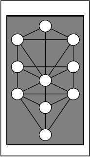
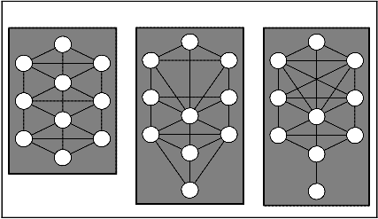

Dedicated to all sincere students of Franz Bardon’s writings.
Rawn Clark
2002
©2002 & 2005 By Rawn Clark
All Rights Reserved
Part One Introductory Material p. 13
Part Two
Introduction p. 27
Theory p. 30
Step One p. 42
Step Two p. 57
Step Three p. 67
Step Four p. 80
Step Five p. 95
Step Six p. 103
Step Seven p. 106
Step Eight p. 111
Step Nine p. 117
Step Ten p. 121
Part Three
p. 137
Part Four
p. 165
Appendix
p. 219
On a few occasions, I have been asked to write some sort of student's guide to Franz Bardon's "Initiation Into Hermetics". Each time, I responded with something like "I can't think of anything to add." And for years I've held this opinion, but my experiences participating in an Internet e-board discus- sion group about Bardon's works has led me to reconsider that sentiment. So, when I was asked to rewrite the Franz Bardon FAQ that appeared on a popu- lar website, I consented to write a few things concerning the first four Steps of IIH. Little did I know at the outset that I'd find all kinds of things to say! Word junkie that I am, I ended up writing no less than 37 full pages of com- mentary and answers to commonly asked questions. Even at that, hundreds more pages could be written.
Making things understood, presenting concepts in such a way that it
is easy for the reader to grasp them, is the responsibility of the writer. But the writer's responsibility stops there -- it is up to the reader to do the understand- ing itself. And it’s the reader who doesn't quite grasp the author's meaning that’s the one responsible for trying to figure it out. That is indeed the failing of a written thing -- there is no chance for dialogue and for putting all your questions to the author for clarification. Consequently, many written things remain misunderstood by many, or at least only partially understood.
In the case of Franz Bardon's books, this is compounded by the fact that as he wrote them, he placed himself in the perspective of the student who is actually involved with the labor of the material he describes. For instance, when he describes the exercises of Step Five in IIH, he is saying things that only a student who has done the labor of the Step One, Two, Three and Four exercises, will understand. Thus, the student who is in the middle of Step Two, or the student who is reading IIH for the first time and hasn't even begun the work, will understand what Bardon wrote regarding Step Five, less com- pletely than someone who has completed the Step Four work.
This was certainly the case for me and as I progressed through the Steps. I was repeatedly surprised to find that I had previously misunderstood things in the mere reading of the text that now made perfect sense because I had done the work leading up to that point in the path. It was within this thought that I found a reason for writing my commentaries.
I firmly believe that anyone who has progressed through IIH up to the start of Step Five, has no need for outside advice. The student of Step Five will have mastered the most rudimentary techniques upon which the re- mainder of the course is constructed. Plus, the student will have learned the ability to puzzle out their questions on their own and will have, by necessity, honed this skill to a razor sharpness. At this point, IIH becomes much easier for the student.
7
This stage, typified by the student's ability to ask their questions in- ternally and seek out answers through their own experimentation, is a neces- sary part of the path of initiation. As you trod the path of initiation, the re- sponsibility for your progress falls more and more into your own hands. In- quisitiveness and inventiveness are both important allies of the student of magic and there are certain passages where that is all you will have at your disposal to work with.
I have tried to find a balance between giving this fact its due respect and trying my best to steer away from giving encouragement to those who wish to leap farther than they are truly prepared to step. My compromise has been to do two things in regard to IIH: First, I have limited my detailed com- mentary and practical suggestions to the "Theory" section and the exercises of Steps One through Four.
Second, I have written a commentary on Steps Five through Ten which outlines some of the points where Bardon's way of writing from the stu- dent's immediate perspective interferes with the understanding of the unpre- pared reader. I will not offer my practical advice for these later Steps other than in personal correspondence or conversation with practicing students of those particular Steps. The same holds true for Bardon's second and third books, the "Practice of Magical Evocation" and "The Key to the True Quab- balah." I should add here, that I don't expect I'll ever be asked such questions anyway. Everyone that I know that has reached these stages in their initiation does not need to ask the advice of another person, consequently they don't ask.
All of my internal rationale aside, I do have concern that those who read IIH or who look ahead to the Steps to come, will get the wrong picture of what it all really means. At many places in IIH, Bardon has to resort to meta- phors that can only be understood if you already know what all went into the metaphor in the first place. It is difficult for the reader to make the subtle connections between what is learned in one Step and what is then applied in a new way in the next.
My concern is especially sharp when it comes to Bardon's PME and KTQ. All too often I have encountered students who pick up PME and want to START with evocation while totally overlooking what Bardon says (repeatedly) about having to first reach the end of the Step Eight of IIH (or its equivalent by other means) before beginning the work of PME or KTQ. It is easy to think from the mere reading of these two books that it is really possi- ble to ignore Bardon's stated prerequisite, but the reality is an entirely differ- ent matter and Bardon's admonition is completely accurate. This sort of mis- understanding of PME is, in my opinion, due to a lack of background in genu- ine magic and the consequent inability to truly understand the deeper signifi-
8
cance of what is being said. This is inescapably natural and what I have said is meant only as a statement of fact that must be dealt with openly and not as a criticism.
For this reason above all others, I will attempt, through my own com- mentary, to help the reader at least become aware of the places where this is an important addition to their understanding of the author's deeper meaning. Whether or not my comments actually add to your understanding is out of my hands -- all I can promise is that I will try my best.
I would ask that as you read my comments, you do so with this
thought in mind: The only true teacher is experience. Even though a thou- sand sages will spend a billion words trying to explain the Mysteries, you will not truly understand their full implications until you yourself have penetrated what lies beyond the veil. But never let this dissuade you from doing your damnedest to penetrate this veil -- it is only gossamer, as they say. The fur- ther you penetrate, the deeper your understanding will grow; and the deeper your understanding, the deeper into the Mysteries will you penetrate. Hold your conclusions with loose hands so that you may always be able to re-form them. Always remain willing to deepen your understanding -- the main barrier to this is holding on too tightly to our conclusions. Adopt your own conclu- sions not those of another. This is especially true considering that all I can offer you here are my own conclusions and yours might be far different than mine. The best I hope for is that reading about a few of my conclusions will inspire you to question and expand your own conclusions.
9

Introductory Material
You might ask, "who was Franz Bardon?" For those who are not familiar with his work, suffice it to say that Bardon is considered to be one of the most important adepts of our age. According to Bardon himself, he was directed by Divine Providence to reveal to humanity the meaning behind the first four major arcana of the Tarot. While he fulfilled his mission, only his revelation of three of the Tarot cards were published and the fourth has been lost due to the twists of fate. The first card, the Magician, was revealed in "Initiation Into Hermetics" (IIH); the second card, the High Priestess, was re- vealed in "The Practice of Magical Evocation" (PME); and, the third card, the Empress, was revealed in "The Key to the True Quabbalah" (KTQ). Only a small fragment of his revelation of the fourth card, the Emperor, remains and is found as an appendix to the book "Frabato", titled "The Golden Book of Wisdom".
With some occult writers, we are left with nearly every detail of their personal lives, while with others, we know no more than their pen names. The situation with Bardon lies somewhere between these two extremes. While we have, through the grace of Divine Providence, access to all of his published works, we can find only a small few details left over from his personal life.
What we do know is that he was born in Czechoslovakia in 1909 and that he died in 1958. He was the first of 13 children and an only son. Ac- cording to legend, his spirit inhabited the body of young Franz at the age of
16, in answer to the prayers of his father, Victor, for the guidance of a per-
sonal teacher.
During his young adult years, Franz worked as a stage performer un- der the name "Frabato". His performances were reportedly of a unique nature in that he displayed and explained the occult practices so common in that day. According to all reports, he was one of the few such performers who was not a charlatan.
In his early thirties, because of his interest in the occult, he was im- prisoned in a concentration camp by the Nazis. He survived three and a half years in the concentration camp but little is know publicly about his time there other than its obvious horror. At some point after that, he became well known as a teacher of Hermetics and worked successfully at a healing practice based upon those same principles.
It was during this period of his life that he wrote the three books we now know him by.
According to legend, it was his healing practice, combined with the
13
books he was directed by Divine Providence to write, that incurred the wrath of the communist government of Czechoslovakia which followed the war, and in the late 1950's he was again imprisoned. It was in prison that he apparently died.
He left behind a wife (Marie), a daughter (also named Marie), a son (Lumir), and a group of direct disciples. And, he left us three very important books in the annals of occult literature: IIH, PME, and KTQ.
It is impossible to truly know the inner life of an adept such as Franz Bardon, but we can discern certain things from his life, from the testimony of those who knew him, and from his writings. What stands out clearly for me is that Bardon's commitment to Hermetics was not about how great and powerful a guy he was. This sets him apart from many of his contemporaries and no where will you find braggartly statements about him other than from his disci- ples.
As evinced from what he wrote and what is known of his life, he was a humble, sincere and honorable man of great accomplishment. He was able to write down for all the rest of the world to see, a plainly spoken outline of the path of Hermetic Magic. Never before, and not since, has so comprehen- sive and so clear a guide been presented to the general public. Yet he man- aged to do this without touting himself as "The Magus of the Age", etc.
At the same time, Bardon was a very HUMAN being. He smoked heavily and experienced many difficulties with his health and life circum- stances. I think it was perhaps these very experiences that enabled him to de- vise a path that was so accessible to the common man or woman. While his path demands that the student work to ennoble their character, he never re- sorts to judging the student's character himself -- that task he leaves up the student.
Nothing concrete is known about who Bardon's corporeal teachers were or from where he learned Hermetic Magic and Kabbala. A good amount of speculation has passed under that bridge but the fact of the matter is that this question is relatively irrelevant. Certainly parallels exist between Bar- don's system and other important systems of practice throughout the world, but where Bardon's ideas originated has no real bearing upon the fact that his system has been proven to work.
Nevertheless, the question often arises as to what Bardon's "Hermetics" have to do with classical hermeticism. While his hermetics do derive from the body of writings known as the "Corpus Hermetica" (i.e., those ancient writings attributed to "Hermes The Thrice Greatest"), it takes a deep understanding of this work to see the similarities. The similarities are easier to detect with the later hermetic writings found in sources such as the "Kybalion" by Three Initiates, the "Emerald Tablet of Hermes", the "Seven
14
Hermetic Letters" by Georg Lomer, and the occult hermetics of his day. To Bardon, hermeticism is the science of occultism, based upon the teachings of the legendary figure known simply as Hermes.
With his book PME, the parallels between what he writes and the standard works on Solomonic magic, are very obvious. Yet even here, Bar- don offers the student more than most authors. The same is true of his book KTQ. Many modern students of Kabbala don't even recognize KTQ as Kab- bala, but in truth, Bardon's approach reaches back to a more original form of Kabbalistic practice. In this case, the "even more" that he gives the aspiring student is a universal Kabbala that is amenable to ANY language and there- fore does not require the learning of biblical Hebrew.
Perhaps the greatest gift of Bardon's writing style is that he explains things in a very practical manner and does so without all the flowery language so prevalent in occultism. It is obvious from the outset, that the reader has found an author who speaks from long and deep experience instead of off the top of his head. The depth of his experience is often difficult for the reader to grasp, for he speaks, from beginning to end, from the perspective of someone who has done every stitch of the work for himself, and in this way he naturally conveys the concept that all he describes is obtainable, even easy.
Bardon wrote for both the common reader (one not really interested in hermetics other than as an intellectual oddity) and for the serious student of hermetic magic. Even someone who has had no previous experience with oc- cultism can begin the work of IIH, since this work begins with the rudiments of initiation and gradually develops the student's magical abilities. Most who begin the work of IIH however, have had some occult training, but this is a two-edged sword, as it were, for often, the experienced occultist will find that they must unlearn some of what they have learned from other sources.
Of the many direct students that Bardon left behind, two are of spe- cial note. The first was his secretary, Otti Votavova, who was responsible for the book "Frabato" and for seeing to it that his writings remained accessible. While I have some problems with "Frabato" it is well worth reading if ap- proached as a "Zanoni"-like occult novel. I find it hard to believe that Bardon would have said some of the things about himself that were said in "Frabato". To me, it seems that Ms. Votavova's own love for her teacher amplified parts of Bardon's life out of proportion to their nitty-gritty reality. As I said, it is impossible to truly understand the inner life of so great an adept. According to the record, Bardon submitted to Ms. Votavova an outline of that period of his life covered in "Frabato" and left it up to her to flesh it out into a book. I'm certain that Ms. Votavova did her best (others assure us that Ms. V. loved the truth) but I'm equally certain that some parts of "Frabato" describe events with too symbolic a language. While I admire her work, I do not recommend
15
trusting it as an accurate biography of Franz Bardon. At best, it does a good job of giving the reader the flavor of the man and an idea of the depth of his commitment.
Another direct student of note is the late Dr. M. Kumar. He relayed several tales of Bardon and was ever helpful to students of Hermetic Magic.
There are many other personages of note, but the one remaining that I wish to mention is Dieter Ruggeberg. Mr. Ruggeberg has spent several dec- ades of sincere effort and expense to see to it that Bardon's books have re- mained available to the modern reader. He has also helped guide sincere stu- dents and has helped to keep the evolution of the public response to Bardon's work on the right track.
Today, we are blessed with the opportunity to purchase Bardon's works in print and to encounter others with the same interest through the Internet. We owe this fact to the efforts of not only Bardon, Votavova, Rug- geberg, and now the folks at Merkur Publishing, but also to countless other modern-day magicians. Folks like Daren, Paul Allen, Ralf Mulberg, Tim Scott, and William Mistele, to name just a few, are helping to increase this legacy.
There are six books related to Franz Bardon. The first three are the books that he wrote: IIH, PME, and KTQ.
The next three books were written about him by others. The first and most famous of these is the pseudo-biography titled "Frabato The Magician". The second is a compilation of notes from the archives of his personal disci- ples, known as "Questions and Answers". And the last is known as "Souvenirs of Franz Bardon", written collaboratively by his son, Lumir, and one of his disciples, Dr. M. Kumar.
16
INITIATION INTO HERMETICS
The first book by Franz Bardon to be published was "Initiation Into Hermetics", known in the original German edition as "Der Weg zum Wahren Adepten". It appeared in 1956, approximately two years before Bardon's death.
This book forms the foundation upon which PME and KTQ were later written and it outlines the basic training necessary for one to become an Hermetic magician. It is composed of a fairly enigmatic-in-spots section on "Theory", followed by a series of exercises and practical work divided into ten "Steps".
Within each of the ten Steps, you will find three types of exercises: Mental/Spirit, Astral/Soul, and Physical. The exercises of each category are designed to compliment the exercises of the other two categorizes in each Step, thus the student performs the current mental, astral and physical exercise during each period of work or meditation. This assures the student of a bal- anced advancement -- and balance or equilibrium is a very important thing in Hermetic magic.
Each exercise is presented in very practical terms. At times however, Bardon is not altogether clear as to exactly what he means. I believe that this is on purpose -- it is the responsibility of every student to puzzle some things out for themselves. This is in fact, a vital component of any path of self- realization and empowerment, and believe you me, the course of IIH's ten Steps will hone your inventiveness and inquisitiveness to a razor sharpness.
Only the Astral/Soul exercises of Step One are presented with time limits (approximately three months). The reasons for this are specific (i.e., it doesn't pay to dawdle over this particular part of the work) as are Bardon's reasons for not setting time limits to guide the student through the rest of the exercises. The reason that there are no time limits set for the remaining exer- cises and Steps is that each student progresses at their own unique pace -- there is no standard length of time it takes one to make it through the entire ten Steps. It does not matter how many decades or lifetimes it takes you to complete this work. The only thing that matters in regard to IIH is that you master each Step completely, regardless of how long it takes you to do so.
The work of Hermetic Magic can fit in with any of your other philo- sophical interests. In and of itself, it holds no religious doctrine yet is amena- ble to almost any. Throughout IIH, PME and KTQ this is left up to the stu- dent him or her self. In fact, many things in this course are left up to the stu- dent and that is as it should be.
17
THE PRACTICE OF MAGICAL EVOCATION
Bardon's second book, "The Practice of Magical Evocation", also appeared in 1956, shortly after the release of his first book, IIH. While many books have been written about the subject of magical evocation, none com- pare with PME. Books such as "The Greater and Lesser Keys of Solomon", "Abramelin the Mage" and "The Ars Notoria", to name a few, provide only a small number of details as to the tools required, the ritual orations, and the spirits to be evoked, but say nothing of the theory, preparation and details so necessary to genuine success in this interesting art.
PME does not stand alone -- it is designed as an extension of the work begin in IIH. In the introduction to PME and in several places through- out the text, Bardon warns that the student should approach the work of evo- cation only after having progressed through Step Eight of IIH (or an equiva- lent initiation). All too often students have been lured by the glamour and romance of evocation into taking up this work before they are properly pre- pared to do so, and this, as Bardon repeatedly warns, results only in very dubi- ous and possibly harmful experiences.
Without the proper training it is virtually impossible to understand the deeper significance of evocation. Generally, the unprepared student will think evocation to be fairly fantastical or strictly symbolic. Some believe that the ancient art of evocation is merely a primitive form of psychotherapy and for the uninitiated novice who steps into the practice unprepared, this is all that it will be. The reason for this is that without the prerequisite magical training, the practitioner will evoke nothing more than images from their own psyche, instead of entities that have actual existence independent of the human psyche.
One key to the genuine practice of magical evocation is the ability learned in Step Eight of IIH known as "mental wandering". The first step in any evocation is for the magician to establish a mental contact with the entity to be evoked through mental wandering into their respective sphere.
Another key to genuine evocation is the magical ability to work con- sciously within all three realms (mental, astral and physical) simultaneously. This alone is what transforms mere oratory and theatrical movement into genuinely magical acts.
The primary motivation for undertaking evocation is the exploration of the universe and the expansion of the magician's consciousness. It is not about gaining extraordinary powers over other people and events. Through evocation, the student may explore the other realms or spheres of existence
18
(this is often called "rising through the planes") and may be able to learn of many things directly from the beings which inhabit these realms. Further- more, some of these entities may be convinced to carry out the magician's will and perform tasks that would otherwise take the magician's extended attention to accomplish.
Bardon divides PME into three sections: Magic (theory and prac- tice), Hierarchy (an expose upon the hierarchy of planes), and Illustrations (a grimoire of sigils for the various Elemental and planetary beings).
In the first section, Bardon explains the theory behind evocation and explores the rationale behind, and the making of, each of the classic ritual tools. These instructions surpass any such previously given by past authors. Bardon teaches that each aspect of the ritual regalia must be personalized and empowered according to the magician's own understanding and needs. For example, in Bardon's instructions regarding the Magic Circle, he gives no in- structions as to which specific sigils and words are to be inscribed therein. Instead, he instructs the student to create a Circle that clearly represents the student's own understanding of the universe.
Another example of Bardon's unique approach is when he explains that the atmosphere within the Magic Triangle must match the atmosphere familiar to the entity which is to be evoked -- a fact unrevealed before.
In the section on the hierarchy of the planes, Bardon leads the stu- dent through each of the planes in sequence and introduces many of the enti- ties which inhabit them. Here you will find none of the language of former works on evocation. In the books of Solomonic magic, the entities described are of a low, demonic, nature, but those of PME are not. The beings listed in PME are ones contacted by Bardon himself and are most all willing to teach the student and aid in their advancement. For reasons of protecting the unini- tiated dabbler, Bardon does not provide a detailed list of beings of either the Mars or the Saturn spheres.
PME ends with a grimoire of sigils for each of the entities listed in the section on hierarchy. Though this part of PME is often the most interest- ing to the passive reader, it is truly the least of importance to the practicing student. The student who has actually pursued IIH through the 8th Step will be able to discover these things for him or her self, as Bardon mentions in the theory and practice section.
It is interesting to note that the attitude of the practitioner of PME must invoke a different sort of relationship with the evoked entities than sur- mised by other books on the subject. In those other traditions, the magician is taught to be overly forceful and downright rude in an effort to gain and main- tain control over the evoked entity. This is accomplished through all sorts of threats and exhortations about how the magician is supposedly working under
19
the aegis of deity. Essentially this is rooted in the magician's fearful and se- cret knowledge that they are in fact unable to control anything when left to their own devices.
In PME however, the prerequisite training insures that the magician is actually capable of maintaining control over the entire evocation. For such a magician, there is no need of fear. Furthermore, the magician is taught to always be respectful, yet stern when necessary, but never rude. Just as with any interaction with another being, the evoker will receive a reflection of what she/he puts forth. Thus it is prudent for the one wishing to master the art of evocation, to always be kind, respectful and honest, and to never try to force another being against their will. This is how friends are made and it will lead to your winning over the heart of the whole universe.
There are many, many more entities inhabiting the various planes than are mentioned by Bardon. No grimoire can ever completely list all the entities it is possible for the magician to encounter. Who knows who you may meet when left to the whim of Divine Providence? Yet, the ability to go out and make contact with entities unknown to you (i.e., those not listed in any grimoire) is a more advanced faculty and it may take meeting a familiar being or two before this becomes possible.
The serious student will, after due preparation, find no better guide to this ancient art than that provided by Bardon. And for the passive reader wishing to arrive at a more complete understanding of the mysterious practice of magical evocation, this book will be worth more than the reading of a hun- dred others.
THE KEY TO THE TRUE QUABBALAH
The third and final volume in the series by Bardon is "The Key to the True Quabbalah" (published in 1957). At least this is the last completed and published piece. A partial manuscript of a fourth book was later printed as an appendix to "Frabato" and it is rumored that there once existed a manuscript for a fifth book concerning Alchemy, but the latter was lost when Bardon was arrested by the communist government of Czechoslovakia.
The spelling "qUAbbalah" is unique but it is actually just as good as any other transliteration of the original Hebrew word into English. [I, how- ever, will use the spelling "kabbala" hereafter (it's easier to type and more automatic for me).] This is merely a reflection of the uniqueness of what you will find between the covers of this book!
20
If you are expecting to encounter yet another book on Western Kab- bala or one on the cosmology of Jewish Kabbala, then you will be sorely dis- appointed because Bardon's "Quabbalah" is not exactly like either. The basic technique and its focus upon the letter-sounds, harkens back to an ancient Jewish practice of Kabbala, but the exercises themselves are of purely West- ern Hermetic origin.
Bardon's Kabbala is not dependent upon the twenty-two Letters of the Hebrew alephbet. In fact, he employs the German letter-sounds through- out. The Hebrew formulas that Bardon explains are all composed of the Ger- man letter-sounds and are approximations of the Hebrew. Unfortunately, nei- ther Hebrew, German nor English script can accommodate all the sounds it is possible for the human mouth to create (I think perhaps Sanskrit comes the closest). Thus there are many other formulas than those that Bardon men- tions. But this fact is irrelevant since KTQ teaches the student the technique which will enable them to truly speak the universally sacred and creative lan- guage of kabbala. A kabbalistic formula does not depend upon words in the normal sense -- its language is formed through intent and in accordance with the flow of Nature.
As with PME, Bardon warns the reader that the work of kabbala should not be initiated until one has completed the first eight Steps of IIH or has achieved an equal training by other means. In one place he actually states that it is even better if one has also gained experience with PME. The training of KTQ requires the same sorts of abilities that PME requires of the student and if these prerequisites are not present, then little (if any) success will result. Certainly someone who STARTS with KTQ and thinks that they will thus master the true art of creative speaking will meet with no success until after many decades of ardent practice, and even then there are no guarantees. This art, even more so than evocation, requires a high degree of development at the outset.
KTQ is divided into three sections. The first section is titled "Theory" but this is not about the complexities of kabbalistic cosmology. In- stead, it is about the theory behind uttering creatively.
The second section is titled "Practice -- Preconditions" and serves to teach the student the technique of uttering the simple, single-letter formulae. After a brief introduction, this section is divided into Steps One through Seven, similar to how IIH is structured. The lessons begin at the beginning, as it were.
Bardon speaks of a quadrapolar type of action required for true kab- balistic utterance, each pole of which corresponds to an Element. The first Element, naturally, is relegated to Fire. The student begins with the "pronunciation" (this has nothing to do with physical speech) of the single
21
letters within the mental sphere as a certain color and shape. The exercises are similar to those found in IIH, except that they are infinitely more complex.
Next, the student learns how to employ the second pole, correspond- ing to Air, by "pronouncing" the single letters at a particular tone or note, si- multaneous with their utterance as a color and shape.
The third pole (Water) of the quadrapolar action involves "pronunciation" through the invocation of a feeling or sensation correspond- ing to the letter.
These three poles form what Bardon calls the "three sense concentra- tion" required for basic kabbalistic speech. After this, Bardon provides a brief, concise expose on the meaning of the numbers 1 through 10. This gives a clue as to what the fourth pole (Earth) of the quadrapolar action is. Namely it is the speaking of the letters with all three types of sense concentration ac- tive at the same instant, and founded upon the 10 original creative ideas.
Bardon closes this section by giving instruction in the use of the first of four keys, in the four realms (Akasha, Mental, Astral and Physical), and how to cause effects in any of these realms or in all of them simultaneously.
The third and final section of KTQ is titled "Practice -- The Magic of Formulas" and is dedicated to the remaining three keys. Each key refers to the number of letters involved in each formula. Thus the second key involves combining two letters; the third involves three letters, and so on. There are ten such keys according to Bardon, but he gives instructions for only the first four. At the end of the twelfth Step, Bardon speaks about Elemental formulas and the use of Divine Names and Beings.
There are a few specific errors and omissions in the latter part of KTQ. I suspect that this was intentional and intended to offer a degree of pro- tection to these deep mysteries and to shield the dabbler who would toy with them. It also serves as a test of the student's true abilities for it will require that the student confer with non-corporeal entities in order to discover these errors and omissions along with their rectifications. This ability is a prerequi- site for the true kabbalist and without it the student will be able to penetrate only a short way into this Mystery of Mysteries.
Truly any person who makes it through even the second section and is able to speak the single-letter formulas, needs no physical guide beyond that point. To achieve such a high goal provides the magician with all the internal guidance necessary to reach even higher goals.
22
FRABATO THE MAGICIAN
Prior to his death in July of 1958, Bardon gave his student and secre- tary, Otti Votavova (1903 to 1973), an outline for his biography. Bardon left it up to Ms. Votavova to flesh out the details and turn it into a readable book. Unfortunately for us, what resulted, while good reading, was not a strictly ac- curate biography.
The manuscript of "Frabato" was not completed until after Bardon's death and it did not see publication until 1979. Dieter Ruggeberg, the pub- lisher, writes that is was with some trepidation that he published "Frabato" under the name of Franz Bardon, since it was Ms. Votavova who actually wrote it. But eventually he was convinced to do so because he felt that listing Bardon as the author would give it the attention it deserved.
When I read "Frabato", I am reminded of Lord Bulwer-Lytton's book "Zanoni". Both share some details of the life of a man dedicated to the path of Hermetic initiation. "Frabato" however, covers only a moderate span of Bardon's life (from the time he was a stage performer till shortly before his final imprisonment), but it is enough to give the reader the flavor of the man and his works. Where "Frabato" fails, in my opinion, is when it comes to de- scribing the inner life of Bardon. Nonetheless, "Frabato" does give some in- sight as to why Bardon wrote what he wrote.
Over all, "Frabato" is worth reading -- so long as you remember that it is not altogether accurate. Of special interest to Bardon's students are a memoriam by Ms. Votavova (written two months after Bardon died), an epi- logue written by Mr. Ruggeberg (in 1979), and two appendices. Both of the notes from Ms. Votavova and Mr. Ruggeberg, convey some of the details of Bardon's life that are not present in "Frabato".
The first appendix is a fragment (only part of the first three out of ten chapters) of a manuscript in-progress titled, "The Golden Book of Wisdom". This book was supposed to have concerned the fourth leaf or trump card of the Tarot (the Emperor). To our great loss, there remains no complete tran- script of the work, but was does remain, is very intriguing.
The second appendix is a manuscript titled "High Magic". When Mr. Ruggeberg added this to a new 1982 edition of "Frabato", he was under the impression that this was written by Bardon himself. Since then, the truth has come out and we now know that this was none other than the book "Seven Hermetic Letters" by Georg Lomer. Apparently, Bardon was so impressed by this little book that he had it translated privately (prior to writing IIH), from the original German into Czech, for the edification of his own disciples. The
23
differences between the original version of "The Seven Hermetic Letters" and that provided in "Frabato" as "High Magic", may well be due to the fact that it was translated from German into Czech and then, from Czech into English!
Many later students of Bardon's writings were puzzled at the differ- ences between what is presented in "High Magic" and what is presented in IIH. "High Magic" is interesting (I have not read "The Seven Hermetic Let- ters") but it pales in comparison with IIH.
QUESTIONS & ANSWERS by Franz Bardon
This little book, first published by Dieter Ruggeberg in 1997, was put together by a group of Bardon's students sometime in the early 1950s, prior to the publication of Bardon's three books. What lies within these pages are the notes they took down of Bardon's oral teachings.
These notes were later edited by Dr. Kumar along with Silvia and Ulrich Ohm, and arranged under four section headings: concerning the mental plane, the astral plane, the physical plane, and the function of the akasha. The book is presented, as it's title suggests, in a question-and-answer format, with a total of 185 entries.
While it doesn't contain any truly startling revelations or insights for one who has read Bardon's other books, it is nonetheless, of great value to the student. In Q&A some of the topics which Bardon speaks of in other places are amplified and explained in greater detail. Its greatest value, as Mr. Rug- geberg states in his forward, is as inspiration for the meditations of the stu- dent. For certainly there is ample stimulus for thought within Q&A's pages.
SOUVENIRS DE FRANZ BARDON
This little book has yet to be translated into English. Consequently, I have not read it and I know only a little about it. From what I understand, it contains reminiscences of Bardon recorded by those who knew him. It also contains a few pictures relative to Bardon's life.
24

Commentary Upon
Initiation Into Hermetics
It is my honor to present to you some of my thoughts about the course of initiation presented in Franz Bardon's "Initiation Into Hermet- ics" (IIH).
[I will be employing the 1999 Merkur Publishing edition throughout my comments. The differences between this edition and earlier editions are minor. The only change is that the present English translation is easier for the modern reader than the original translation.]
When a student first approaches this work, questions inevitably arise. While the best way to answer these questions is for the student to meditate and consider and come to the answers on their own, this seldom satisfies the be- ginner and many will put the book aside out of frustration. These days, now that the Internet offers us an easy way of getting in contact with others who have been doing the work of IIH for many years, there is little reason for the beginner to have their simpler questions become a barrier to progress.
The answers to the deeper questions though, must still be sought out
by the student on their own. In these matters, experience is still the only reli- able teacher!
The thoughts that I proffer here come from my own personal experi-
ence of working through the Steps in IIH. It is up to the student to prove or disprove what I have written through their own pursuit of the work. What I write is only meant to expand upon some of the things that Franz Bardon out- lined, it is not meant to supplant what Bardon wrote. Hopefully, my words combined with the text of IIH, will make it easier for the student to begin the work with greater confidence.
IIH presents a coherent course of initiation. It, unlike many modern systems of initiation, begins at the beginning. Each Step builds upon what precedes it. Therefore, it is prudent that the student skip nothing along the way. What seems simple in the beginning will prove itself to be essential to success in the longer run.
Initiation is not a race. It matters little if it takes you 30 years to reach the 10th Step or if it takes only 10 years. Progress at your own pace (without dawdling) and practice both patience and perseverance. I have abso- lutely no doubt that anyone who sincerely wants to take up this work will meet with the desired success if they steadfastly pursue IIH.
Each of the 10 Steps in IIH is broken down into three categories of work: Spirit (Mental), Soul (Astral) and Physical. Each of these categories are to be pursued hand-in-hand. This brings about a balanced progress that is essential to true advancement in magic. Never should the student go, for ex- ample, from the Step One physical exercises, on to the Step Two physical ex-
27
ercises, until the Mental and Astral exercises of Step One have also been mas- tered. If a certain set of exercises within a Step come easily for you and you complete that category of exercises before you complete the other categories within that Step, then simply improve upon your successes while finishing up the rest of the Step's requirements. The standard of success Bardon lays out for all three parts of each Step must be attained before progressing to the next Step.
The work of IIH requires discipline and commitment. At first the student will need to carve out the time from their daily schedule to accommo- date the exercises. I advise that, if possible, the beginner devote at least an hour first thing in the morning and an hour each evening before going to sleep. But do allow yourself occasional exceptions to this regimen -- five days a week will suffice, but seven is better. Eventually this discipline will become a joy and the period during which it is an onus will pass quickly.
Nonetheless, it is important to consider this BEFORE one begins the work. First, the student should read through IIH a few times and get a feel of exactly what will be required. If you see no way in which your busy life can accommodate the time required for this sort of work, then it is best if you put off beginning the work until such a time as you are capable of reshaping your life. In the mean time, you can initiate the changes in your life that will even- tually allow you the time for these pursuits.
Be good to yourself. Initiation is not meant to be torture. It is sup-
posed to be, if not fun, at least interesting and inspiring. Improving oneself can be (and in my opinion, SHOULD be) a joyous pastime.
Initiation is not a path toward great riches nor power over others. If
these are your goals then you will meet with no genuine success in the pursuit of magic. Asking yourself the question of why you are choosing this work, is essential. It is wise to spend a goodly amount of time thinking about your rea- sons for taking on this responsibility.
Throughout the course of IIH, your intentions will be tested over and over again. These mark the various "pitfalls" or "blinds" that are spoken of by those who have made progress in the work. Only the "correct" motives will carry the student through certain parts of the path of initiation. If your mo- tives are too selfish or too egotistical, then you will run into a wall and only a reevaluation of your motives will free you. This is a good thing and it is not meant as a blockage, per se. Instead, it is a vital part of initiation that guaran- tees that the student will either stay on course or give up the pursuit.
In this modern age when information is so easily accessible, we have the habit of seeking answers from external sources. We have lost the habit of looking within for our answers and of trying our damnedest to figure things out for ourselves. While it is easy to accumulate a great deal of information
28
and store it in our minds as knowledge, it is only through experience that in- formation is transformed into understanding. The process of initiation is one of experience, not a mere accumulation of information. Thus, it is important to contemplate every idea you encounter in IIH and puzzle things out for yourself whenever possible. This is especially true when it comes to the "Theory" section. Much of what Bardon says in this section is a mere outline of the facts and is meant less as an answer to all your questions and more as something to spur your own meditation and contemplation. Please rest as- sured that some of the most confusing bits will clarify themselves over time as you gather more experience.
Initiation requires of the student a radical self-honesty. Watch out for kidding yourself that you have attained to something that you have not in fact attained to. And always be ready to lovingly criticize yourself.
We each have within us a most reliable source of guidance. This is the interior voice of our individual conscience. One of the most important lessons that I have learned is to ALWAYS listen to my conscience. It has never led me astray and I have come to a point where I NEVER disobey its dictates. I advise the same for you. Listen to and follow your conscience and your continued success will be assured!
I wish for you the greatest success in your path of initiation!
29
The philosophy of Elements is, obviously, a human construct. It is one way in which we humans have attempted to describe the workings of the universe. But even though it is a human construct this does not negate the fact that it describes a real thing. To my mind, it is a description that works well. It gives me a tool by which I can work with the actual forces that it tries to describe. Granted, it is imperfect and does not exactly match the reality of things, but then again, an exact match would be impossible.
The forces that underlie the Elements do exist regardless of whether or not we try to describe them and regardless of whether or not humans are around to perceive them.
There are two very important things to keep in mind when working with the Elements. First is that the Elements are not the same as the physical phenomena whose names they share. For example, the Element Fire is not the same as the physical phenomena of fire. The names of the Elements are de- rived through the "law" of analogy. This means that the Element Fire pos- sesses many of the characteristics of physical fire, such as expansiveness, heat, brightness, and the ability to transform what it touches.
All to often the student falls into the trap of drawing too close a rela- tionship between the Elements and their analogous physical phenomena. This tends to obscure the deeper significance of the Elements and should, there- fore, be avoided.
Second in importance regarding the Elements is the fact that in our physical realm, the Elements never act alone. All physical things are a combi- nation of the Elements. For example, the physical phenomena of fire is not composed solely of the Fire Element. Instead, physical fire is composed of all four Elements working together (plus the fifth -- Akasha). A physical thing may show a predominance of one Element over the others, but it still contains all four.
The Elements exist in their pristine, separate sense only in the most rarified reaches of the astral and mental planes.
Bardon does not write extensively about the Electric and Magnetic
Fluids in the Theory section of IIH. He does, however, speak of it in the ten Steps and in his other books, especially KTQ and Q&A. But in no one spot does he clearly and exhaustively define these terms.
Probably the first question that arises is what does he mean by
"Fluid"? By Fluid, Bardon indicates an energy or essence that manifests mo-
30
tion and handles in a manner similar to water. Both Fluids are dynamic things. IIH teaches the student how to manipulate or wield these Fluids, form them into whatever shape is desired and impregnate them with any corre- sponding wish.
These two Fluids are the primal polarity and are effective in every plane of existence. The Electric Fluid is the positive, expansive pole and the Magnetic Fluid is the opposite negative, contractive pole. As with a physical magnet, these poles cannot be separated -- they are manifest through the con- tinuum that unites them in their eternal embrace. Both forces are equal and interdependent, and have been described in every culture in one way or an- other. At the highest level, these poles are expressed through the two faces of The One.
The Fluids are the root of the Elements Fire and Water. This is why, in the course of IIH, the student looks within the Fire Element for the Electric Fluid and within the Water Element for the Magnetic Fluid. It is in fact, diffi- cult for the student to at first differentiate between the primary Elements and the Fluids. But there is a difference -- it's just difficult to explain.
Within the Fire Element, the Electric Fluid is found in the Fire's ex- pansiveness, heat and light. The Magnetic Fluid is found within the Water's contractiveness, cold and darkness. The Magnetic Fluid gives form to the Electric force and everywhere in our world, they act in unison. The Fluids are the two primal forces and the Elements are their extensions or modifications.
Each of the Elements can be said to have a specific ElectroMagnetic charge. The Fire Element is predominantly Electric and the Water, Magnetic. The Air represents a balance of the two Fluids (the continuum which connects these two poles) -- the perfect hermaphrodite, capable of accepting the influ- ence of either Fluid. The fourth pole of the quadrapolar magnet, Elemental Earth, represents the combined action of these three ElectroMagnetic charges.
This is often difficult for the novice to understand. It requires careful consideration to see how, at a philosophical level, the combination of parts can sometimes equal more than the sum of its parts. In this case, the amplifi- cation of effect occurs because the parts which combine are each dynamic things. Their dynamism makes them interactive and together, they make something new which does not exist at the level of their independent parts. Thus the Elemental Earth contains not only the Electric and Magnetic balance of Air, but also the raw polarities of Fire and Water. Together, they work in a dynamic, rhythmic and cyclic manner. It is the combination and interaction of these three dynamic parts that causes things to manifest solidity in each of the three mediums or substances (Mental, Astral and Physical).
The serious work with the Fluids doesn't begin until the eighth Step of IIH, so there is little point in listing too many correspondences for the Flu-
31
ids here. Between now and Step Eight, you'll have plenty of time to become familiar with the Fluids on your own. In the mean time, here are a few notes from Bardon's own comments as relayed by his direct students in the book "Questions and Answers" --
MENTAL (page 24, question #19): "The Electric Fluid fills abstract thoughts with pure Electric Fluid, warmth, expansion and dynamics. The Magnetic Fluid fills them with pure Magnetic Fluid and the opposite attrib- utes. For example, the Electric Fluid expresses itself through its attributes in willpower, while the Magnetic Fluid expresses itself in the antipole of the will, that is, in manifested belief, an aspect of the productive universal power."
ASTRAL (page 47, question #12): "Clairvoyance is an Electric ability of the astral body; clairsentience and psychometry are Magnetic abilities."
PHYSICAL (page 65, question #5): "If we are under the influence of the Electric Fluid, then the Fire Element is more effective in us. In this case we feel hot, or we are active to higher degrees, we work more diligently, and therefore we are internally satiated with the Fire Element. Through the in- creased influence of the Magnetic Fluid we perceive coldness; should the Magnetic Fluid become satiated within us, elimination increases."
(page 66, question #6): "On the surface of the human body, the ElectroMag- netic Fluid is effective as radiating life-magnetism. The right side of the body is (in the case of a right-handed person) the active or Electrical side, whereas the left side of the body is passive or Magnetic. The opposite is the case with a left-handed person.
"The Electric Fluid, through its expansion, causes radiating electrons on the inside of every body [i.e., physical thing], which on the other hand are at- tracted by the Magnetic Fluid of the earth. [This explains "gravity".] The Electric Fluid is located in the Inner of everything created, therefore also in the center of the earth, while the Magnetic Fluid is effective on the surface of the earth an on everything created. . . The Electric Fluid produces the acids in all organic or inorganic bodies or substances from a chemical or alchemi- cal point of view, whereas the Magnetic Fluid is effective in an alkaline man- ner."
Needless to say (but I'll say it anyway), the Electric and Magnetic
Fluids are not the same thing as the physical phenomena of electricity and
32
magnetism. While they are analogously related, they are not the same. The physical phenomena of electricity and magnetism are each primarily caused by their corresponding Fluid but they are not purely one or the other Fluid -- they are each composed of the four Elements with a corresponding polarized predominance of either Fire or Water.
It is impossible for me to describe what it feels like to accumulate and project the Fluids. The only way to gain this insight is through direct ex- perience, the key to which is to take careful note, in your daily life, of the qualities I described above and look for them, especially as you work with the Elements.
Bardon mentions "Od" in passing but doesn't really explain what he
means by this term. I've heard several definitions of Od but from what I've gleaned of Bardon's definition, he is referring to the character of the individ- ual or, in other words, the individual's expression of their particular Elemental composition.
The Od is primarily Electric in nature. Simply put, it is the energy that we each express through our accumulated thoughts and emotions. At the mental level, it is our attitude and the quality/quantity of our ideas, seen by how they influence others -- in other words, their emanation. In astral terms, the Od is our astral character or emotional composition, again in its emanative phase of influencing our surroundings. As to our physical body, the Od is the vitality we bring to life and express through our actions. Thus, one with a strong Od is generally outwardly gregarious and active, and one with a weak Od is passive and shy.
These three aspects of the Od work in unison to produce the overall
Od.
One place where Bardon speaks of the Od is in the little book
"Questions and Answers", under the Astral heading (page 50, question #21). This question concerns astral healing methods and gives an important clue as to what Bardon means by Od:
"We draw this accumulated vital energy directly from the universe and direct it into the astral body of the ailing person without passing it through our own body. Through this we prevent the weakening of our own vitality and at the same time prevent the mixing of our Od (character) with the Od of the ailing person; otherwise we can infect ourselves with the negative attrib- utes of the patient."
While Bardon speaks here only of the Od in relation to astral healing, the same can be said of the mental Od in mental healing and the physical Od during physical healing.
33
Bardon speaks of the Quadrapolar Magnet throughout his books but still, many readers have difficulty with the basic concept, especially those who are not familiar with a Hermetic diagram known as the "Cross of Equated Forces" (CEF). The CEF diagram is a simplified picture of the Quadrapolar Magnet and helps immensely in the understanding of it. Please take a moment to draw one for your own study (or at least visualize along with my descrip- tion).
Begin by drawing a circle with about a three inch (7.5 cm) diameter. Draw a vertical line, from edge to edge, through the center point of the circle. Then draw a corresponding horizontal line through the center point. This should net a quadrated circle, i.e., an equal-armed cross within a circle.
Now label the poles of the cross. Writing just outside of the circle,
put 'Fire' to the right, 'Water' to the left, 'Air' on top, and 'Earth' at the bottom. Just inside the circle write the following: Above the Fire line, put 'Hot', and below, put 'Dry'. Above the Water line, put 'Wet', and below, put 'Cold'. To the left of the Air line, put 'Wet', and to the right, put 'Hot'. To the left of the Earth line, put 'Cold', and to the right, put 'Dry'. At the center of the circle where your two lines intersect, place a heavy dot and label it "Depth Point" or "Aethyr".
If you want to colorize your CEF, you will need to again divide your circle, this time, into eight parts. Reproduce your work of creating the equal- armed cross but this time, place it askew so that it divides each of the four sec- tions exactly in half. As you will see, this establishes quadrants for each of the Elements instead of just poles for the Elements -- the four poles of the Ele- ments meet the edge of the circle at the center of each Elemental quadrant. Color the right-hand quadrant a bright red for the Fire. Color the left quadrant a cyan blue for Water. The top quadrant should be bright yellow for Air, and the bottom quadrant should be either a deep earthy brown or a deep olive green. [Alternately, you can use the color associations Bardon lists: Red-Fire; blue green-Water; pale, bright blue-Air; and, dark brown, gray, or black for Earth.]
And now, for a final touch , you can divide into halves (along the vertical Air-Earth line), the whole of the paper you are drawing on -- the Elec- tric Fluid on the right and the Magnetic Fluid on the left. With the right-hand side of your page, you should paint the area -- outside of the circle -- a bright red (slightly more blue than the color you used for Fire). Similarly, paint the left side of your page (again, outside of the circle) with a rich blue color (not as bright or as greenish as you used for Water).
You can, through time, add any correspondences you desire to this diagram. What it accomplishes most admirably is to illuminate the ways in which the Elements interact.
34
The main reason that Bardon used the analogy of a magnet specifi- cally, was to emphasize the interaction not only of the Elements, but more im- portantly, of the Fluids. Like with a physical magnet, these two opposite poles coexist. They both attract through their similarities and repulse each other through their differences. This is the same situation with the quadrapo- lar magnet but on a different scale.
The quadrapolar magnet is composed of four poles instead of two.. Three of these poles (the predominantly Electric Fire Element, the predomi- nantly Magnetic Water Element, and the equally balanced ElectroMagnetism of the Air Element) combine and their interaction causes the Earth Element.
Some say that the Earth Element is not a proper Element per se, but is the interaction of the three "true" Elements of Fire, Air and Water. This is only partially true. It IS the interaction of three Elements, but the fact that these Elements are dynamic and therefore interact when in combination, re- sults in the creation of an entirely new factor -- the combination ends up equaling more than the sum of its parts. It is this unique product of the inter- action of Fire, Air and Water that we call Earth. Thus the Earth manifests as one of the poles of the quadrapolar magnet.
By the same twists of philosophic thinking, the quadrapolar magnet, just like the common bi-polar magnet, is more than its poles. It is also the cu- mulative interaction of its poles.
At the center of the quadrapolar magnet lies the "Depth Point" that
Bardon speaks of in IIH (Step Five) and KTQ. This is nothing other than the Akasha or Aethyr, from which all else sprouts. The Hermetic's universe is infinite and one of the mysteries conveyed by the quadrapolar magnet is that this center point occurs every 'where', 'when', 'why', 'what' and 'who', within that infinity.
In the on-line discussion board, the question recently arose as to
whether the beings of the Elements are metaphorical and contained in the Psy- che, or whether they are independent entities. This is a common question con- sidering how much like a fairytale the writings about these beings sound.
The truth of the matter is that the beings of the Elements are, in and
of themselves, entities independent from the human psyche. Their FORMS, however, are not independent from the human psyche. Sound confusing?
The beings of the Elements exist within the astral realm and as such
they are seen to have a certain form. Their form is symbolic as is true of any astral form. Thus the form in which they are perceived varies from culture to culture. The European cultures generally view them as Salamanders, Sylphs, Undines and Gnomes, but, for example, an aboriginal African culture might perceive them dressed in an entirely different form.
35
We humans perceive astral beings differently since we each process our perceptions through different minds. But this does not negate their reality as beings which have an existence separate from our individual minds. It is only their astral FORMS which pertain to the human psyche, not their exis- tence.
It is prudent for the student to contemplate hard and long upon the
topic of cause and effect. This law is a friend of the magician as it is the workings of this law that magicians use to craft their ascent. For example, as you work at improving your character, you will follow certain practices which will cause your negative traits to be replaced by more positive ones. Cause and effect is why practice makes "perfect".
Yet the magician will face instances where cause and effect cannot be used to advantage. A good example is in the work of healing either one's own self or another person. There are some illnesses which have a deep kar- mic root and the magician may find that there is nothing that he/she can do to improve a patient's condition. Likewise, there are certain inevitable events (hardships) that the magician cannot divert due to the fact that they are deeply rooted in a person's own karma. Seldom is the magician allowed to interfere with another's karmic debt.
It takes a certain amount of wisdom for the magician to accurately discern when she/he should leave a situation alone. This is only gained through experience.
This, like the philosophy of the Elements, is a human construct that
seeks to describe universal phenomena. Its biggest failing, in my opinion, is that it implies separate, clearly defined realms. The truth of the matter how- ever, is that the universe is a unified whole. There is no exact point where the physical plane ceases and the astral plane begins. Likewise, there is no exact point where the astral realm ends and the mental realm begins. One graduates into the next and all three interpenetrate each other.
We divide the universe into these three parts simply because it is an
easier, more convenient way to grasp its wholeness. Like all such constructs, it is only a tool -- it gives us the practical ability to manipulate universal forces.
A simple rule-of-thumb to remember is that for a physical thing to
exist, it must also have existence at the astral and at the mental level.
The astral realm exists due to the descent of the mental realm into (or towards) the physical realm. It is, for the most part, an intermediary phase. The astral substance translates rapidly into physical manifestation and is easily manipulated by mind.
36
In terms of our human being, our mental body corresponds to our conscious awareness and it penetrates both our astral and physical forms. When we perceive our mental body, its shape and color reflects our state of mind. It takes on a shape similar to our physical dimensions only when we spread our awareness evenly throughout our physical body.
Our mental body does not feel our surroundings in a manner similar to the perceptions of our physical senses. The senses of the mental body are merely analogous to the physical senses. For example, there is a mental sense that shares some of the characteristics of physical sight, but the mental sight reveals a far different universe than that of physical sight.
Our astral body corresponds to our emotional being or personality and it penetrates our physical being. When we perceive our astral body, its shape is very similar to our physical body and its color reflects the state of our personality and emotions.
The senses of our astral body are very similar to those of our physi- cal body, yet also similar to those of our mental body. The astral senses medi- ate between those of the mental and physical bodies.
A good way to tell the difference between an astral journey and a mental journey is to gauge the degree to which our perceptions of our sur- roundings match those of normal physical perception. During an astral jour- ney one will be able to feel texture, heat and cold, etc., and will be able to hear sounds, smell odors, and taste flavors. During a mental journey however, there will be no physical-like sensations.
Our physical body is temporary. It lives for a certain amount of time and then dissolves back into the universe and its constituents disperse. Our astral body is also temporary yet of longer duration than our physical body. Eventually, it also dissolves. Only our mental body or spirit is eternal. It de- scends into a long succession of temporary astral and physical forms but does not itself dissolve.
The three bodies of the human being serve as a handy analogy for understanding the interaction of the three corresponding realms. One of the advantages of Bardon's system is that it directly relates the three realms to the student's three bodies. In this way, the student learns to experience each realm by first experiencing its impact upon their personal experience. The path leads from the intimately personal to the universal.
The question of religion is often troubling for the beginning student.
One is faced with deciding how to combine one's religious viewpoint (if the student even has a religion to which he/she adheres) with that of magic. Each student must, of course, puzzle this out for themselves.
The only advice that I can offer is that you keep an open mind.
37
Truly, magic can coincide with any religion. It has indeed taken every form throughout the ages and can be found within every religion know to humanity if one looks with eyes educated in the rudiments of magic.
To the magician, the most important part of religion is the feeling of devotion that it instills in the practitioner. Devotion, especially as it manifests through the act of worship, is a very powerful force that the magician can em- ploy in their process of spiritual ascent.
Bardon is very clear about what he means by asceticism. Basically,
he is speaking of self-discipline and self-control. He always recommends a balanced approach that does not stray into extremism of any kind. Nonethe- less, the question frequently arises as to whether or not the student should ab- stain from all forms of sex.
While many different systems advise abstinence from sex as a way of attaining purity or of increasing the will power, etc., this is not the case with Bardon's system. For the magician, it is clear that a complete abstinence from something so inherent and natural to human physiology as sex, is a form of extremism that produces little more than imbalance. There may be occasions in the magician's life when a temporary abstinence from sexual release is pro- ductive, but this is rare and only for very specific tasks.
In general, a healthy sexuality is a vital part of leading a healthy, well balanced life. Not only is it an essential bodily function, it is also an essential part of one's emotional well being.
Many male magicians practice what is called "retention of the seed"
and report that this is beneficial on many levels. This is a simple technique of putting pressure on the tubes which carry the semen and thereby preventing ejaculation. This does not usually adversely effect the male orgasm and in fact, often heightens the energetic effect that orgasm has upon the male body.
Several years ago, a fellow said to me that homosexuality is due to an imbalance of the Water Element and that it was something that the magician should overcome. After a little discussion it became clear that his feelings about homosexuality had nothing to do with magic, per se. His bias was due to his upbringing and his personal morals and was truly not founded upon the philosophy of the Elements.
In point of fact, this aspect of sexuality has nothing to do with one's Elemental balance. Homo-, bi- and hetero-sexuality are all natural and none is more nor less healthy than another. I should hope that no student will fear that their specific sexuality prevents them from following a magical path.
The only important parts of sexuality that effect one's spiritual growth and advancement in magic, are how one feels about one's own sexual orientation and how one treats others with whom one is having a sexual rela-
38
tionship. In other words, it is the emotional and moral aspects of sexuality -- those parts that the magician can change and improve upon -- that are of con- cern to spiritual ascent.
Getting back to the main topic; other forms of asceticism, such as starvation, self-flagellation, self-deprivation, and so on, are not advisable. These practices only produce imbalance. Equilibrium is achieved through moderation and disciplined control, and this is the path recommended by Franz Bardon.
Time is not a subject that Bardon discussed in the "Theory" section of IIH. Nonetheless, I think it is of such importance to the student of magic that I have chosen to say a few words about it here.
It is difficult to separate the objective reality of time from our subjec- tive, human perception of it. Both are of concern to the magician.
As physical human beings we experience time as a thing which stretches behind and in front of us. To us, time either seems to move forward, or we seem to move forward through time. Either way, we perceive time as having forward movement.
To keep track of this forwardness, we have constructed elaborate methods of measuring time's passage. We divide time into seconds, minutes, hours, days, weeks, months, years, etc.
At the moment that I'm writing this, it is 1:10 pm, Pacific Standard Time, on March 3rd, 2001. This fact has relevance to my mundane existence in that it helps me place myself into context with my scheduled routine, but as a magician, it has little relevance to me.
In magic, there is only one aspect of time that has true relevance, and that is the present moment or now. The exceptions to this are when the magi- cian needs to set a duration to a certain magical act (such as when keeping a magical healing effective till a patient is well) or when aligning a certain ritual with favorable astrological events, etc.
The essence of time is sequential change. The number of changes that occur within each moment are truly infinite. There is no stasis -- no mo- ment when change ceases and everything remains the same. This is the crux of what differentiates our subjective perception of time from the objective re- ality of time.
As physical human beings, we are not capable of perceiving the infi-
nite number of changes occurring at each moment. All we can do is grasp hold of a small few of the changes at a one time. The mechanics of human perception are such that we take the equivalent of a photograph of the present moment -- altering it into a static, unchanging picture of events -- and then we decode its significance to us. This happens very rapidly and we develop a
39
chain of these stop-action images and from this process we get the impression of forward movement similar to that derived from watching a motion picture made up of 24 static images per second.
This has the effect of putting us ever so slightly out of temporal and emotional sync with real-time or objective time. In objective time, there is only one part -- the present moment or now. Objectively, the Now is eternal and in a ceaseless state of change. It has no movement -- it simply IS.
The present moment has three components: 1) Infinite Change. 2) Infinite Continuity: This is what makes one moment so similar to what pre- cedes and follows it. 3) Nowness: This is the sensation of immediacy inherent to our experience of the present moment.
Processed by the human brain, the infinite present moment is per- ceived as a sequence of finite moments. Thus we feel that there are past mo- ments, present moments and future moments. But the magician should clearly understand that at the physical level of our existence, past is only a function of memory and future is only a function of our creative imagination. Neither past nor future can truly be said to exist presently.
In seeming contradiction to this, we speak of an eternity which en- compasses the whole of time's passage and we quibble over whether or not we have free will. I say to you that there is no contradiction, or rather, the contra- dictions coexist quite comfortably. While the present moment is all that truly exists within the physical realm where time involves itself so intimately with space, in the most ephemeral parts of the non-physical realm where eternity holds sway, all of time (past, present and future, as it were) exists simultane- ously and wholly.
Time is multidimensionally infinite. When one experiences eternity, the whole multidimensional infinity of time is perceived as a unified Now. From this perspective, the issue of free will is irrelevant due to the fact that infinity implies that there are enough options to accommodate the infinite number of available courses one can choose to take. In other words, it takes free will to create and to follow the infinite number of choices which fill eter- nity. From the magical standpoint, this is the root truth behind many of the modern physicist's theories regarding the idea that there are an infinite number of universes following an infinite number of time lines. Eternity is not filled with infinite possibility; instead, it is filled with infinite actuality. In other words, all possibilities are actualized -- if they were not, then eternity would not be truly infinite.
What prevents us from constantly perceiving eternity with our nor- mal awareness is the fact that as physical human beings we are intimately bound up in sequence. In every regard, one thing follows another. One idea leads to another, one action is followed by an effect, etc. To perceive eternity
40
(or any infinity in its whole, for that matter) requires that one must remove one's self to a non-sequential perspective. This perspective is so foreign to our day-to-day existence that seldom do we even consider its implications, let alone its possibility.
The physical realm is ruled by both space and time. I must say though, it is hard to separate space from time for without the factor of time, space would not exist.
The astral realm mediates between the densely sequentialized physi- cal realm and the non-sequential aspect of the mental realm. Thus the astral realm is not completely bound to substance and for this reason it is said that space does not hold sway in the astral. This is only partially true. For the ma- gician this is especially true when it comes to astral journeying and astral communication with other beings. In other words, the well trained magician may travel to any physical place through the astral realm and communicate with another being regardless of where in space they may reside. Time (i.e., sequence) however, holds a firm grip upon the astral realm and to truly travel throughout time, the magician must work within the mental realm.
The mental realm spans both the realm of sequence (time) and the non-sequential realm (eternity). Within the highest reaches of the mental realm, there is no sequence and one steps out of time, as it were, and views things from an eternal perspective. In the lower reaches of the mental realm (that of sequential thought and physical matter) time is a factor. Only at the level at which the mental realm intersects the physical realm does space be- come a factor, but this is a small part of the overall mental realm and thus we say that neither time nor space restricts the mental substance.
The student of magic will receive a great benefit by analyzing the nature of human perception and of time itself. Repeated meditations upon this subject, experimentation and reading the available literature will all forward the student's understanding.
And don't worry, there's plenty of time . . . <grin>
41
In my opinion, the most important thing that differentiates Bardon's system from most all of the other modern systems of magic is that it begins at the beginning. The crucial nature of these elementary, beginning steps is all too often overlooked by other systems and this does an ill service to the nov- ice.
True success with magic is built upon a foundation of simple things -
- the firmer the foundation, the farther the student will be able to rise. In Step One, the student will find the basics of the rest of the course: Meditation, In- trospection and Self-Discipline. I cannot stress sufficiently how absolutely essential these three things are to genuine magic.
With Step One, the "Schooling of the Spirit" concerns three basic types of meditation. The first is titled "Thought Control", but this is sort of a misnomer. What is meant here is not direct, active control of what thoughts arise in your mind; rather, what is referred to is establishing yourself as an active observer of your thoughts. When the observer-perspective is estab- lished, the multitude of thoughts that normally arise, will naturally slow of their own accord.
The second type of meditation is titled "Thought Discipline" and has two phases of practice. The first phase is enacted in day-to-day life and in- volves disciplining your thoughts so that they pertain only to the task at hand. For example, if you're driving to work, you practice the shunning of thoughts that have nothing to do with the act of driving. The second phase of the prac- tice is performed as a normal meditation (i.e., sitting with your eyes closed). Here, one chooses a single thought and shuns the intrusion of all other thoughts. It is best, in this instance, to begin with a simple, captivating thought. Each time your mind wanders, bring it firmly back to the chosen thought.
The third type of meditation is titled "Mastery of Thoughts" and in- volves the attainment of a vacancy of mind or an absence of thoughts. For those unfamiliar with meditation, this is often the most difficult task. It re- quires a good deal of will power and persistent effort. When thoughts intrude, you must learn to willfully shun them and regain your emptiness. I assure you that this is not an impossible task!
42
1) What is "thought control"?
In the initial exercises of Step One, Bardon describes three sorts of mental discipline or meditation. The first type involves merely observing what goes on in your mind. In this exercise, the student does not block any thoughts, s/he merely observes what is present. Given time and repeated prac- tice, you will notice that the flow of thoughts naturally slows down. But what is really happening is that you are re-tuning your mind to another, less clut- tered, level of mentation. This is not something that you can force, so it does little good at this stage to be blocking certain thoughts while letting others through, etc.
Of concern here, is the other distractions that arise, such as that car
alarm that keeps going off in the distance, or the bark of the neighbor's dog. These sorts of incidents can distract your attention from the observance of your thoughts. While such occurrences are not within your ability to control, your response to them is within your control. So, you must learn how to quickly dismiss these distractions and refocus your attention to the task at hand. At first this may be difficult, but with persistent practice, your ability to refocus will become so quick and absolute that such external events will no longer distract; or rather, the distraction will be so brief that it will not inter- rupt your practice.
Another sort of distraction is that you will be tempted to pursue the thoughts that arise in your mind. The point here however, is to distance your- self from involvement with your individual thoughts -- you are to be only an observer, not a participator. At first, this is also very difficult, but with persis- tent practice, you will learn how to distance yourself and observe.
No matter how difficult this exercise may at first be for you, do not give up. This is an essential precursor to the exercises which follow. You already possess the natural, generally unconscious, ability to do everything taught in IIH -- all that the training does is bring what has previously been un- conscious, into the realm of a conscious ability.
2) What is "thought discipline" or "one-pointedness"?
The second type of mental discipline or meditation described in Step One, concerns the one-pointedness of mind. Here you focus your thoughts upon a single idea and shun all other intruding thoughts. This practice eventu- ally re-tunes the mind to a still higher level of mentation. If you have learned to manage external distractions with relative ease and have reached the state of an observer of your quieted mind, then all you have to do here is select a single thought and focus solely upon it. The sorts of distraction you will en-
43
counter here is the intrusion of associated and non-associated thoughts, and the habit that your mind has of involving itself in these extraneous thoughts.
If we consider the analogy of re-tuning the mind, it becomes obvious
that the mind functions in predictable ways at each frequency. At the fre- quency of our normal day-to-day lives, thoughts come with great frequency and variety, and we exercise little control over them. At the frequency of the observer, the mind contains fewer thoughts, but the mind itself is still also functioning at the level of the day-to-day. The observer exercise merely shifts the focus onto another frequency, it does not make the day-to-day frequency disappear altogether. The same is true of the one-pointedness frequency -- the observer and the day-to-day frequencies still exist, only the mind is now tuned to a higher frequency. It's as if the background noise of the other frequencies still exist but are relegated to the background and taken out of the current fo- cus.
Dealing with the intrusion of unwanted thoughts during the one- pointedness exercise is much like the management of external distractions you learned during the observer exercise. Part of getting your mind tuned into the correct frequency for one-pointedness, involves learning how to quickly dis- miss these extraneous thoughts and refocus your attention. The more you do it, the quicker it becomes, and eventually, it happens so quickly that these dis- tractions no longer interrupt your exercise.
Do not "battle" the natural workings of your mind as this leads only
to frustration. The best tact is to coax your mind. You control your mind, not the other way around, and all you need do is take the control that you already have and make it a more conscious thing.
Again, do not give up if at first you fail. This is also a vitally impor-
tant ability to master for the future exercises.
3) What is "mastery of thoughts" or "emptiness of mind"?
The third and final type of mental discipline or meditation covered in Step One, involves the emptying of the mind ("vacancy of mind"). If you have sufficiently mastered the dismissal of distractions in the previous two exercises and learned how to limit your mind to a single thought, then reach- ing an emptiness of mind is the next logical step. This is still only a higher frequency of mentation, but it is a very difficult one to tune into unless you have mastered the observer and the one-pointedness exercises.
Perhaps the easiest way to reach the emptiness of mind is to go by stages. First reduce your mind to a single thought and then eliminate even that thought. If you are facile with the dismissal of distractions, then the dis- tractions at this level will be quickly managed.
Before progressing to the Step Two exercises, you should have made
44
good headway with your emptiness of mind exercises. Even a small few min- utes of true emptiness will suffice to begin with but you must constantly im- prove upon this initial success if you wish to make headway further along the course of IIH. This is a basic magical technique which serves as a foundation for the rest of the work -- without this degree of mental discipline, many things are impossible in magic.
4) Should I keep track of all my distractions or just the major ones?
I recommend that on your first trial of each exercise, you do not bother counting your distractions. Focus instead upon managing them. In the case of the first exercise with the observer perspective, after you get the hang of it, start counting your external distractions -- the ones that actually interfere with your exercise. If you are able to manage a distraction rapidly and it doesn't interrupt you, then don't bother counting it.
With the other exercises concerning the one-pointedness and the emptiness of mind, count all the distractions that interrupt your flow of con-
sciousness. Again, count only those that actually serve to interrupt you.
Counting and keeping track of your disruptions is not a necessary part of mastering these exercises. Its only importance is when it comes to gauging your progress. It can be very beneficial to be able to compare how many interruptions you experienced yesterday or last week, to how many you encountered today. By making these connections, you will be able to see ex- actly how much progress you have made.
In Step Two, Bardon mentions using a string of beads or knots to keep count of your interruptions during your exercises. This is a good tech- nique once you get used to it. Eventually, counting off another bead or knot becomes second nature and takes no interruptive thought at all.
5) Why is five minutes the goal to aim for?
Five minutes is one of those "at least" sort of goals. It is an arbitrary, but nonetheless good, rule to follow. The idea is not that you should strictly adhere to exactly five minutes; rather, the idea is that you should set a goal that is beyond the reach of your normal activity and one which will take a cer- tain degree of commitment to attain. Never be satisfied with five minutes as the ultimate, end all goal -- always push beyond this limit. Ultimately, you should be able to reach and maintain these states for as long as you desire, regardless of whether that's for five minutes or three hours.
6) Doesn't keeping track of my time cause a distraction?
It can if you let it be. The way I work is I give the exercise a go and when I reach the state required, I flow with it for as long as I am comfortable with. When I'm done, I open my eyes and check the time. But while I'm do-
45
ing the exercise, I don't think about whether I'm doing it long enough.
Another tact is to work at it until I suffer a major interruption. At that point, I open my eyes and check to see how long I went before I was in- terrupted. When I find that at least five minutes have passed before I was in- terrupted and that I can go for the same amount of time consistently, I then feel comfortable in assuming that I have attained my first goal.
How you measure your time is up to you and requires only a little inventiveness. I use a simple electric clock that doesn't tick, placed at my feet or otherwise within view. The problem with this is that I must remember what time it was when I started. Another alternative is to use a simple stopwatch, but that requires starting and stopping. All in all, use whatever method works best for you and affords the least interruption possible.
In my opinion, this process of establishing the positive and negative soul mirrors is THE most important phase of initiation. The repercussions of this form of self-analysis will be felt throughout the entire life of the student and will be of great benefit regardless of how far into the Steps of IIH one penetrates.
What is required here is a radical self-honesty. The student must ruthlessly penetrate through all of his/her illusions regarding who they are and how they act in the world, and excavate the unadorned root of the matter.
Doing this may be very troubling as you face up to parts of yourself that are unappealing. Thus, it is a good idea to be especially kind to yourself as you go through the process of introspection. Treat yourself to enjoyable activities and pastimes that you might not otherwise entertain. Remember that the unsavory parts that you uncover are simply who you are at this moment in time -- never forget that you have the power to change these parts of yourself!
The point of this exercise is not to simply make you fell bad about yourself, but rather, it is to clearly define where you must begin in the process of self-change. If you do not have a clear grasp upon who you really are, then you have no reliable means of knowing what you wish to become, nor little means of getting there.
In this process of self-change, the student transforms what is already present into something better. It is not a method which simply rids your per- sonality of its negative aspects. Instead, it takes the energy of a negative as- pect and changes it into a comparable positive manifestation. Here nothing is discarded or lost -- it is all transformed.
In the Step One work, the focus is upon taking stock. The work of transformation is relegated to Step Two. So while you are searching out the
46
positive and negative aspects of your personality, temporarily set aside thoughts about how you want to transform them and leave this part of the task to Step Two.
An important consideration in setting up your positive and negative soul mirrors is that this task is best done with complete privacy. Never should you share your mirrors with another human being! This is important in that it supports the sort of radical self-honesty that the task requires. You must en- gender the feeling of absolute safety as you write down things, many of which you would never share with another.
A medium sized spiral-bound notepad is sufficient. I advise against using a hard-bound journal because you may find yourself ripping out pages, especially as you begin the work of transferring your list of items to your Ele- ment sections. Besides, a spiral binding has the practical advantage of lying flat and does not need to be held open. [NOTE: Do not type your lists on your computer! Writing your lists by hand upon paper personalizes the proc- ess and makes it considerably more intimate.] Without being paranoid about it, store your written mirror in a place where you can rest assured that its pri- vacy will not be violated.
Begin, as Bardon advises, with the analysis of your negative traits. Write down absolutely everything that comes to mind, no matter how insig- nificant it may seem. Place yourself back into the different events of your life and see what there is to find. Keep track during each day of items that arise in the present. Meditate each day about who you are and in this way build a deep understanding of your negative side.
Franz Bardon suggests that you continue this analysis until you have a list of at least 100 items. Many people balk at this total, but I concur that this is a good standard to shoot for. If you find your list growing beyond 100 items, then go with it and continue until you feel satisfied that you have com- pletely uncovered everything. If you find it difficult to make 100 items, then continue relentlessly until you do.
As you analyze your faults, make sure that each item is really some- thing that YOU consider to be a fault. It is you who are judging yourself -- your list should not include the judgments of others.
Bardon suggests a time limit of one to two weeks for this part of the
exercise (it is very rare in IIH that he sets out a time limit). This is important because this initial process of self-analysis should have a beginning and an end. It is not something to be dawdled over nor is it something that should be rushed, but it is something that should be attended to within a predetermined amount of time.
At the same time, the process of self-analysis is a life-long responsi- bility for the serious magician. I have, over the years, gone through this Step
47
One procedure three times. Each time was separated by a few years and each time netted new results. This is another way for me to keep track of my prog- ress, as well as being an exercise that is very helpful to my progress.
The magician must at all times be aware of who she/he is. The proc- ess of crafting the personality into what you desire to be is life-long -- achiev- ing true absolute perfection is not possible as physical human beings. The best we can hope for is to be constantly involved with actively improving our- selves.
At any rate, to get back on track with the concerns of Step One: It is
tempting, during the construction of your list, to rely upon the list of faults associated with the "Four Tempers" that Bardon included in the IIH text. I advise against this as the items he lists are too general. Your list should be as specific as possible.
Where the Four Tempers come in most handy is in the next phase -- dividing your list into five sections by way of the Elements.
The division into Elements is often a very difficult task, but the im-
portant thing to remember at this stage is that it doesn't have to be perfect. Do the best you can (meditating upon the symbolism of the Elements will help immensely) -- you can always move an item to another category later if you find your original designation to be incorrect. In my first go at this process, my "Aethyr/Unknown" section was bigger than any of the other sections! It may take a while to figure out where they truly belong, but don't let that diffi- culty stop your progress.
Bardon does not specify any particular time limit for this phase, but try your best to accomplish this task within a week, or at the most, two weeks.
The final phase of this part of Step One is to divide each of your five sections into three categories of importance. Bardon suggests that this be done within a week's time, so don't get too carried away with this part of your analysis.
That completes the basic Step One work with the negative mirror and one now shifts to crafting the positive mirror. The same processes and time limits apply to this process. Devote as much effort to this list as you did with your list of negative items. With this phase, instead of trying to avoid feeling too bad about yourself, you will need to avoid getting a swelled head. :)
The end result is two mirrors of 100 or more items each, each di- vided into five parts containing three categories. This whole process should take no more than three months to accomplish.
Should the other exercises of Step One take you longer than three
months to master (which, by the way, is quite common), then it will be wise for you to spend that extra time studying your mirrors. Try to understand your present state of Elemental equilibrium. Look and see how the different items
48
from your lists relate to one another. Often, you can in this way uncover "complexes" built of many items working together. Spend a good amount of time getting to know yourself through this medium.
In closing, I repeat to you, this is a very, very important part of IIH and no effort should be spared in this regard. Even if you come to IIH after many years of introspection and feel that you know yourself very well already, do not skip this step! Even if you have made some progress in the past and then set aside the work for an extended period of time, still do not skip this task -- a repeat of it may go very quickly for you, but still it should not be skipped.
1) What if I can't come up with 100 items for each of my soul mirrors?
Then keep trying till you do! The 100-item requirement is a good one since it pushes you to dig as deeply as you can. This is not meant to be an easy exercise that you could do without much effort. The idea here is to com- pletely cleanse your soul and to hone your skills of introspection. This is a learned ability just like the mental discipline.
2) When do I stop making my list? Should I continue indefinitely?
This is the opposite of the first question. Some find hundreds of faults and have difficulty knowing when to stop for now. The point of this first exercise in introspection is to set a limited goal. If you find more than
100 items, then instead of continuing on indefinitely, limit your efforts to two weeks.
This is important because it is all too easy to wallow in self-criticism and thus avoid moving on to the part about changing yourself. Don't think of the overall process as being divided into sections so much -- it is a cycle, com- posed of two very important parts: introspection and subsequent self- transformation. Self-analysis alone doesn't accomplish much if there is no motive to change and improve what one finds. Likewise, self-change alone doesn't work for long if you haven't taken a thorough stock of what you al- ready have to work with.
So, set yourself a limit of no more than two weeks for this phase of the cycle. This will suffice for now. You can (and should) always go back and add things to your lists later -- it does not have to be absolutely perfect on the first round.
Which brings me to the subject of the endless nature of this cycle of introspection/self-change. This is truly a life-long habit for the true magician. Over my time at this work, I have constructed three such mirrors of the soul,
49
each separated by a few years. This is a process of constantly perfecting one- self -- there is no resulting absolute state of perfection. This is a dynamic and continuous process since, as humans, we are constantly changing and encoun- tering new parts of ourselves.
For the purposes of Step One, you must see to your forward progres- sion through the exercise along with your dedication to doing the best you can with it. This is only possible when you set goals and limitations for yourself. By approaching it in this manner, you learn the fundamentals of the process and you are then better prepared to continue working with it as the years stretch before you.
3) What should I do if I can't figure out which Element corresponds to a spe- cific trait?
At this stage, don't fret over it. Simply assign the item to which ever Element seems most appropriate and those you absolutely can't figure, assign to that wonderful category titled "unknown". As you work with the Elements, your understanding of them will increase and you will be better equipped to decide if you've been wrong in your assignment.
At this point in the ten Steps, the actual Element each item belongs to is of less importance than the degree to which the item effects you. For the purposes of self-change itself, the second division into three categories of im- portance or frequency, is far more relevant than an item's Elemental corre- spondence. This is true because the actual techniques of self-change that you will be working with are not dependant upon the Elements themselves.
In the Step Two work of self-change, the changing of your traits will balance your Elemental composition regardless of whether or not you have assigned your items correctly. The main use of the Elemental division is that it gives you an idea of the quality of your overall Elemental balance or imbal- ance. This is when an accurate designation by Element becomes truly impor- tant, but at this stage it is of minor importance.
This does not mean that you should not try your best to determine the correct Elemental correspondence. You should commit yourself to pursuing your "unknown" category until you assign each item to an Element. Also, as your understanding of the Elements improves, review the items you have as- signed and see if you still feel that you got it right. One advantage to not hav- ing to carve your soul mirrors into stone is that you can always go back and change your mind!
Some have found that researching the character associations of the zodiacal signs of astrology is very helpful as they try to discern which item goes with what Element. Some find solace in the more recent works on psy- chology, and so on. At any rate, there are written resources that will help.
50
But by far, the best aid is if you spend time meditating on the subject.
Another bit of practical advice is that when you encounter a truly puzzling item, look into it further. Often times, an un-catagorizable item is one that is too complex and that can be broken down into more specific parts. Usually, those specific parts are easier to categorize into individual Elements than is the whole complex of traits. Again, meditation is the magician's handi- est tool -- most answers are just inside, waiting to be discovered.
4) Under which of the elements would one place an addiction to substances, such as tobacco? I know FB himself dealt with this entity.
Well, as you've already guessed, there is no quick and easy answer. There are so many factors that contribute to an addiction that it is better if you break down these factors for yourself and deal with them individually instead of under the umbrella of 'addiction'.
I am also a smoker and have grappled with this issue at very close quarters. I quit smoking for three years and while it was very beneficial for the development of my will power, it had no effect upon my underlying addic- tion. From it I learned a great deal about how to manage my addiction, but it did not address the underlying emotional and mental aspects of my addictive- ness.
Any addiction is composed of many more factors than the object of addiction. For example, my body is physically addicted to the periodic rush of nicotine. This is true of any truly addictive substance, whether it is some- thing inhaled, eaten, injected or drunk. This is also true of the emotional states or activities that we are addicted to -- they each initiate chemical reac- tions within our physical bodies to which we can become addicted. While we can ameliorate the impact of the physical consequences of an addiction through abstinence, this does not address the other components of the root addiction (in many cases this has the opposite effect of amplifying those other components).
For me, smoking satisfied a certain inclination toward self- destruction. And it satisfied other needs as well: my need for social accep- tance (this was back when everybody smoked); my need for something to keep my hands busy (probably the bane of every artistic soul); my need to dis- tance myself from others; my need to have something entirely my own; and last, but by no means least, my need for pleasure (I actually like to smoke). Of course I could list a few more, but I'm sure you get my drift.
By breaking my addiction down into its component parts, the assign- ment of the parts to the Elements was made relatively easy. And this gave me the key to remedying the root addiction. Very often in any work of healing (and what else is the transformation of one's character other than a healing
51
process?) it is the root disease that is more important than its symptoms. This is especially true when it comes to the work with your soul mirrors. We can be going right along in the smug assumption that we've managed the symptom (e.g., I quit smoking) quite admirably, when all of a sudden we realize that we did nothing to remedy the root disease (i.e., my addictiveness) and, poof!, all of our hard effort was for nothing. Until you reach to the root of an addiction and tackle all of its parts, the addiction itself will persist. In my case, after three years of not smoking, I started smoking again. In fact, at no point dur- ing those three years was I NOT addicted to smoking -- all because I hadn't addressed the other components of my addiction.
When I first assigned the item "smoking" to an Element in my first go at my negative mirror, I listed it under the heading of the Air Element. There were, for me, some very Airy aspects to my smoking but this really did- n't work for me in a practical sense. When I began to break it into parts, I found that initial item spread out all over the place. In the end, it belonged to no single Element, and I'm certain that where the parts fell into place for me will be very different for each individual. So much of the soul mirror cannot be given a universal Elemental correspondence. Where such universal stan- dards apply accurately is only at a very superficial level of generalization. This is why the list of the character traits associated with the four tempera- ments that Bardon gives in IIH is not all that useful -- it is too general.
Any time I have difficulty determining what Element to assign an
item in my soul mirror to, I try to break it down into smaller parts. Invariably, this has solved my confusion and provided me with the handle by which to grab hold of and transform myself.
5) Why should I make a negative AND a positive soul mirror? Isn't just the negative mirror enough?
Granted, the primary purpose of the techniques of self-change is to equalize one's negative traits, but that is ultimately only half of the whole pro- cess. It is of equal importance that you nurture your positive traits.
It is also important in the process of introspection that you not look
only at your negative side. This can be very depressing if you don't balance it with an equal look into your positive side. The magician must walk in bal- ance, as it were.
Another important reason why both mirrors are essential to the over- all process is that often the answers to your negative traits are found amongst the list of your positive traits! In this way, you are already your own best friend.
52
This section of Step One opens with suggestions for a few simple daily exercises. The first concerns bathing and advises that the student bathe in a cold shower and brush the skin with a natural-bristle brush. This may sound silly but I urge you to actually try it. It is especially beneficial to the beginning student in that it very effectively opens the pores of the skin and facilitates bodily health. If you are arising very early to make time for your exercises, this technique will assure that you are fully awake.
The second set of recommendations concerns the establishment of a daily regimen of exercise. Again, this is especially beneficial for the begin- ning student as it draws the student's consciousness into a closer awareness of their physical body. This need not be taken to extremes -- the important as- pects being the maintenance of flexibility and bodily vitality.
While these exercises are not strictly "magical", they are nonetheless, of importance and are pertinent to the further, more "magical" exercises.
The next section is titled "The Mystery of Breathing" and forms the basis of many of the exercises to come. It is important therefore, that the stu- dent pay attention to the mastery of this simple technique.
Please note that what concerns the student here is not the physical constituents of the air that are inhaled (oxygen, nitrogen, etc.), nor does it con- cern the vital energy inhaled. This is not "pranayama" nor is it an exercise to hyper-oxygenate the blood. The only thing of concern at this stage is the idea inhaled with each breath -- this idea represents the quality of what is taken in and is attached, by the mind, to the Akasha principle of the physical air.
It is vital that the student maintain their normal rhythm of breathing
during this exercise. One should not lengthen the inhale or exhale and should not hold the breath at any point. It is normal for the beginning student to automatically lengthen the breath cycle because it takes a few moments to get one's thoughts in order. The result is usually a longer inhale while the mind is establishing the idea to be inhaled and a lengthy holding-in of the breath while visualizing that the idea is penetrating the whole body. The reason this occurs is because the student is unfamiliar with the building-up of the idea and the visualization of its action upon the body, so to compensate, the breath is ex- tended.
The problem that arises with this is that if this habit is continued then the student eventually associates the ability to breathe in this manner with ex- tending the breathing cycle and it becomes impossible to accomplish this task with the normal breath. Learning to do this exercise within the confines of the normal breath is important because the magician may not always have the op- portunity to slow the breath in order to perform the later exercises such as ac-
53
cumulation of an Element, etc.
With practice, the building of the idea and the circulation of it throughout the body, can be accomplished in a nanosecond. The trick to learning the exercises without altering the breathing cycle is to disassociate the ideation from the breath. For example, establish your normal, comfortable breathing rhythm and breathe normally as you build up the idea in the air sur- rounding you. Then, when the idea is well established, inhale a normal breath of the impregnated air. Do not hold your breath at this point, but instead re- sume your normal breathing while holding the idea in your body and circulat- ing it. Let your exhale be just of air and not of your idea.
In other words, it is your mind which does the work, not your breath. The breath is only the carrier of the idea and it is not necessary to alter your breathing cycle to accommodate the speed of your thinking. With practice though, you will get used to the mental work and it will become fast enough for you to not have to insert extra "empty" breaths while you think. Eventu- ally, your rate of thinking and visualization will match the rate at which you breathe.
Other important factors are:
1) The nature of your idea. The thought you inhale should be posi- tive and concern your own spiritual well-being.
2) The degree of your conviction. You should cultivate an attitude of absolute assurance that your idea is quickly becoming a reality.
3) Persistence. You should persist with a single idea until your goal is realized before passing on to another idea.
The next two sections are titled "The Conscious Intake of Nourish-
ment" and "The Magic of Water". These techniques are based upon the same principles as the mystery of breath -- an idea is attached by the mind to the Akasha principle of the physical substance. Again, this has nothing to do with the physical properties (vitamins, minerals and other nutriments) of food and water. Our only concern at this stage is with the idea that the student must attach to the physical substance.
The same requirements (i.e., the nature of the idea, the degree of conviction, and persistence) apply to these exercises. This work with food and water should be carried out simultaneous with the breath exercises. In other words, you don't need to master the breath exercise before beginning this work with food and water.
These exercises should be made a daily habit. Do the breathing exer- cises every morning and every evening, and do the food and water impregna- tion with each meal. With a little inventiveness, you will be able to impreg- nate your food and drink unnoticed by others, even when you sit in a crowded restaurant or at a table filled with family members.
54
1) Do I have to give up smoking, drinking and sex?
No, you don't HAVE to do anything. But, if you want to succeed at the initial work of IIH it is advisable that you temporarily eliminate all mind altering substances. These substances remain in your blood stream for ex- tended periods of time and they will effect how much control you are capable of exerting over your mentation. The idea of a magical initiation is that you must learn how to reach the equivalent altered states, of your own accord and without an artificial crutch to get you there. The well trained magician can match any altered state that a drug can induce -- AND control the nature and duration of the experience.
Once you have mastered your own mind, there is no reason why you
may not indulge yourself in mind altering pleasures with moderation. Eventu- ally, the only issue is whether or not the mind altering effect interferes with your magical practice. With attention to your timing, this can be avoided.
As to giving up all sexual expression, this is neither necessary nor
advisable in the long term for the magician who seeks balance. Sexual absti- nence breeds imbalance. Invoking this sort of specific imbalance may at times be of use to the advanced magician, but only for periods of short dura- tion and for very specific tasks. If you have what is now called "sexual addic- tion", then a temporary abstinence may be a helpful component of your recov- ery. But alone, denial will not resolve an addiction -- one has to reach to the root of an addiction and work at it from the inside AND the outside.
2) Do I have to become a vegetarian?
This is a common question and there are always disagreements as to whether vegetarianism is required of the student. At best, it's a good idea if your body feels comfortable eating only a vegetarian diet and you feel com- fortable preparing only vegetarian meals. But, it is not a requirement. The potential benefits to one's health are undeniable but this is not an essential part of learning magic.
What is far more important is to eat a well balanced diet. One that provides your body with the nutrients and energy resources it needs, will suf- fice. Try to avoid over- or under-eating.
3) Does this mean I have to start taking up yoga or go to the gym every day?
Not unless that is what works best for you. The idea behind what Bardon calls "daily gymnastics" is just to keep your body limber and fit. You don't need to go to extremes in this regard. Another important thing here is that daily exercise brings you into a closer contact with the state of your physical body.
55
4) How does the magic of breath, food and water work? Does the water have to be cold?
It is only the Akasha Principle that is worked with in these matters.
The Akasha permeates all things. By its nature, it is susceptible to any thought impressed upon it and it will transmit that thought to the matter it en- counters. Thus, when you impress your thought into the Akasha permeating the air you breathe or the food and water you ingest, the Akasha will transmit that thought to the Akasha permeating your physical, astral and mental bodies. Through the agency of the four Elements, the thought will become a part of your physical makeup at a cellular level. This changes your body at every level.
This takes time -- it does not, at first, happen over night. With prac- tice however, this can become a very effective tool for self-change and the rapidity of its effect will increase.
The temperature of the food or water you consume is not a factor in regard to the impression of a thought since it is only the Akasha you are work-
ing with. Where the coldness of the water becomes important is when you are accumulating the vital energy, an Element or a Fluid into the water. Then, it is not the Akasha (which permeates cold and hot water equally) upon which you are impressing your will -- it is the physical or astral substance of the wa- ter itself and the colder the water, the more readily it will accept this sort of accumulation.
5) Do I have to bless each meal and glass of water I consume?
No, you don't have to, but by doing it every chance you get, you will be increasing the effectiveness of this technique.
56
Step Two opens with a section titled "Auto-suggestion or the Secret of the Subconscious". This describes a relatively simple technique wherein the student formulates a positively stated phrase pertaining to an aspect of self that is in need of improvement, and then proceeds to repeat this phrase over and over, until it becomes rooted in the subconscious mind.
This is not a stand-alone technique -- it will not assure permanent change in and of itself. To truly effect change in one's self, affirmation must be joined with direct action. This is elaborated further in the section "Magical Schooling of the Soul".
Where this technique is most effective is for keeping the positive al- ternative to a negative trait at the forefront of one's conscious mind. By im- planting the positive affirmation into one's subconscious mind, it will naturally arise each time that the corresponding negative trait rears its head. When combined with a commitment to direct action, this is an invaluable asset.
In my experience, the best times to do this repetition are immediately
upon waking and just before falling asleep.
It is very important that the affirmation be phrased in the present tense and in a positive manner. For example, "I will quit smoking" does not suffice as it is both negative and not in the present tense. Far better would be "I am a healthy, happy non-smoker." Avoid phrases which include the word
'not'.
It is in this section that Bardon introduces the idea of working with a string of beads (or knots) to keep track of the number of times that the af- firmation is repeated or to keep track of the number of interruptions incurred in the concentration exercises. This is a handy tool. I work with a length of yarn in which I have tied 40 simple knots. At each repetition or interruption, I simply move my finger past one knot. This is advantageous in that it frees me from having to count my repetitions or keep track of the number of interrup- tions. Thus, keeping track does not itself constitute an interruption or distract me from the task at hand.
The student must have reached the recommended degree of success with the Step One meditation exercises before beginning this section of the Step Two exercises. The ability to concentrate is essential to the work which follows.
With this section of the Step Two training, the attention is directed toward the five physical senses. The practice serves as an introduction to a
57
type of meditation commonly called "creative visualization". But, as with many things in IIH, this is more than what is commonly meant or understood as creative visualization.
These exercises are an important first step toward the development of the subtle astral and mental senses. They are designed to achieve the follow- ing things: 1) To hone the student's powers of concentration. 2) To teach the student how to separate out one sense at a time. 3) To hone the student's physical senses.
The description that Bardon offers of these exercises is very straight
forward and simple. The doing of them however, can be quite difficult for the average student.
Most students notice that the exercises with one sense will be more
difficult than those of another sense and this is absolutely normal. The rea- sons for this are two-fold. First is the fact that we rely upon one or two senses more so than the others and so some of our senses will not be as well devel- oped as others. This is easily remedied by focusing upon the sense at hand and consciously using it throughout the day. For example, if you have trouble bringing up the aroma of a rose, then go smell a few roses and concentrate upon their aroma. Pay special attention to how things smell and this will help develop your olfactory sensoria.
The secondary reason for the difference between one's senses has to do with the Elemental balance. Each sense is related to an Element and so when an Element is lacking, the corresponding sense is also lacking. Which of these exercises is easy and which is hard can tell you a great deal about the current state of your own personal Elemental balance. As you work at craft- ing a greater balance of the Elements in your personality (see Step Two, "Magical Schooling of the Soul") these discrepancies between the senses should ease.
The exercises with the sensory concentration should be carried out exactly as Bardon describes. Be sure to work with just one sense at a time. For example, if you are working with the smell of a rose, shun all images of the rose and all remembrances of roses past as they intrude upon your con- sciousness.
The sequence of senses should also be followed. They are presented
in this sequence for very good reason and you should not spend five minutes with visualization, followed by five minutes with smell, etc., in a single sit- ting. Each sensory exercise should be mastered before beginning work with the next sense.
Choose simple images to work with when you are beginning the vis- ual concentration exercise. I advise against using complex images or objects such as Tarot cards. This tends to make the exercise much more difficult to
58
master and serves no good purpose at this stage. Likewise with the other senses, choose simple things to work with.
Please note that in Bardon's description of the "sentience or feeling
concentration", he refers only to overall body sensations such as heat and cold, and not to tactile sensations such as rough and smooth. It will do no harm however, to include tactile sensations in your work, but it is not a re- quirement.
1) Does auto-suggestion really work? Why?
Yes, it does, but not as a stand-alone technique. To be truly effec- tive, it must be combined with direct action.
This is a very common technique these days, so much has been learned about why and how it works. Cutting away all the fancy language and superstition, the simple fact is that by repeating your wish frequently, you keep the thought in your surface awareness. Of course, this also integrates the thought into your subconsciousness. But of main importance is that it helps you keep the thought in your conscious mind and from there, it impacts your other thoughts and actions.
2) What is the proper phrasing for my wish?
Your phrase should be entirely positive (no 'not's) and in the present tense (no 'I will'). For example, "I am a healthy, happy non-smoker" is prefer- able over "I will not smoke."
Furthermore, when it comes to using auto-suggestion for self-change,
your phrase should address the root of the problem, not the mere symptom.
3) I can't visualize for beans, how do I overcome this?
Number one, keep trying! Secondly, try looking at things more closely. Pay attention to their color, texture, size, shape, etc. As with any of the sensory exercises, the more acute your physical senses, the easier it will be to do these exercises. Persistent trouble with the visualization exercise can be indicative of an imbalance of the Fire Element, so if this is the case for you, then working at rectifying your Fire imbalance should make your visualization exercise go easier.
4) Why are some of the concentration exercises easy and others difficult?
There are two factors at play here. First is the acuity of your senses -
- we tend to favor one or more of our senses over the others in our day-to-day lives.
59
The second factor is your Elemental balance. The senses are associ- ated with the Elements and so when one sort of sensory exercise is more diffi- cult, it may be due to an imbalance in the corresponding Element. Addressing that imbalance may help with your sensory exercise.
5) I'm practicing Bardon's visualizations. I can imagine objects with closed eyes, but I still can't imagine objects with my eyes open.
The main reason that doing the sensory exercises with your eyes open is so difficult is because with your eyes open there is more visual stimu- lation than with your eyes closed. When your eyes are closed, all you gener- ally see is blackness and this allows you to easily concentrate on just your visualization. But when your eyes are open, all the images of your surround- ings interfere with your concentration upon the visualization.
There are several ways to make the transition between eyes closed and eyes open a bit easier. One method is to work in a darkened room. This reduces the amount of visual distractions during the eyes-open phase and mimics the blackness of having your eyes closed. Once you can manage your visualization with your eyes open in a darkened room, then gradually increase the light in your room until you can master the visualization, with eyes open, in a fully illuminated room.
A second method is to stare at either a black surface of a plain white surface when you build your open-eyes visualization. This will also reduce the amount of visual distractions.
A third method is to stare at a wall or into space with your eyes slightly out of focus. This blurs your surroundings and thus diminishes visual distractions.
A fourth, and probably the most difficult method is to first build your visualization with your eyes closed and then, holding firmly on to your estab- lished visualization, open your eyes. Once your eyes are open, try to hold on to your visualization and let it float before your open eyes.
The key in any case is to ignore the increased visual details of your surroundings when your eyes are open. Truly all you should concentrate upon is your visualization itself.
Many of the exercises require this sort of transition from mastery
with the eyes closed to mastery with the eyes open. This is designed to teach the student how to make these abilities things that can be employed at any mo- ment in their daily life.
When any exercise presents a difficulty for you, be inventive and try
a variety of different methods to overcome the difficulty until you find the method that works best for you. I'm certain that in the above case, there are more than just these four methods for overcoming your difficulty. I hope that
60
these examples will at least stimulate your imagination and inspire you to de- vise a method that works well for you.
6) Is it okay to skip from sense to sense or should I follow the sequence that
Bardon infers?
The order in which Bardon presented the sensory exercises is impor- tant and for a reason. It is no different in the work of accumulating the Ele- ments -- you follow the sequence of Fire, Air, Water and then Earth. The rea- sons for this are complex, but suffice it to say, you can trust Bardon on this. You will be wise to follow his directions exactly as stated. It is all too easy to fall into favoring one sense/Element and this violates the intent of a balanced magical training.
While the Step One "Schooling of the Soul" concerned the analysis of the personality, the Step Two exercises put this analysis into motion. Here the focus is upon what I call "self-crafting", wherein the student begins the process of transforming what has been revealed by self-analysis, into a more positive manifestation of who the student wants to be.
Bardon recommends starting to work with the most bothersome as- pect of the personality, but adds the proviso that if the student's will is weak, then she/he can begin work with a minor negative aspect. Truly, starting with the thing you want to change the most is the better way to go. But, if you really are lacking in will power, then starting small will build both your will power and your confidence.
It is of vital importance that you persist with your chosen item until you meet with the success that you desire. Do not ever give up half way to your goal. If you feel stuck, then spend some time reevaluating your approach to the problem and see if you can come up with a better tact.
Choose only one item at a time and devote all your personal re- sources to its successful transformation.
Bardon suggests a three-pronged attack, as it were, consisting of meditation, affirmation and direct action:
Meditation -- Once you have decided upon an item to work with,
spend a goodly amount of time in contemplation. Try to uncover everything about this item that you can. Each negative trait serves a positive purpose -- what makes it negative is that these aspects of ourselves usually are formed as subconscious responses. Delve deeply into the negative item and try to un- cover the positive purpose that lies at its root. Then craft for yourself a more positive way of meeting this root need, one that is a fully conscious choice instead of a subconscious habit.
61
Affirmation -- Enough has already been said in this regard in the opening section on the secret of the subconscious. The important thing here is that your affirmation be carefully crafted to support the positive alternative to your negative item. Use what you have learned about the magic of food and water to also support this work of self-crafting.
Direct Action -- There are two aspects to direct action worth men- tioning here. The first is the moment-to-moment kind. Simply put, this means that every time your negative trait arises in your day-to-day life, you must im- mediately stop yourself and concentrate upon your positive alternative. Re- place your negative response with a positive one. This is a very powerful form of self-transformation which will directly strengthen your will. The sec- ond aspect of direct action is more occasional. Here, one must plan certain actions which support the positive alternative and meet the needs of the afore- mentioned root purpose. For instance if the root purpose behind your nega- tive trait is to provide you with a sense of connection with others, then instead of satisfying this valid need through a negative manner, plan positive activities that will bring you closer to others in your community or family.
Practice makes perfect and after your first success, your next will come all the more quickly and easily. This work is very, very, very important to a steady magical rise and no effort should be spared. Since we are con- stantly changing beings, this is a work that never ends -- it only gets easier. Soon enough, you will get the hang of it and self-crafting will become a joy.
Please remember that the Elemental Equilibrium is not an absolute, static state. It is a thing that takes constant attention. You are not expected to achieve an absolute Equilibrium before beginning Step Three. What is ex- pected however, is that you will have made major advancement toward Ele- mental balance. A basic balance of the Elements within the personality is es- sential for the work ahead. Without this basic balance and the commitment to constantly improve upon it, the student risks damage to their psyche and their physical health.
1) Where should I start?
It really is best if you start with the one item in your negative soul mirror that bothers you the most. Stick with it until your transform it to your satisfaction.
Conceding to a weak will is a dubious practice in my opinion. I
know that Bardon says you can alternately begin with a lesser item and work your way up to the more important ones. But that really is not the best method. A strong will is essential to the magician so why not do yourself the favor of cultivating it from the outset? This might not be easy work for you,
62
but none of it is impossible. Instead of starting with a small item, work with a big item and go at it in small, manageable increments.
2) Am I supposed to change only my negative traits or am I supposed to tone down my outstanding positive traits as well?
This is a common question. The Step Two work should be focused
upon transforming your most powerful negative traits. At this stage, the great- est use for your positive soul mirror is its value as a guide to the rectification of your negative traits -- many times, the answer to what you should change a negative trait into, lies within your positive mirror.
Some will say that too much of a positive trait indicates an imbalance of the Elements. This is only partially true, for an overabundance of a posi- tive trait is actually a negative trait and should be logged in the negative soul mirror as such.
3) Help! I'm not making any progress with this, what do I do?
Well, though I'm sure you're tired of hearing this, keep trying! Sometimes, you will need to go back and entirely reevaluate your approach. Look again at the item you wish to transform, make sure you've penetrated to the root of the problem, and make sure that all the techniques for self-change you employ fit the item exactly.
Sometimes, true and lasting problems with this part of the work stem
from not having the degree of commitment that is required. If this is the case, then work at developing your commitment, as well as your ability to assure yourself that your desired change is inevitable or has in fact, already come to pass.
The Step Two "Schooling of the Physical Body" exercises build upon those of the first Step. Here, we shift our attention from normal lung breathing, to what Bardon calls "pore breathing" or breathing with the whole body.
The pseudo-scientific rationale behind magical breathing is that the cells of the body are constantly regenerating themselves. They die off and are replaced on a fairly predictable schedule that varies from one type of cell to another. Our nutrition and our state of mind determines the health of the new cells. When we practice the magical inhalation of an idea, that idea becomes integrated into the structure of our new cells and thus we slowly transform our entire physical structure. This is why it is so important that the inhaled idea be circulated throughout the entire body.
63
The pore breathing technique is fairly simple and requires only a lit- tle imagination to accomplish. Bardon uses the dry-sponge-dipped-in-water analogy, but another good analogy is that of centering one's attention in the physical bones of the body and sucking in the air from there. Either way it is described, the feeling should be that one is inhaling air through the whole body at once. Please note that this is not something that is merely visualized, but rather, it is something that should be FELT by the entire physical body.
The first exercise in pore breathing involves the inhalation of what Bardon calls the "vital energy". Unfortunately for the new student, Bardon says very little about what this vital energy actually is. Consequently, this is a question that is frequently asked, so I will take a few moments to speak about the vital energy in the following Q&A section.
The exercises of this section of Step Two begin with the whole body pore breathing of the vital energy. Remember to avoid altering the breathing cycle during these exercises. Here, just as with the Step One exercise of in- haling an idea through normal lung breathing, it is the mind which does the actual work, not the breath itself. As before, take empty breaths to accommo- date the lag time between your ideation process and your normal breathing cycle.
Once this technique of pore breathing the vital energy is mastered, the student's attention is turned toward adding an idea to the Akasha principle (of the vital energy or of the raw air itself). Here, the idea is inhaled through the entire body in the same way it was inhaled in Step One through the lungs alone.
Next comes the practice of the magical exhale. This follows the same principles as the magical inhalation but focuses instead upon ridding the body/psyche of a specific thought or ideation (usually the negative counterpart of the inhaled idea). Again, it is important to not force a change in the normal breathing rhythm -- take those empty breaths as needed. If you've mastered the magical inhale, then the magical exhale should be very easy to master as well.
When focused upon the same concern, the magical inhale combined with the magical exhale, constitutes a very powerful method for self-change. Its potentials for positive impact upon the physical and psychic health of the practitioner are uncountable.
The Step Two exercises close with a section on physical discipline. Specifically, this concerns the primary working asana (or bodily position) that the student will use throughout the IIH work. Bardon recommends a sitting posture (some call it the "King" or the "Throne" posture), but a kneeling pos- ture will work just as well for most students. It really matters little which par- ticular posture you choose for this as long as it is one in which you find bodily
64
comfort. For example, if you choose a lotus asana and can do it without your legs falling asleep from lack of blood flow then by all means use it, but if the lotus asana puts your legs to sleep, then choose another posture that does not have this effect.
This exercise can (and in my opinion, should) be applied to ANY posture the student finds themselves in throughout daily life. The point here is to attain the ability to be in any position and still be able to achieve both comfort and uninterrupted concentration.
As with Step One, it is equally important that the student not move
on to Step Three until all of the Step Two exercises have been mastered. If one part of the exercises goes quickly for you then spend your time improving upon your abilities until you have completed the rest of the Step Two require- ments.
1) How do I breathe through my pores?
Bardon uses the analogy of a dry sponge which absorbs the water. This is good, but I prefer the idea of breathing from the inside of your bones. This way you are drawing in the air from the inside of your self. There is no way to really describe how this feels, but with a little practice you'll get the hang of it on your own.
2) What is the vital energy?
There are two questions about the vital energy that invariably arise: "What is the vital energy?", and "What does the vital energy feel like?" The first question is less important than the second at this stage in the training but nonetheless, it is worthy of an answer.
The vital energy is a specific energy that has a specific constitution. It is composed of the Elements (Fire, Air, Water, Earth and Akasha) and the Fluids (Electric and Magnetic) in a ratio that has an affinity with living (animate) matter. When an animate being is surrounded with the vital energy, it naturally draws from the vital energy as much of the Elements and Fluids as it requires. Thus a blade of grass will draw a slightly different array of Ele- ments and Fluids from the vital energy than will a human body.
The vital energy is an astra-mental substance -- it is not, in and of itself, something measurable through the use of physical instruments (although many of its physical effects are measurable). Since it is astra-mental, it has an affinity for physical matter and does directly effect the structure of physical things.
65
The specific ratio of Elements and Fluids composing the vital energy expresses a slight preponderance of the Fire Element and the Electric Fluid. It also expresses the positive polarity of the Elements and Fluids with greater strength than it does the negative polarity. This gives it the quality of vitality reflected in its name.
Most often, it is visualized as a slightly golden brilliance (due to its preponderance of the Fire Element and the Electric Fluid). It is also visual- ized by some to be of a pure white brilliance instead of having a golden tinge, but in my experience this is not the vital energy that Bardon speaks of here. This pure white (totally colorless) energy is also vital, but its effect is more universal and not as specifically suited to animate, living matter. In other words, the pure white energy will have a greater effect upon the structure of inanimate matter but will have less direct an impact upon animate matter than the gold tinged vital energy. Since the focus here in Step Two is our own physical body, I highly recommend working with a vital energy that has a golden appearance.
3) What does the vital energy feel like?
As to the second, more important question about how the vital en- ergy feels to the student's body, the main clue to this is found in the name this energy is given. This energy feels vital and it is stimulating and energizing to the human body. When performing the Step Two work with the vital energy, the student should feel this stimulation throughout the nerves of their entire body. Little more can be said for it is up to the student to find, through ex- perimentation, their connection to this energy for themselves. With these clues and directions, you should have little trouble in this regard.
66
Step Three opens with a discussion of the "four pillars of the Tem- ple" -- Knowledge, Volition, Courage and Silence. Often, these terms are misunderstood, or rather, incompletely understood, so I will add a few words of my own to those written by Bardon in this regard.
Knowledge: This does not mean the mere stuffing of the mind full of facts and figures. This alone will not aid the student's magical rise. Rather, the type of knowledge important to the aspiring magician is that gained by combining study with practice. As any serious student of Alchemy will in- form you, study alone does not make one an Alchemist. It is only through putting what one learns from study into practical use that true knowledge arises. This is what leads to Understanding and, eventually, to Wisdom.
Volition: Volition refers not only to the power of the magical will to overcome all obstacles, but also to the ability to invoke the feeling of absolute assurance that what one wills is real. This is especially important when it comes to the use of affirmations and the plastic imagination. Volition in- creases with practice -- it is something that can be cultivated. With a strong will, many doors which remain closed to the ordinary person, open for the ma- gician. But never should the magician's will be a violent thing which rips through a barrier unconcerned. The sort of will the magician wields, is like the undeniable force of running water -- it penetrates obstacles by going around them instead of ruthlessly obliterating them.
Courage: This refers to an unflinching willingness to stand up to any obstacle and to face any challenge which confronts the magician. At the root of courage is the ability to control one's fear and to reach beyond its limits. This does not mean that one should ignore fear for it is a natural and impor- tant part of our mechanism of self-preservation. All that is meant is that when fear arises, it should be treated as a valuable bit of information and should, when appropriate, be set aside. Except in truly life-threatening situations, the magician does not allow fear to be a barrier to progress. This aspect of cour- age comes into play for the beginning student especially in regards to the work of introspection and self-change. Often times we will see things in our- selves that it takes courage to face and to overcome. A good meditation for building one's courage is to consider exactly what the consequences of a fear filled situation might be. Short of death or dismemberment, the consequences of most situations are minor and are usually magnified out of true proportion by the fear itself. There are also other methods for building one's courage. For example, I have an innate fear of heights, so I chose for a short while to become a window washer. This required climbing some pretty tall ladders, but by practicing caution, I was able to go beyond my fear. I still have an in-
67
nate fear of heights, but now I know that my fear exceeds the real danger and it no longer prevents me from testing my limits.
Silence: This is probably the least understood of the "four pillars".
Some take this injunction to mean that absolutely no word of magic or one's experience with it should ever be mentioned, but this is not the case. If this were so, then why, for example, would Bardon have written and taught as he did? At its root, silence addresses two concerns: the personal ego and the sanctity of magical experiences. The part of our human ego that requires ap- proval from others must be contended with by every student of magic. Here, silence about the nature and extent of one's magical experiences and abilities is very handy. If we start bragging about how all-powerful we are, then we feed this ego need and we become distracted from our higher purpose. By maintaining our silence in this regard, we avoid inflating this part of our ego and make it much easier for ourselves to contend with it. Also of note is that magical experiences are of a very intimate, personal nature. Their intimacy is easily violated when we speak the details of these experiences to another. Such a violation subtly diminishes the import of these experiences and does the student a disservice. Personally, I have no problem discussing the rudi- ments of magic, but never do I relay the intimate details of my own experi- ences. I have found this advantageous to my own rise and recommend this tact to you as well. This form of silence builds a very powerful charge of inti- macy into your experiences that is unattainable in any other way.
These Step Three exercises take the student a step further into the art of creative visualization. Creative visualization as described by Bardon is fairly unique in that the student approaches it in a step-by-step manner and assumes absolute control over what is visualized. This technique is important to the student's furtherance in magic for several reasons. It strengthens the concentration and will, it makes the physical senses and their astral and men- tal corollaries more acute, and it prepares the student for the later work of magical astral and mental wandering.
While at this stage the creative visualization is only a mental opera- tion, it leads, combined with the other exercises, to actual astral experiences. The distinction between a mental projection that encompasses physical-like sensations and a genuine astral experience (which also encompasses physical- like sensations) is slight, but that is the point. Since it is so slight, mastery of the multi-sensory mental projection leads the student naturally to the art of astral projection. The main difference between these two is that in the astral projection, the realm visited is not reliant upon the mental projection of the
68
magician; rather, the realm visited exists of its own accord. [The same can be said of true mental wandering except that in mental wandering there are no physical-like sensations.]
Another significant difference is that a true astral projection requires that the magician consciously separate the astra-mental body from the physi- cal body and this does not occur with a mental projection.
Yet another aspect of these exercises that is worthy of mention is that
through mastery of creative visualization, the student learns how to effectively build an image that can be wandered through astrally. A thoroughly crafted creative visualization effectively establishes a connection with its astral coun- terpart. For example, this is the secret behind the astral wandering of an oc- cult symbol -- the symbol is projected through intense creative visualization which connects the projection to the symbol's astral counterpart and makes it a thing which can be explored with the astra-mental body.
With these things in mind, I hope it is apparent to the student of IIH that these exercises are of great importance. As a matter of fact, each of the exercises found in IIH are of great importance to a steady, balanced magical rise and none of them should be overlooked.
If the student has indeed mastered the single sense exercises of Step Two, then these Step Three exercises incorporating two or more senses at once should present no difficulty. These exercises are presented in a very spe- cific sequence which should be followed exactly.
The first exercise involves the external projection of a scene. Bardon uses the example of a ticking clock wherein the student combines the visuali- zation of the clock with the hearing of its ticking and chiming. This projec- tion should float before your eyes. Bardon also talks of visualizing a stream or a field of wheat, etc., employing two or more senses, but it should be noted that these also should be projections which are separate from the student -- these are not scenes that the student wraps around him/herself and stands in the middle of.
This first exercise is very much like the Step Two exercises except that more than one sense is employed at a given time. This exercise should be accomplished with the eyes open. The point of this particular exercise is to familiarize the student with combining the senses.
Only when the preceding has been mastered should you turn to the next exercise. This time you will work with your eyes closed and the visuali- zation will be a personally familiar scene which is wrapped around you. This is far different from a projection which hangs in the air before your eyes and which is essentially separate from you. At first, you should make this scene only visual -- the point here being to familiarize you with the technique of stepping into a scene.
After this is mastered for five minutes, then create a scene and add
69
sound to it. Then add sensation, etc. Here, you must involve yourself with the entire experience of your scene -- see its every detail, hear its every sound and feel its every sensation. Smell and taste can also be added to the visuali- zation as appropriate.
Once you have mastered this technique with your eyes closed, pro- ceed to experiment with your eyes open. You will have mastered this when you are able to achieve the same quality of involvement in your scene as you did with your eyes closed.
Next in sequence comes an exercise where you wrap an unfamiliar
scene around you. Work as before with as many senses as seem appropriate. Start with your eyes closed and when this is mastered, shift to working with your eyes open. Working with a scene that is unfamiliar to you requires a greater degree of inventiveness and that is, essentially, the point of this varia- tion.
Next, we turn to the multi-sense visualization of various animals. Start with stationary animals and master their visualization with eyes closed
and then with eyes open. [Note: This is a projection, not a wrap-around scene.]
Now put those animals in motion and work first with eyes closed and then with eyes open. As before, begin with animals that are familiar to you and then move on to unfamiliar animals.
The final exercises of this section concern the visualization of human
beings. Begin with familiar humans and project their image, without sound or smell or movement, first with the eyes closed and then with the eyes open. Then move on to the same exercise with unfamiliar humans.
When this single-sense visualization is mastered, switch to familiar
humans in motion and speaking. Employ as many senses as you can, working first with your eyes closed and then with your eyes open. Finally, repeat this exercise with humans unfamiliar to you.
This completes the magical schooling of the spirit for Step Three. At the end of these exercises your abilities with creative visualization should be well honed. You should be able to place yourself within any scene you desire, for as long as you desire, populate it with whatever animals and humans you desire, and be able to employ any of the senses you desire.
1) How real should my multi-sense visualizations be?
Ultimately, they should be so real that when you reach out to touch them, you are surprised that they have no physical substance. Their degree of detail should be so exact that you cannot visually tell them apart from the genuine article.
70
2) Why do I have to work first with my eyes closed and then with my eyes open?
These are both valuable abilities for the practicing magician. We
start first with our eyes closed because that is generally an easier way to learn the basic exercise. Once it is mastered with the eyes closed it is then rela- tively easy to master the exercise with the eyes open. The same quality of the multi-sense visualization should be achieved with the eyes open as with the eyes closed.
3) What's the difference between a visualization that hovers in the air before my eyes and one that I step into?
These are also two valuable abilities for the practicing magician. An
example of the "hanging before the eyes" type of visualization is the imagina- tion of a ticking clock which hangs on a wall. Here, there is little direct in- volvement with the visualization itself.
An example of the "step into it" type of multi-sense visualization is
the imagination of an entire room surrounding you. Here, there is an intimate involvement with the visualization and you can employ all five of your senses at once.
The exercises begin with the "before your eyes" type of multi-sense visualization because this is an easier way to learn the basic technique and makes the transition to the "step into it" type that much easier.
Before beginning these Step Three magical schooling of the soul ex- ercises, the student MUST (!) have first established a rudimentary balance among the Elements of the personality. In order to avoid any ill effects upon the psyche and the physical body, the student must be absolutely certain that there exists no negative excess of any Element in their personality. All of the most bothersome items found in the negative soul mirror must have been ad- dressed and transformed.
This caution cannot be stated strongly enough. No matter how eager you are to progress, please do not, by any means, enter into these exercises until you have establish this rudimentary balance. If, for example, you still have strong negative aspects of the Fire Element that influence your personal- ity, then working in this manner with the Fire Element will do nothing more than exacerbate that imbalance and cause you grief in the long run. If, on the other hand, you have transformed your prominent negative traits, then this work with the Elements will help strengthen the positive aspects of your per- sonality and cause only joy.
71
As Bardon states, this work with the Elements is the deepest arcanum of magic. It forms the root of all true magical abilities and the student should pay close attention to these exercises.
The system outlined by Bardon in IIH differs from all the rest in that the student learns how to cause magical effects by their own direct manipula- tion of the Elements. The student of IIH does not start out by relying upon other beings for these effects (e.g., the Beings of the Elements, or rituals em- powered by others, etc.). In IIH, this is seen as later work that is only advis- able once the student has themselves mastered the direct, hands-on manipula- tion. This is what, in Bardon terms, distinguishes the true magician from the sorcerer.
These magical schooling of the soul exercises combine the already established techniques of visualization, ideation and pore breathing. Simply put, the student visualizes their body surrounded by an infinite sphere of the Element at hand (e.g., red for Fire), empowers the visualization with the idea- tion of the Element (e.g., expansiveness and heat for Fire), and then inhales this empowered visualization with the whole body.
Bardon suggests seven inhalations to start, building over time to thirty inhalations, and it is advantageous to follow his instruction in this re- gard. It is important that the student build slowly as this gives time for the body to acclimatize itself to the Elemental burden and thus the student avoids any ill effects.
Bardon suggests a particular color for each Element to facilitate visu- alization: Fire --red, Air -- blue, Water -- greenish-blue, and Earth -- yellow, gray, or black. Strict adherence to these correspondences is not absolutely necessary. Personally, I employ the following: Fire -- bright red, Air -- yel- low, Water -- cyan blue, and Earth -- brown, dark gray, or black. These are the correspondences that I worked with before I encountered IIH and they are the most comfortable to me. So, if you have worked with a different set than that suggested by Bardon, by all means continue with it if it works well for you.
Of greatest importance in these exercises is the feeling that the Ele- ments invoke within you. You must feel the heat and the expansiveness of the Fire and so on. This must become for you a physical sensation.
[Note: Bardon speaks here, and in several other places, about what can be accomplished with the Elements, etc. But it is important that you real- ize these are just examples of what can be achieved after years of effort and that they are not meant as requirements. These are extreme practices and are not advised for the student as they tend to divert one from the more important goal of a balanced magical progress.]
The exercises themselves are very simple. You begin by establishing
the visualization and then empower it with the appropriate ideation. Then you
72
inhale the Element with the whole body through the now familiar technique of pore breathing. Again, be careful to avoid altering the normal breathing rhythm -- take empty breaths as needed. Begin with seven inhalations and increase by one inhalation with each exercise till you reach a total of thirty inhalations. Once you have inhaled the proper amount of the Element, spend some time sensing the Element's attributes and circulating the Element evenly throughout your body.
When this phase of inhalation and contemplation is complete, you must then magically exhale (with the whole body pore breathing) the same amount of the Element that you inhaled. The idea here is that you should rid yourself of all the excess of the Element that you previously inhaled. Use the same number of exhales that you inhaled, but be sure that you exhale exactly the same amount that you inhaled.
This is important because it is unhealthy to walk around with an ex- cess of the Element for an extended period of time after your exercise. Like- wise, it is unhealthy to go to the opposite extreme and deplete your body of its normal amount of an Element. In other words, exhale neither more nor less of the Element than you have inhaled.
Master this exercise first with your eyes closed, and then master it with your eyes open. Never neglect this habit of working with the eyes closed and then with the eyes open as it will become an important ability further on in the training as you apply these techniques in your daily practice.
Once you have mastered the magical inhalation and exhalation of the Fire Element and increased your capacity to thirty inhalations, then move on to working with the Air Element. Do not work with the Fire Element in one sitting and then the Air Element in the next, etc. Instead, master one Element at a time and work in the order Bardon recommends. This sequencing is im- portant and the student is well advised to follow it exactly.
The Step Three magical schooling of the soul is complete when you can draw each of the four Elements into your body with equal ease and with your eyes open or closed.
1) Is inhaling the Elements any different than inhaling the vital energy?
The technique is basically the same -- surround yourself with a uni- verse of the Element/energy and then inhale it. The main difference however, is that the Elements take a little more ideation than does the vital energy. Each Element feels different and their invocation is less easily sensed than the vital energy. Generally, the Elements take more concentration and you have to spend more time building the ideas associated with them.
73
2) The directions say to slowly increase my inhalations. Does this mean I'm "dynamically" accumulating the Elements? How is this different from the Step Four exercise?
In the Step Three exercises of breathing the Elements, there is a de- gree of accumulation and it does become dynamic (radiant), but there is no true "condensation" of the Elements. The "condensation" of the Elements is relegated to Step Four. More on this difference further on.
3) How clearly do I have to feel each Element? Do I really have to register a rise in temperature with the Fire Element?
Your sensing of each Element should be crystal clear. You do not have to actually take a thermometer and measure your bodily temperature, but you should progress to the point where you definitely feel an increase of your body's overall temperature. Likewise, you should feel the attributes of each of the Elements as a physical thing. With the Water, you should feel your body actually get colder; with the Air, lighter; and with the Earth, heavier.
4) What is the significance of the colors and sensations associated with each
Element?
First of all, these factors help you get in touch with the Element it- self. Secondly, the building up of the image (color and shape) and the sensa- tion associated with a thing is a large part of future practice. Eventually, you will learn how to build not only the image and the sensation, but also the mu- sical tone and the meaning of any force you want to project magically. Later in IIH and especially in KTQ, Bardon speaks of a "three-sense concentration" and a "quadrapolar action", based upon the Elemental correspondences. These Step Three exercises lay the foundation for these future magical abili- ties.
The Step Three magical schooling of the physical body exercises take the pore breathing technique to a new level. The first stage in this is the breathing of the vital energy into each body part. This is important for two reasons. The first, as Bardon points out, is that this will give you a degree of control over each and every part of your body. The second reason, not pointed out by Bardon, is that this educates the student about the manipulation of their own mental body.
As I stated in the "Theory" section, the mental body is very plastic and can assume any shape it desires and translocate to any place it desires. Where you focus your mental body (conscious awareness), determines its shape. Thus, in the exercise which follows, when your concentration is
74
shifted to a specific body part, you are, in effect, altering the shape and place- ment of your mental body so that it assumes the shape and location of the or- gan you are working with. This introductory practice exercises an ability which becomes very important in later Steps involving the transplantation of consciousness into other objects and beings, as well as the practice of mental wandering.
I advise that if you do not already know the exact location of the or- gans in your body, then buy a book which gives you a visual layout of the or- gans. Study this information before you begin these exercises.
The opening exercise involves breathing the vital energy into and out of each organ or part of your body. This is not an "accumulation" of the vital energy -- each breath that you inhale of the vital energy is to be followed by an exhale of the energy. Bardon suggests seven such paired inhalations and exhalations. The idea here is to learn how to breathe through each organ -- the accumulation of the vital energy in each organ comes later.
It is wise, as Bardon suggests, to begin with the feet and slowly work
your way up to the head. In the body parts and organs that are paired (i.e., feet, legs, hands, arms, ears, eyes, lungs, kidneys, etc.) it is good to first breathe through each side independently and then through both sides simulta- neously.
I think it is best if you lie down for this exercise, but sitting is your usual "asana" will suffice. Invoke a deep sense of relaxation throughout your body. When you shift your awareness to a particular body part or organ you must establish a clear, sensory connection with it. For example, when you shift your attention to your right foot, you should sense each toe, as well as every spot on the surface and interior of your foot. Only then should you be- gin the pore breathing. This is done from the inside of the body part or organ, so your consciousness must be firmly rooted in its interior.
While this is relatively easy with a foot or hand, it is more difficult with the internal organs since our sensory connection with them is generally less developed. Studying an anatomical diagram is very helpful in this regard and I assure you that, with a little effort, such a connection with your internal organs is quite achievable.
This first exercise is complete when you are able to breathe the vital
energy in and out of every organ and body part of your body.
The next exercise involves the "accumulation" of the vital energy in the whole body. An accumulation is different than the mere breathing of the previous exercise. Here, instead of inhaling and then exhaling each breath of the vital energy, the vital energy is inhaled several times in succession and retained. Bardon suggests starting with seven inhalations (increasing by one inhalation with each exercise until you reach a total of thirty). With each in-
75
hale, the vital energy is retained and the following exhale is to be an empty breath. This builds the vital energy into a dynamic, radiant accumulation.
When you have reached the appropriate number of inhalations, spend
several moments (remember to maintain a normal rhythm of empty breaths) sensing the radiance and the nature of the accumulated vital energy. When you are ready, then begin to exhale the vital energy (each inhalation should be empty during this process). Just as with the accumulation of the Elements, you should make sure that you have exhaled the same amount of the vital en- ergy as you inhaled.
This exercise is complete when you are able to accumulate a dy- namic charge of thirty breaths of the vital energy within your entire body and then are able to exhale the same amount of the energy as you have accumu- lated.
The next exercise should only be attempted after you have mastered the above. This exercise involves the explosive release of the accumulated vital energy directly back to the universe. The exhaling breath is by-passed and this is a much quicker method of releasing an accumulation. But, this practice requires a certain degree of resiliency as it can be damaging to a body not used to working with the dynamism of an accumulation of the vital en- ergy.
To begin, accumulate the vital energy through the whole-body pore breathing. When you are ready to release the vital energy, do so all at once. It may help to tie this expulsion to a single exhale, but if a single exhale is not sufficient at the beginning, then by all means exhale whatever vital energy remains. With practice, you will become able to release the whole accumula- tion in one comprehensive explosion.
The final exercise of this section is to learn to accumulate and release the vital energy from each of your body parts and organs. [Note: It is advis- able that you do not accumulate the vital energy in either your brain or your heart (especially if you have any heart disease). Simply breathing the vital energy in and out of these two organs is very beneficial, but accumulating the vital energy in them is neither beneficial nor necessary. This is due to the electrical nature of their function.]
Begin by accumulating seven breaths of the vital energy into the
body part or organ (increasing by one inhalation with each exercise) and fol- low by exhaling the same number of breaths of the vital energy as you in- haled. When this has been mastered with all the body parts and organs, then pass to working with the explosive release of the accumulated vital energy. The technique is the same as for the whole-body release, but you will need to take greater care to not abuse your individual organs. Work first with the ex- plosive release of smaller amounts of accumulated energy and as your plastic- ity increases, move to larger, more dynamic accumulations.
76
1) Bardon seems to use the word "accumulation" to mean two different things. Please clarify.
There are actually three types of accumulation in IIH. First and sim- plest, is what I call a "passive accumulation". This is where you inhale and then immediately exhale a breath of an Element/energy/Fluid. This does not cause a build-up of what you are inhaling -- it only bathes you in the sub- stance, as it were.
The second type is what I call a "dynamic accumulation". Here, you are taking several inhalations and holding them within your body. This typi- cally results in a sense of radiance, where there is a certain degree of pressure felt by the accumulated Element/energy/Fluid.
The third type of accumulation is called "condensation". Here you inhale multiple breaths and build a dynamic accumulation. Then, you con- dense this accumulation into a smaller space. A condensation can also be ac- complished by building up the Element/energy/Fluid into an object or body part directly to a degree that goes beyond a merely dynamic accumulation. In some cases, the difference between a dynamic accumulation and a condensa- tion is subtle, but with practice you will be able to discern between the two. The work with condensing begins in Step Four. For the purposes of Step Three, all you need to concern yourself with is the dynamic accumulation.
2) How am I supposed to feel my Pancreas, etc.?
This is not as difficult as it may sound if you have mastered the men- tal discipline of the previous Steps. The best method is to get yourself a map of the internal organs, and with that as your guide, do your best to pinpoint the location of each organ. Keep trying to locate your organs until you can actu- ally feel each one.
The basis of this technique is the "transference of consciousness" described in greater detail in the Step Four material. This work of Step Three serves as an introduction to the more complex aspects of the transference of consciousness.
Simply put, what you must do is focus your attention upon the spe- cific location of the internal organ or body part. Your conscious awareness IS your mental body, so what you are doing, in more technical terms, is condens- ing your mental body into the organ or body part of choice.
Persistence pays off!
3) How clearly do I have to feel each organ and body part?
By the end of Step Three you should be able to sense each organ and
77
body part with great clarity. Since each organ is different, each will feel slightly different -- some you will be able to feel very intimately and others less so. I cannot predict exactly what you will feel with each organ, so it is up to you to decide when you feel enough.
Since you are moving your own mental body to a part of your own physical body, it is relatively easy for you to connect your awareness to the particular astral matrix of the organ or body part and sense what it feels. This is why the lessons in transference of consciousness begin with your own body and THEN progress, in Step Four, to transferring your consciousness to exter- nal objects and beings. Once you have mastered this technique within your own body, it is then easier to do the same sort of projection outward into for- eign bodies.
4) Why is it advised that I should neither dynamically accumulate nor con- dense the vital energy into my heart and brain?
The electric nature of the vital energy is such that it interferes with
the electrical functioning of both heart and brain. Thus it is unwise to accu- mulate an energy or Element into them. A passive accumulation or bathing of these organs is safe because there is no actual build-up of the energy/Element. Likewise, it is safe to accumulate a dynamic charge into the entire head or chest area, since there is no build-up in the brain or heart alone -- in other words, the accumulation is spread throughout the region and not focused solely upon the organ itself.
At the end of Step Three, Bardon introduces the student to the magi- cal use of the faculties gained from the pursuit of the exercises to date. This is a very important juncture in the development of a magician and careful con- sideration should be given before proceeding in these endeavors.
Of greatest import to the further ascent of the magician is the per- sonal morality or code of ethics that the magician adheres to. As Bardon warns, "Whatsoever a man soweth, that shall he also reap." A magician who wishes to rise steadily must sow only the seeds of goodness and compassion -- anything else will stunt the magician's growth and severely limit their rise. This is simply an inviolable law of Nature, a way in which the higher Myster- ies protect themselves.
Hidden within Bardon's words regarding the use of one's magical
faculties, is a valuable technique which should not be overlooked by the stu- dent. This is the technique of drawing the vital energy directly from the uni- verse and instilling it into any object, person or space, without first passing it
78
through the magician's own body. In healing work, this is the preferred method in that it avoids any negative impact upon the magician's being (by passing the vital energy first through one's own body, a subtle connection with a patient's disease is established).
The student should, by now, be able to design their own regimen of exercises that will develop the ability to draw the vital energy directly from the universe and into any object, etc. Please do not neglect to do so as the benefits will far outweigh the effort required.
Read through this section with care and devise your own ways to use
the magical faculties you have spent so much effort to achieve. The options available to you are nearly limitless and making use of your abilities will only improve them. Be creative and inventive and remember to ALWAYS adhere to your moral code.
1) In the room impregnation or the impregnation of an object, should I use the same gold-tinged vital energy that I used in Step Two?
This depends upon the purpose of your impregnation and upon the
type of object you are impregnating. If your impregnation is to effect the health of a living thing, then use the gold-tinged vital energy. If your impreg- nation is meant to transfer a specific idea, then you are relying only upon the Akasha principle of the vital energy and it matters little which type you use. If you are impregnating an inanimate object, such as a crystal sphere, then the type you use will depend upon your purpose -- if your purpose is to effect other inanimate objects, then use the pure-white type, but if it is to effect liv- ing matter, then use the gold-tinged type. This may sound confusing, but really, with practice, it will become clear.
79
With the exercises of the previous Steps, you shall have learned how to imagine any thing, being or place, and how to concentrate your mental body (conscious awareness) into any part of your physical body with ease. Now, with Step Four, you will learn how to transfer your mental body into any object or being you choose.
This is a very delicate part of the magical training and how strictly you adhere to your personal moral code will directly influence your degree of success. If your motive is to supplant your will into another being, then you will assuredly fail in these exercises. But if your motive is only to increase your understanding of others, then you will succeed.
The transplantation of your consciousness into another object or be- ing will provide you with a deep compassion for the limitations and travail of others. Your understanding of the mineral, plant, animal and human king- doms will blossom in a way no other experience can match.
There are four sorts or stages of transplantation of consciousness. [In a previous post to the on-line discussion board, I outlined three types of transplantation, but I believe these four types outlined here do a better job of explaining this topic than the three types I described before.] The first stage is where you experience the physical limitations and dimensions of the object or being. Here, there is no connection to the sensations, feelings and thoughts of the object or being, and your experience is limited to your own sensations, feelings and thoughts concerning the object of your transplantation. This is the most primitive and superficial sort of transference.
The second stage is where you feel the actual sensations that the ob- ject or being feels. Still, there is no perception of how the object or being it- self feels emotionally or how it thinks. At best, at this stage, you are able to surmise the emotions and thoughts of the other, but you do not experience them directly.
In the third stage of transference, you experience all the attributes of the object or being you have transplanted your consciousness into. For exam- ple, if you transplant your consciousness into a bird, you will feel the sensa- tions of the bird's flight, you will perceive the bird's emotional responses, and you will know the bird's thoughts. The same applies to any object (although most inanimate objects do not experience emotion or thought) or being you transfer your consciousness into. At this stage, you are an observer of the en- tire being. Of concern with this sort of transference is the personal privacy of
80
any being you transfer your consciousness into. When it comes to transferring your consciousness into another human, you should never divulge their inner emotions and thoughts to another as this would violate their privacy and ne- gate their right to choose for themselves what parts of their inner life they want to externalize or share with others. Think for a moment how you would feel if someone was to violate your privacy in this way -- learn from this to never cause this sort of injury to another.
With this third type of transplantation, you will have a deep under- standing of the being but you will not be able to directly influence the being from the inside. What it does provide however, is a deep enough understand- ing of the being so that you will know exactly how to influence them from the outside. In other words, by knowing the sensations, thoughts and emotions of another, your understanding of them will allow you to predict the conse- quences upon them of your advice, healing efforts, etc. This is the stage asso- ciated with "mind reading" and is very advantageous for the healer or the psy- chotherapist.
The fourth and most complete stage of transplantation of conscious- ness can take years of work to master and is attainable only if one has strictly adhered to the highest moral code. With this fourth type, you switch from mere observer, to active participant. Not only do you experience the whole being (physical, astral and mental), but you also become one with the whole being. In effect, your mental body joins the mental body of the being you are transferring your consciousness into, and you thereby have access to an abso- lute degree of direct influence over the actions, emotions and thoughts of the being. However, the being into which you have transferred your conscious- ness to this degree, will also have access to your being from the inside out. Usually, the being you would transfer into in this manner, would not have the magical ability to even perceive your presence and take advantage of the con- nection you have established. Nonetheless, the consequences of the mutuality of such a connection should be considered beforehand.
The true magician will ask permission from the other being before initiating this most complete stage of transplantation of consciousness. Every object or being is capable of expressing (in one way or another depending upon the sort of consciousness the object or being possesses), its willingness or unwillingness to participate in this most intimate sort of melding. If you ever try to violate the privacy of another being by overwhelming their unwill- ingness, it will be the last time you do so. This is a very high form of magic and if violated or abused, it will retreat from you and remain elusive till you redeem [Quite literally, "re-deem" means: to give new meaning to, or return the original meaning to, something.] the negative karma this act will naturally incur.
81
This ability is significant to the advanced magician. The advancing magician will do well to consider the implications of this ability in regard to the Step Ten work of merging with (i.e., "assumption of") a chosen god-form; with healing work of the most intimate level; with the merging at THE most intimate degree with a lover, friend, or guru/master; with advanced control of physical substances within the parameters established by Nature (remember, each physically manifest thing has an astral and a mental body as well, to which the advanced magician may connect in this manner); and, with the con- nection that two (or more) equally advanced magicians are capable of estab- lishing. The possibilities are truly infinite and when explored to their fullness, they lead the magician to The Infinite.
At any rate, these exercises are well worth any effort you put into them. They form the foundation of many of the higher magics that IIH guides the student towards. For the purposes of Step Four however, the attainment of at least one experience of the third sort of transference that I described above, is sufficient, as long as one remains committed to pursuing the transference without rest, until the third type is mastered. It is even better if you have com- pletely mastered the third type before passing on to Step Five, as that Step deals directly with the entry into the fourth type of transference.
The Step Four magical schooling of the spirit exercises follow the same pattern established in Steps Two and Three. The student begins with a few simple, inanimate objects and learns to transfer their conscious awareness into them one at a time. The goal here is to establish the first type of transfer- ence mentioned above wherein the dimensions of the object, its relationship to its surroundings, and its intended use, are perceived from the inside out.
When this first type is mastered with inanimate objects, the student shifts to objects from the plant kingdom. Here the goal is to establish the sec- ond type of transference wherein the dimensions as well as the sensations ex- perienced by the object, are perceived. For example, if you are transferring your consciousness into a tree, you experience not only the form of the tree, but also the way in which the tree senses its rootedness and senses its sur- roundings through the atmosphere.
Once this second type of transference is mastered with creatures from the plant kingdom, the student moves on to working with the more animate beings of the animal kingdom. Start with animals (including insects, etc.) that you can observe with your own physical eyes. Aim for establishing at least the second type of transference with them. [Establishing the third type of transference with an animal at this stage is quite difficult due to how different the thinking and emotions of an animal are from those of a human. It is best if you learn the third type of transference with a human before trying it with something so foreign to your experience as the inner workings of an animal.]
82
For example if you transfer your consciousness into a bird, you should experi- ence the limitations and advantages of its form and experience what it feels like to be in the bird's body. Once you have mastered this basic technique with animals you can experience first-hand, then move on to animals you imagine.
When you have mastered the second type of transference into an ani- mal form, then shift your attention to other humans. Begin with humans who are familiar to you (preferably with someone you are observing with your own eyes at the moment you are doing your experiment). At first, establish the second type of transference wherein you sense the similarities and the differ- ences of their particular form, and feel what it is like to be in their unique body. This type of transference should present no problems by now since you have mastered the exact same degree of transference with other sentient crea- tures such as animals and insects, etc. It is best if you begin with stationary people and then work with people in motion, sensing how it feels to move about in their bodies. Then do the same with people you imagine.
Once the second type of transference into other humans is mastered, begin expanding the depth of your transference until you establish the third type of transference. This comes easiest with someone who is already familiar to you, as you already experience some degree of mental and emotional con- nection with them.
Achieving the expansion of contact from the merely sensorial to the
emotional and mental levels comes differently for each magician. I could say, "visualize your own consciousness expanding within the other human until it makes contact with their emotional being and their mental being", or "quiet YOUR self and listen closely to the interior workings of the other human until you hear THEIR emotions and thoughts", but this would not begin to cover the various ways the magician can find to accomplish this third type of trans- ference. Each student must devise their own best method -- if at first you don't succeed, try again with a new tact.
It is especially important here for the you to differentiate between what YOU think the other person is thinking and feeling emotionally, and what THEY actually are thinking and feeling. It is easy to imagine what they are experiencing and then falsely assume that our imaginings are actually the factual perception of their thoughts and emotions. To reach the genuine third type of transference with another being, the student must look beyond their own imaginings and perceive the actual thoughts and emotions of another.
Concurrent with this perception of another's present true thoughts and emotions, comes the perception of all their past experiences, thoughts and emotions. This is one way to tell the difference between your imagining of their thoughts, etc., and the actual perception of them. In other words, if you
83
do not sense the person's past at the same time that you are experiencing their present moment, then you have not yet attained the third type of transference.
I should mention here that it is important for you to keep track of
your own limits. Do not engage in so deep an empathy that you lose yourself in the other person's emotions and thoughts. Here, you are to remain an ob- server and not involve yourself directly, especially in their emotional state. It is all too easy to disrupt your own emotional state when you make this sort of contact with another's. An easy way to achieve this degree of control is to establish this sort of transference for only brief moments in the beginning. As you get used to keeping your own emotional being separate from another's, you can safely increase the amount of time you spend in this state of commun- ion.
Once you have mastered this third type of transference with one per- son, begin experimenting with others, even those unfamiliar to you and those who you only imagine. It is always easiest to achieve this type of transference with people who are in front of your eyes at the present moment. With prac- tice you should, for example, be able to sit in the middle of a busy restaurant and establish this third type of transference with any of the other patrons. Re- member to ALWAYS respect the privacy of others and NEVER reveal the details of what you have learned about another being in this manner.
When you have achieved this third type of transference with humans, return to your work with non-human life forms (such as animals and plants). This is somewhat more difficult because these other life-forms experience their worlds quite differently than humans do. Thus, experiencing their astral and mental bodies will reveal things that are foreign to your normal experi- ence and which may be difficult for you to understand at first. In essence, you must learn how to translate their emotions and thoughts from animal- or plant- terms, into human-terms. This is no small feat but it is well, well worth the effort!
This constitutes an important step in the expansion of the advancing magician's consciousness. The ultimate goal of the magician is to encompass ALL consciousness or Being within the own consciousness. This is an infinite expansion of consciousness until one's own consciousness merges with The Unity of All Being.
This third type of transference into non-human life-forms expands the human consciousness to a great extent -- it is, so to speak, one finite step along the way to infinity. But take heart, we cannot encompass an infinity by taking an infinite number of finite steps -- at some point along the way, one takes a quantum leap from the finite into the infinite. When and how this oc- curs in the life of a magician is in the hands of Divine Providence. It is not something that can be forced -- all one can do is be patient and persistent.
84
The work of the Step Four magical schooling of the spirit is truly complete when you are comfortable with the third type of transference of con- sciousness into any human you desire to explore. Some headway should be made in the same degree of transference into plant and animal forms. At the same time, you should commit yourself to continuing your exploration of your fellow beings in this manner.
1) How does the transferal of consciousness work?
The transference of consciousness is actually the relocation of one's mental body or conscious awareness into an external object or being. In the first type of transference, your mental body does not make an actual connec- tion with the mental, astral or physical body of the object or being into which you have transferred your consciousness. In the second type, your mental body does make a slight connection with the physical sensoria of the subject. In the third type of transference, your mental body makes a slight connection with the mental, astral and physical bodies of the subject. And in the fourth type, the connection between your mental body and the mental, astral and physical bodies of your subject is complete and crystal clear.
2) When I transfer my consciousness into another person I feel afraid that I
will lose myself in them. What should I do?
This is a normal sensation with the third and fourth type of transfer- ence. This occurs in the early stages of mental and astral wandering due to the fact that this action of separating your mental and astral bodies from your physical body imitates the death process. Thus, the fear stems from a very primitive part of your physical body's own rudimentary consciousness. In the transference of consciousness (a form of mental wandering), this presents a lesser obstacle than it does in the astral separation (which more closely resem- bles death to the physical instincts).
In truth, there is really very little chance of your actually losing your-
self. Each of our bodies is connected by a subtle "thread" or "cord" and it is only when those threads are severed that true dislocation occurs. But this fact does not negate the physical body's instinct for self-preservation.
The way to overcome any reticence invoked by this sort of bodily
fear is two-fold. First is that you must meditate upon the fact that your fear is unnecessary in this case. Try to convince your inner self that there really is no danger even though it reminds your body of the death process. Secondly, you should approach the third and fourth types of transference incrementally. Make your first experiences very brief and build slowly from there. This will
85
introduce your physical body's rudimentary instinctive consciousness to the idea that this is a safe, unthreatening practice. As your physical body gets used to the idea that this is not as dangerous as it instinctively suspects, this fear will recede and will no longer be a barrier to your progress.
3) I'm too empathic. How do I avoid adopting someone else's mood?
True empathy is the result of your mental body establishing a direct link with another's mental and astral bodies. For some (natural empaths), this connection is an easy matter to accomplish, but for others, it must be learned.
The intimate link established during true empathy can only be in- voked when the vibrational frequency of your mental body is in sync with an- other's. This provides the clue in both how to control and learn empathy.
The ability to establish an empathic link is a great boon to the magi-
cian. Yet to the natural empath who has not learned how to control their em- pathy, it can be a great burden. So, if you find yourself adopting another's mood through your empathic connection, you must learn how to control your empathy.
The first step in controlling your empathy is to take stock of your own mood. Clearly define your own state of mind and root yourself there. This gives you the ability to clearly distinguish between your own mood and the mood of the person you are empathizing with. As you enter into empathy with another person, keep a tight hold upon your own mood and act as a mere observer of their mood. At first, keep your distance and do not establish a direct link.
Once you have identified the differences between your mood and that of your subject, slowly begin to alter your mental frequency till it matches that of your subject. You'll recognize when you reach vibrational parity by the fact that you will be able to directly feel their mood.
To avoid becoming consumed by their mood, you must make your time of empathy very brief -- only a second or two at first. I call this "dipping" as it is a process similar to dipping your finger in to test the waters. Repeat this dipping until you are comfortable with maintaining the empathic link without totally merging with another's mood.
Essentially, what you are doing is matching only the exterior of your
mental body with the frequency of the other's mental body while retaining your own frequency at the core of your mental body. This places you in the position of being able to directly control how deeply the other's mood pene- trates into your mental body.
If you are a natural empath and find that you are empathic with just about any person you pass on the street, then you will need to shield or restrict your mental body during your daily life. A shield is simply an energy vortex
86
that keeps your mental frequency stable and prevents you from unconsciously modifying your mental frequency to match that of another person. A shield acts as a barrier between you and another person's mental body.
To erect a shield you must first take stock of your normal mental fre- quency. Then wrap an appropriate blanket of energy around your whole being and fill it with the idea that it will act to contain, and preserve the frequency of, your own mental being. Have it constantly replenish its energy by drawing it directly from the universe and instruct it to remain in place for as long as you consciously desire it to do so. In other words, make sure it stays intact until you wish to consciously establish an empathic link with someone.
With practice, shielding will help you regain control over your em- pathic ability and preserve your own state of mind. With even further practice you may be able to retain your shielding of the core of your mental body and then extend the periphery of your mental body in order to establish a safe em- pathic link.
No matter how unwieldy your natural empathy may seem at the be-
ginning, you CAN learn to control it.
4) How do I prevent someone else from transferring their consciousness into me?
By this stage of IIH, your will has become quite formidable. No one can transfer their consciousness into you without your allowing them to do so. So, if you feel that someone is trying to establish a mental link without your permission, all you have to do is willfully deny them entry. In extreme situa- tions or if your natural empathy is untrained, you can always resort to shield- ing yourself and this will prevent invasion by another.
I must say however, it is very, very rare that someone else will even attempt to transfer their consciousness into you without your permission. There is no need for paranoia in this regard.
Many folks talk about being under "psychic attack", etc., but this too (when it is an actual attack and not just self-delusion) requires a certain degree of culpability or consent on the part of the person being attacked. Without your consent, any true attack will fail. Unfortunately, one has to make sure that there is no un-conscious consent as well as conscious consent. It is far easier to deny conscious consent than it is to ferret out any unconscious con- sent, and this is why some folks find themselves susceptible to an attack even though they believe they've consciously rebuked the attack. Again, there is no need for paranoia in this regard. True psychic attack is a very rare thing -- it is usually a matter of self-delusion.
87
5) Can I really control someone else in this way?
Only with the fourth type of transference are you capable of directly influencing another person or being from the inside. The third type will pro- vide you enough of an understanding of another that you can alter their behav- ior from the outside in much the same way that you do in daily life. In either way, but especially with the fourth type, you directly share in the karmic con- sequences of your interference.
I will warn you now to NEVER attempt to directly influence another being from the inside without their fully conscious consent -- you do NOT want to incur the negative karmic debt inherent in such an act. Even if you are effecting an innocuous, seemingly harmless, sort of influence, to do so from the inside without their consent is an abuse of your power that will surely incur some very unsavory consequences. Not the least of these consequences is that your magical abilities will suffer an extreme set back!
With the Step Three magical schooling of the soul exercises, the stu- dent learned how to inhale the Elements into their whole body through the pore breathing technique. Now, with Step Four, the student learns how to dy- namically accumulate the Elements in the individual body parts and organs. This is similar to the previous work with the dynamic accumulation of the vi- tal energy.
At this stage in your development, you must be certain that you have established a clear Elemental balance, AND you must be able to maintain your balance. This means that you must by now be able to perceive the state of your balance at any given moment, and have the ability to correct any tran- sitory imbalances you encounter. This is of vital importance and you should not, by any means, proceed with the Step Four exercises with the Elements until you have achieved your Elemental balance. If you proceed without this inner balance, you risk great harm to your psyche and your physical health.
As with the accumulation of the vital energy, the student is warned
against accumulating the Elements into the brain and heart. Again, it is only the 'dynamic' accumulation with its building of pressure that is to be avoided. Merely bathing the heart and brain with the Elements or vital energy will do no harm, but when the Element or vital energy is condensed and the pressure of a dynamic accumulation is invoked, harm can easily be done.
The student begins in much the same manner as with the accumula-
tion of the vital energy. Begin by accumulating seven breaths of the Element in the whole body through the pore breathing technique. Then shift the con- sciousness to the chosen organ or body part and condense the accumulated
88
Element into that specific area.
This action of confining the accumulated Element into the smaller space of the body part or organ, condenses the Element and establishes a more dynamic accumulation of it. You should feel the attributes of the Element and a degree of pressure clearly in the chosen organ or body part.
When your contemplation of this accumulation in the chosen organ or body part is complete, then expand the condensed Element back to the whole body, spreading it evenly throughout the body and releasing its dyna- mism and pressure. When the Element is thus spread again throughout the whole body, release it back to the universe by means of the magical pore breathing exhalation.
Starting with the Fire Element, repeat this procedure with each of your body parts and organs (except your brain and your heart). Then move on to the Air Element, then the Water Element, and end with the Earth Element. Seven whole-body breaths will suffice until you have familiarized yourself with the accumulation of each Element into each body part and organ. Only then should you increase the number of inhalations and thus increase the pres- sure that your dynamic accumulation exerts upon your body parts and organs.
This exercise is significant for a number of reasons, not the least of which is that it introduces the student to the technique of "condensing" an Ele- ment. This is an important part of the magical use of the Elements.
Once the release of the accumulated Element through the whole body
has been mastered, turn your attention to the technique of releasing the accu- mulated Element from the organ or body part directly back into the universe. This is no different than what you learned regarding the release of the vital energy. Simply exhale the condensed accumulation from the organ or body part directly, without first dispersing it throughout the whole body. With practice, you should eventually be able to release the accumulated Element in a single explosive expulsion, directly back to the universe from each organ and body part. This is a faster, more convenient technique and should be mas- tered with each Element and each body part and organ.
When the above has been mastered, attention turns to learning how to inhale the Elements directly into the body's parts and organs, without first inhaling them into the whole body. This is exactly the same exercise you fol- lowed in the section on accumulating the vital energy.
Beginning with the Fire Element, place your consciousness into the chosen body part or organ and, from there, inhale the Element directly into the organ or body part and dynamically accumulate it. Start with seven breaths and increase from there till you have reached your limit of a comfortable level of tension. Do not over stress your body by accumulating too much of an Ele- ment at any given time -- work your way slowly as you increase the dynamic
89
pressure of the condensed Element and stretch your limits carefully. Again, avoid the dynamic accumulation of an Element in either your brain or your heart.
When your accumulation is complete, release the Element back to the universe directly from the organ or body part itself. Start with a paced exhalation of the Element and work your way up to the explosive release.
Repeat this exercise with each of your body's parts and organs and
with each of the remaining Elements.
The following, final exercise of this section is of immense conse- quence to the advancing magician. I urge you to proceed in this exercise with gentleness. Go slowly and take your time as this exercise should not be rushed. The healing and balancing effects of this technique cannot be over- stated.
The balancing effects of this final exercise are achieved through the accumulation of the Elements into their corresponding bodily regions. The main difference in this exercises compared to the work you have already done, is that here all four Elements are held within the body at the same time.
The technique begins with seven inhalations of the Earth Element, accumulated in its proper region of the body. This is held and then one in- hales seven breaths of the Water Element into its region, etc. Eventually, seven inhalations of each of the Elements is accumulated in its own region and held there.
It is as if you are building your own little planet within your body. First you set the foundation of Earth. Then you allow the Water to flow over its surface. Upon this you let the atmosphere built of Air, rest gently. Atop the Air, the Fire flames, radiating its light out into the depths of space.
Spend several minutes (at least five) in this state and perceive the balancing effects as your whole, microcosmic being realigns itself with the universal, macrocosmic balance.
When you are ready, gently release each of the Elements from their regions, following the reverse order (i.e., Fire, Air, Water, then Earth). At first, master the release through the seven-breath pore exhaling of the accumu- lation and then slowly progress, in the usual manner, to the explosive release.
The question arises, regarding the four bodily regions, of what one
does with the arms and hands. Bardon is silent on this subject so I will relate to you what I have found best in my own experience with this exercise. I rele- gate the shoulder, down to the elbow, to the Air region; the elbow to the wrist, to the Water region; and, the hand, to the Earth region. This seems to express their relative use and nature, as well as their interaction. Each modifies the movement of the next, with the hand (Earth) being the most complex modifi- cation of the initial motion of the shoulder (Air).
90
When the above seven-breath passive accumulation of the Elements into their regions has been mastered, it is safe to proceed with working to- wards a dynamic accumulation. Increase your accumulation by one inhalation in each region each time you practice -- retain the balance of the Elements. Slowly build the condensation and dynamism of the accumulated Elements and gently stretch the plasticity of the regions of your body.
Again, work with the two types of release: the magical exhalation and the explosive release.
Aside from the healing, balancing effects of this exercise, the student
will also benefit as it prepares one for the later work of dynamically accumu- lating the Elements into external objects.
This exercise Equilibrates the Elements in all three of the magician's
bodies (mental, astral and physical). The implications of this upon the magi- cal ascent are uncountable. This is one exercise that you will doubtless repeat with joy throughout the remainder of your life!
1) Is this supposed to be a dynamic accumulation or a condensation of the
Elements?
In these Step Four exercises, you start by establishing a dynamic ac- cumulation in the whole body, and then you condense the entire accumulation into the smaller space of an organ or body part. Once this process is mas- tered, you turn to condensing the Elements into your organs and body parts directly, without first passing it through your whole body. Then, in the accu- mulation into the four regions of the body, you are working with a dynamic accumulation directly into each region, followed by a building of the accumu- lation into a highly condensed state.
2) Why should I avoid accumulating or condensing the Elements in my brain and my heart?
These two organs, more so than any other organs in the human body,
depend upon the body's own electrical charge to function properly. Their electrical balance is fairly sensitive to irregularities and when this is toyed with, damage can easily occur. Since each of the Elements carries its own particular electromagnetic charge, accumulating the Elements into either of these organs risks disruption of their normal electrical balance.
However, when an Element is accumulated in, for example, the Fire
in the head region (in the Elemental balancing exercise), the electromagnetic charge of the Element is spread throughout all the organs of the region and there is thus no resulting disturbance of the balance within the brain. The
91
same holds true when the Air Element is accumulated in the chest region and when the Elements are accumulated in the whole body.
3) What is the practical use of this work with the Elements?
First of all, the Step Four work with the accumulation of the Ele- ments into your body opens you to many new options in maintaining your bodily health.
Secondly, the Elemental balancing exercise will have a great impact upon your goal of achieving an overall Elemental equipoise.
Thirdly, this work is what makes the finger rituals possible.
Fourthly, these exercises introduce you to the technique of condens- ing the Elements. This is a rudimentary part of true magic. Condensing the Elements into your own body is the first step in learning how to condense the Elements into external objects.
Step Four closes with a section on personal ritual. Here, the student must be creative and design rituals that are of intimate personal relevance. Of course, the abilities already learned and the personal morality of the magician play an integral part in just how effective any ritual may become.
A ritual, for the true magician, is a short-cut. All it does is compress the hands-on labor into a short gesture. If the magician is not capable of per- forming the hands-on labor, then the ritual will be useless. Furthermore, the compression of the hands-on labor takes a good amount of labor itself. In other words, creating the short-cut takes repetition. At first, this is not a short- cut, but given time and effort, it becomes one.
A lot of fancy ceremonial is taught in many of the magical groups, lodges and schools, but to the well trained "Bardonian" magician these are relatively unproductive practices. Prewritten ceremony does have its place, but true magic is spontaneous. It must come from the heart of the magician and fit the demands of the moment. The true magician has no need for public display nor theatrics -- there may be times when these are appropriate, but the magician does not NEED them to effect their will. This is the lesson to be found here at the end of Step Four.
The magical rituals that you create for yourself, no matter how sim- plistic, will serve you far better than those you learn from someone else. En- joy yourself, be inventive, and always work for the betterment of all!
92
1) What is the point of creating these rituals?
The path that Bardon lays out in IIH involves first learning the basic techniques of magic, followed by combining those techniques in ways that render them more useful. The idea here is that you must first gain the ability to do things the slow way, by hands-on, manual labor, and then learn to em- ploy these techniques in a faster, less labor intensive manner. The creation of these simple finger rituals represents a faster way of doing the same thing that you can achieve through hands-on labor. It is a short step from mastery of these small rituals to the later work of creating beings that will carry out your will without your immediate attention. Throughout IIH you will see this pat- tern of taking simple things and making out of them more complex forms of magic.
Creating this sort of ritual takes lots of repetitive practice and this is the primary lesson to be learned through their mastery. Once you've gone through this process and mastered it, the creation of more complex rituals and learning the higher magical practices is made just that much easier.
2) How does a finger ritual work?
This is similar to the practice of managing intruding thoughts during the mental discipline exercises of Step One. By repeating the ideation process over and over, it becomes quicker and quicker, and eventually it reaches such a degree of rapidity that it becomes almost automatic. With the finger rituals, the employment of the Elements at first takes time and extra thought, but with steady repetition, the whole process becomes so rapid that all you have to do is move your fingers in the predetermined way and your will is immediately carried out.
Of course, these rituals are completely useless if you are not already capable of manipulating the Elements. They are only short-cuts to the per- formance of things that you can already accomplish through the slower, hands-on labor. In other words, a ritual will not give you more power to do things -- it will only speed up the accomplishment of your will.
The technique itself is very simple. If you condense the Elements into your fingers as outlined by Bardon, all you then have to do is touch the appropriate fingers together to release their Elements and thus accomplish your will. This requires that you predetermine how the Elements will interact and how they will be directed to carry out the desired effect. So, there is a combination here of four factors: the condensed Elements; the physical move- ment; the building of the ideation; and, the explosive release of the condensed Elements. In this way, you can very quickly fill your surroundings with an
93
Element, or combination of Elements, and through their attributes, effect your will.
Just how effective your ritual will be depends upon your abilities. At
first you will be able to only effect the mental sphere of your surroundings, but with practice your effectiveness will reach into the astral and eventually, into the physical sphere.
3) How many rituals should I devise?
Start with one ritual and when that has been mastered, expand your repertoire by one ritual at a time. Be sure to master each ritual before you initiate a new one. I recommend no more than four rituals total as this gives you the opportunity to devise a series of rituals that depend primarily upon each one of the four Elements, while avoiding the dispersal of power that too many rituals can incur. It is good to devise enough rituals to meet your needs, but unwise to devise an endless number of them.
94
The "Depth Point" and Space Magic --
Bardon begins his discussion of the depth point with a quote from Archimedes: "Show me a point in the universe [upon which to stand] and I shall lift the world out of its hinges!" Unfortunately, Bardon's explanation of what Archimedes was trying to say is not sufficient for the modern reader.
For the convenience of the uninitiated reader, Bardon speaks of the three standard physical dimensions and posits a fourth, non-physical dimen- sion, but for the student of Hermetics (and for the modern physicist) this does not suffice. The Hermetic is conscious of the fact that there are more than just three dimensions to be contended with in the physical realm. Aside from length, width and height, there is another dimension that impacts physical matter directly, namely "duration". Each physical thing exists for a specific amount of time and this is important since at the level of the physical present moment, physical matter is not infinite. At any given moment within the space-time continuum, only a small part of the universe's physical infinity is expressed. In other words, the physical infinity of the universe exists in its entirety only outside of the realm of time, in the eternal realm. So, in the physical realm where the dimensions of length, width and height hold sway, the duration of a thing's physical form directly effects a thing's existence with the same magnitude as the standard three dimensions.
Bardon describes time as this fourth dimension but he does not state it as a physical dimension and therein lies the confusion, for the "point" that Archimedes refers to is not a physical dimension. Archimedes' point and Bar- don's point are actually a fifth dimension, namely "meaning".
The dimension of meaning directly impacts the physical realm in that it is a thing's meaning (at the physical level, we see this in a thing's purpose) which determines the particular details of its appearance. But this is not a strictly physical dimension like the previous four. Meaning spans all of the dimensions of existence and impacts each in a similar manner.
In the physical realm, duration is the part of time that holds sway. In the astral realm, time becomes more than the limited duration of the physical realm as the whole duration of time opens to the astral eyes. And in the men- tal realm, time becomes eternity and the mental eyes perceive the entire infi- nite duration of time as a unified whole. The differences sound subtle as I describe them but they are anything but. The significance of these three ways of viewing time are difficult to understand from within a time-space perspec- tive.
95
The conception of the universe in Archimedes' time was that it is an infinite thing -- not only infinite in spatial terms, but also in terms of thoughts, ideas, emotions, meaning, and time. Similarly, Hermetic philosophy defines the three realms (mental, astral and physical) as each being of an infinite na- ture. The problem is that in order to perceive the infinity of the physical realm in particular, you must be able to change your perspective to that of a higher realm. In other words, you must shift your focus of attention from that of being centered in your physical body, to that of viewing the universe from within the heart of your astra-mental body. This removes you from the spatial restrictions of the present moment's duration and allows you to separate your- self from your intimate involvement in the physical present moment's life cir- cumstances. This is the depth point perspective and from here, you can di- rectly perceive a thing's meaning at an astra-mental level.
Another concept to consider in regard to the depth point is the unique nature of infinity. This is an important concept to the Hermetic which should be studied by every serious student.
One of the mysteries of an infinity is that any and every finite point that can be defined, exists at the exact center of the infinity. For example, where ever you stand within a truly infinite space, space will still stretch infi- nitely in every direction. In other words, infinity has no edges, per se -- it has only "center". Furthermore, this center point can be of any size and it will still be a finite center within the infinity.
Consciousness, being the root or Primordial principle, pervades the entire universe, at every level. At our level as human beings, we manifest this root consciousness most clearly as our individual awareness. Our individual consciousness is what ties us directly to the infinite consciousness of Being. We have, by virtue of this connection, the ability to place the finite center point of our awareness anywhere within the infinite universe and expand or contract it as we wish.
By pursuing the depth point, we free our center of awareness from the ties of the physical present moment and are then able to expand it and move it around.
The depth point is not a spatial coordinate. In other words, it is not a physical place or thing. It is not, as some have erroneously assumed, the cen- ter of gravity of a physical form. These are meant only as analogies to en- hance one's visualization and ideation during the process of reaching the depth point.
There are many was of describing this depth point and the process of becoming aware of it. In one tradition that I am familiar with, the depth point is equated with Tiphareth (the kabbalistic sphere associated with Sol, the sun). In this system, the initiate is instructed to travel mentally to a temple of Ti-
96
phareth and once there, look down into a pool or a crystal sphere, and view their own life circumstances as if from above. This causes a certain disasso- ciation from direct involvement in one's life circumstances and provides the initiate with a renewed, broadened perspective. The root feeling here is that one has made contact with one's own inner meaning and is viewing the physi- cal expression of that meaning from one's own core. Pursued further, this per- spective opens the initiate to viewing the entire passage of their existence (past lifetimes) up to that point in time.
From the depth point, the initiate can influence the physical manifes-
tation of any thing from the inside out. Thus it is related to the previous Step's work of the transference of consciousness. Step Five expands upon the trans- ference of consciousness and takes it to a new level. The work begins with the transferal of your consciousness into the depth point of other things and ends with the reaching of your own depth point.
But, if you work only from the perspective of placing your con- sciousness into the spatial center of a thing, you will not discover the true
depth point. You must instead, reach for something deeper than a spatial co- ordinate.
Another mystery of an infinity is that a finite point within the infinity cannot encompass the infinity through expansion by finite increments. The only way to encompass an infinity is to become the infinity itself. This re- quires, at some finite point along the way, a quantum leap of expansion where the center becomes the whole all at once.
The depth point exercises are only one finite step along the way to encompassing the whole infinity. All they will do is make you a swimmer in the infinite stream of time. The final step is to become the stream itself, not a mere fish navigating its flow. But the depth point is the eye of the needle so to speak, through which you must travel in order to reach the ultimate expan- sion.
There are many levels or degrees of infinity. The infinity of space- time is just the first which the Hermetic magician must needs conquer. When the human consciousness expands till its center encompasses the whole infin- ity of space-time, then this infinity becomes a "closed infinity" and the new perspective allows one to view other infinities directly. From this perspective, the entire infinity of time-space is perceived as a unified whole and the con- sciousness is free to focus on any part of that continuum at its own discretion.
The leverage that Archimedes spoke of is found within the depth point of every thing. This equates with the fourth, most complete type or stage of transference of consciousness I spoke of in the Step Four material.
In order to reach the depth point, the student must have mastered the emptiness of mind (from Step One) to a high degree. The student must be
97
able to completely disentangle themselves from involvement with their physi- cal senses as this is the key to reaching the depth point.
Projection of the Elements --
The Step Five Schooling of the Soul exercises are similar to those found in previous Steps only now they concern the projection of the Elements. The techniques are exactly the same as those employed in learning to master the vital energy, so these particular exercises should present no problem to the student.
It may truly be impossible for the passive reader to understand what it feels like to accumulate, condense and project an Element. In the hands of the magician these Elements become very real, concrete things that can be condensed to such a degree that they become physically active. When Bardon speaks of condensing the Fire Element to such a degree that anyone can sense its heat, he's not exaggerating.
However, care must be taken in reading this section of IIH since in many places Bardon informs the student of what is possible and then later says that what is possible is not necessarily advisable. The student of Hermet- ics strives for balance, especially in regard to their magical rise. Many of the possibilities that Bardon mentions can be achieved only after years of focused, one-sided practice and this often runs contrary to a balanced development.
So, if at the end of reading this section you are left with the impres- sion that the student must master the Fire Element's condensation to such a degree that he/she can actually measure an increase in temperature with a ther- mometer, then read it again. In point of fact, Bardon explicitly states that this and similar trickery are not a requirement of Step Five. The reason for this is that as the magician's abilities increase, higher forms of magic will enable the student to accomplish these sorts of things very quickly and without the years of effort it would take to master this ability otherwise.
In this and the following Steps, Bardon says that the projections (whether they be of an Element, Fluid, etc.) must be clearly perceived by the magician. They must be so condensed that the magician can actually feel them. Herein lies a problem for the passive reader in that the impression is given that anyone should be able to perceive the magician's projection (such as the heat of a room filled with the Fire Element). But the truth of the matter is that whether or not another person can, for example, feel the heat in a room that the magician has condensed the Fire Element into, is secondary. What is of most importance is whether or not the magician can feel these physical sen- sations themselves.
98
The degree of condensation of a projection is a function of the magi- cian's own plastic imagination. By Step Five, the magician's creative imagina- tion has been honed to such a high degree that the sensations accompanying their visualizations become real things, but the student should not concern themselves with whether or not their projections are felt by another at a physi- cal level. The student has nothing to prove (magic is not a game of competi- tion) and if this is held as a goal, it will interfere with the student's progress.
For the reader, it is important that you keep in mind what I have just said. In the chapters ahead, be sure to ask yourself whether Bardon means that it is the magician who must be able to sense a thing or whether another person must also be able to sense it. Most often, the magician's projection does not have to be so condensed that it is a physically sensible thing to an ordinary onlooker.
If we define "high magic" as being that which comes after the merg- ing with a godform, then what is presented in Step Five would be considered somewhere between "low magic" and mid-range. At this stage, the condensa- tion of a projection to such a degree that it becomes sensible to any person regardless of their magical ability, is a very difficult task. It is not impossible through these means, but it would require so many years of devoted practice that it would constitute a diversion from the main goal of a steady advance- ment.
Passive Communication --
The first three of the preparatory exercises listed here are interesting and their significance may not at first be apparent. The first exercise, which involves loading the hand with the vital energy and then causing it to move by will alone, is the most mysterious.
To explain its rationale and its importance will take some backtrack- ing, so please bear with me. In the normal course of events, to move a spe- cific muscle requires two things: energy and volition. For example, if you raise your arm, this requires the will to do so and the muscular energy to con- tract the necessary muscles. If either is not present, the arm will not rise. Within this context, we can define two types of muscular movement or con- traction: voluntary and involuntary. An example of a voluntary contraction is when you consciously contract your biceps -- this requires a focus of your will upon a single muscle. An involuntary contraction occurs when for instance, you raise your arm and as a consequence your biceps contracts. Here, the contraction of your biceps is not directly willed but is a normal part of the pri- mary will to raise your arm. More energy and will power are expended in the
99
voluntary contraction of a muscle than in its involuntary contraction. The will to move a muscle comes from within your mind, but the energy required, comes from your body's own storehouse of physical energy.
In the first preparatory exercise, the body's own energy is substituted by the accumulated vital energy. Furthermore, the will power is not directed into the muscle itself but into the vital energy instead. The main function of this specific exercise is to teach the student the difference between the normal movement of a muscle (in this case the hand) and a movement accomplished by an external force. It also shows the student how to sever the connection between their own mind and their muscles, and still accomplish a movement.
The second exercise involves the accumulation of the Air Element and the effecting of movement by virtue of its weightlessness. This, of course, is a type of simple levitation caused by the Air Element. Again, the mind causes no actual movement of the muscles -- the movement is caused exclusively by the Air Element's weightlessness and the sensation is one of floating. This carries what was learned in the first preparatory exercise a step further and teaches the student how to sever even their will power from move- ment. In the first exercise, it was the will power, focused through the vital energy which caused movement via the muscles, but in this exercise, it is the character of the Air Element itself (its weightlessness) which causes the move- ment. The only will power required in this exercise is that involved in accu- mulating the Air Element. Any contraction of the muscles is incidental and involuntary.
The third preparatory exercise involves the "exteriorization" of the hand. [Note: Bardon refers to the right hand, but if you are left-handed, then you should work with your left hand.] The term "exteriorization" means the conscious separation of your combined astral and mental (astra-mental) hand from its physical shell. This is the first step towards learning the technique of astra-mental wandering and here, it is applied to the passive communication with non-corporeal beings.
The exteriorization is not as simple a matter as it may sound to the passive reader. For the exteriorization to be complete, the astra-mental hand must feel exactly like the physical hand. For example, if you exteriorize your astra-mental hand and then lay it in your lap, you must be able to clearly feel the fabric of your clothing, the warmth of your own body, and the pressure of your hand resting on your lap. In other words, your astra-mental hand must be capable of all the same sensations as your physical hand was.
It is fairly easy to exteriorize only your mental hand, but to truly ex- teriorize your astra-mental hand is more difficult. So, to be sure that you have accomplished this astral exteriorization, you should use the aforementioned sensory standard.
100
When mastered fully, this astra-mental exteriorization completely severs your will from your physical hand. This is because it is your astra- mental hand that conveys your will to the muscles of your physical hand. The result is that your physical hand is now empty and is thus made available to the influence of an outside force.
Bardon states that a physical hand thus emptied of its astra-mental counterpart, is transferred to the Akasha. This is difficult for the passive reader to understand unless this is connected up with the Step Five mental/ spirit exercises concerning the depth point. Perhaps a better way of stating it is to say that a physical hand, emptied of its astra-mental counterpart, is no- ticeable in the Akasha as a properly prepared environment through which a being can communicate with the physical realm directly, through the Akasha. [This is an example of why it is so important in the process of astra-mental wandering for the practitioner to establish some sort of protection or shielding for the vacated physical body.]
The depth point plays a big role in the passive communication prac-
tice. The practice consists of three phases. First is the preparation of the ma- terial devices such as the pendulum, planchette, or pen and paper; and, the preparation of the hand through exteriorization.
The second phase is the reaching of the student's own depth point. This places the student's mental body in the Akasha.
The third phase is the calling forth, from the Akasha, of the being
you wish to communicate with. This calling forth occurs completely in the Akasha and you utter nothing with your physical voice. The being is then in- vited to use your physical hand for their communication.
Once the being has made its contact with your physical hand, you
must open your eyes (while retaining your trance state) and proceed with your communication, asking questions of your chosen being and noting their an- swers. When the session is complete, you must, of course, re-integrate your astra-mental hand and remove yourself from your trance state.
Bardon counsels the student to focus mainly upon establishing com- munication with their own guardian genius or angel. Much has been said in the occult literature about the nature of this being, so I will not repeat it here. There are also many other methods of establishing communication with one's Guardian Angel. What Bardon presents here is a passive or indirect method which relies upon an intermediary such as a pendulum, planchette, etc. As Bardon relates, the point of this passive communication is to lead the student into a more direct form of communication.
A good supplement to learning the passive communication technique is to practice a simple direct communication. Let me explain: We each have access to the guidance of our Guardian Angel in each moment of our lives,
101
through the little interior voice of our conscience. By practicing the attentive listening to your conscience, this communication becomes stronger -- espe- cially if you adhere to the counsel of your conscience and follow its every dic- tate. Eventually, the inner conversation with your Guardian Angel can be- come two-way, where you ask questions and receive answers directly. Both this method and Bardon's method lead to the same place but Bardon's method teaches the student several important things that the method of listening to your conscience cannot. Listening to your conscience does not require exteri- orization and mastery of this technique is a prerequisite for the work of future Steps. Furthermore, listening to your conscience is not a technique that is ef- fective in the communication with beings other than your own Guardian An- gel.
Bardon speaks of the different ways in which the communications from a non-corporeal being may be perceived by the practitioner. Some will sense foreign thoughts in their own mind, some will see pictures or hear words, etc. Some may even establish a direct communication with their Guardian Angel on the first attempt at the passive communication, so it is vital that the student not limit their experience by holding too tightly onto their ex- pectations.
102
Becoming conscious of the Mental Body --
These exercises should remind you of the Step One and Two astral exercises of introspection and self-analysis, combined with the Step Two and Three mental exercises with the single- and multiple-sense concentration. In point of fact, the mental exercises of Step Six replicate this work at a higher level.
What Bardon describes of the meditations upon one's own spirit or
mental body is, in practice, no where near as simple as it may sound in print. Little more can be said about these meditations beyond what Bardon has writ- ten since we are each so different and unique. It is up to the student alone to penetrate to the true significance of this initial exercise.
The exercises which follow, regarding the accustoming of yourself to the three-part (mental, astral and physical, simultaneously) action, are straight forward in their nature and should pose no problem for the student who has progressed this far.
As with all of the previous exercises, these concerning the spirit or mental body, are essential to further progress. They are rudimentary to future work with ceremonial ritual, astral and mental wandering, evocation, kabbala, and many, many other forms of magic.
Learning the three-part action changes the seat of your awareness and
actively connects your three bodies. At a deeper level, these exercises relate to a subject I've raised before, vis a vis, the mechanisms of human perception. I hope the importance of this subject is now obvious to the reader.
As I said, these exercises are not as easy as they may sound and Bar-
don's warnings about feeling disoriented are sincere. The three part action requires a very different degree of self-awareness and this takes some getting used to.
Mastering the Akasha Principle --
Mastery of the Akasha is no easy matter. [Actually one does not "master" the Akasha, but one can master the techniques for working with the Akasha.] To begin with, you must first have attained to a very high degree of control over the Elements themselves. The Akasha will not allow you to do
103
anything you are not already able to do by means of manipulating the Ele- ments directly.
Furthermore, and of special significance here, the quality of your
character, as reflected by the ethics you adhere to, will directly determine your success with the Akasha. The Akasha will not allow you to create effects within it if you do not possess a noble character. That is the plain and simple, completely undeniable, truth.
As Bardon explains the exercises with the Akasha, he states that you must "imagine that you are in an infinite space where you are at the center." I want you to think back to what was said regarding Archimedes' fulcrum and the "depth point" concentration. From this, you will see that Bardon means that you must begin this exercise by transferring your consciousness into the depth point of your own body.
You are then instructed to inhale the Akasha into your body using the same technique you've used for inhaling the vital energy, etc. As Bardon points out, the Akasha cannot be accumulated by virtue of its essential nature. What he doesn't say is that this is not actually an exercise where you take in the Akasha; rather, it is about placing yourself fully INTO the Akasha. This is accomplished in two phases. The first phase is the transferal of your con- sciousness into your depth point (i.e., where 'you' intersect with the Akasha). The second phase is one of merging your center of awareness with the infinite, non-centralized Akasha. Bardon accomplishes this through the inhalation of the Akasha (through its color and its feeling) until the internal Akasha matches the external Akasha. This is not an accumulation, per se -- it is a merging.
Bardon states, and quite truthfully, that you will be able to manifest any desire from within the Akasha. What he doesn't mention, and assumes you will realize, is that when you reach this stage of development, what you desire will look very differently than it does now. You will have no petty de- sires, and even if you did, you would not be able to manifest them through the Akasha. Please take heed of this if you are tempted to work with the Akasha before you are truly prepared, for you would only be wasting your time and you can easily cause yourself some pretty nasty karmic consequences. Re- member, the fact that the Akasha is the realm of cause and effect is what gives it its power over the Elements -- and, it is also what makes it so dangerous for the unprepared dabbler.
104
Creation of Entities --
With the sixth Step, Bardon leaves off on listing exercises that per- tain directly to the physical body, although what he describes can be said to be physical in nature. Beginning with this Step, the physical schooling sections will be devoted to certain magical practices.
In Step Six, Bardon explains the magical creation of Elementals (not to be confused with Elementaries) and makes the student aware of other simi- lar creatures, such as larvae, schemata and phantoms. The reader may find Bardon's analysis surprising, for it certainly does not seem like what others have written on this subject in the past. Bardon, in his usual manner, pene- trates to the heart of the matter from an Hermetic perspective.
In order to create a truly effective Elemental, the student must pos- sess a very high proficiency with plastic imagination. It is also necessary that the student have mastered the depth point exercises since it is from within the Akasha that an Elemental is formed and sent off to the appropriate realm.
The creation technique that Bardon describes concerns a very simple Elemental that will be effective upon the mental sphere. From there, its effect may reach down into the astral and later into the physical realm, if this is the desire of its creator, but its primary focus will be upon the mental realm itself. This sort of Elemental is the best place to start. Once success has been achieved with this simple method, then you will be better able to create more complex creatures.
Bardon provides several rules that must be adhered to in the creation of an Elemental -- the shape and color, the name, the purpose or task to be accomplished, and the duration of its effectiveness. Another important rule to follow is that you must completely disassociate your mind from involvement with the Elemental once it has been created. You must be able to release it and turn your mind firmly to other matters. If you do not, the Elemental will remain attached to your own sphere and not become fully effective (if at all) within the realm you wish to send it to. You may, periodically, recall your creation to your presence and recharge it, but you must again release it com- pletely so that it may go about its business without your meddling. This may seem an easy matter to the passive reader but it actually requires great mental discipline to release something you have created.
Again, your moral development is at issue here. Take care that you don't create something to meet petty needs for it will most likely turn and bite you in the butt.
105
Analysis of the Spirit --
The mental schooling of this entire Step is devoted to the establish- ment of the mental Equilibrium of the Elements. In Steps One and Two, the work was with the astral Equilibrium of the Elements as regards the personal- ity. The mental Equilibrium is a somewhat different matter. The mental Equilibrium is not expressed in as concrete a way and is not something that can be itemized like the personality traits. The analysis itself is a major task, but the rectification of any imbalance is based upon methods the student will have already learned. Bardon's instructions in this regard will suffice for the student who has done the work of Steps One through Six. As always, this work demands inventiveness and a deep insight into one's own self.
The mental Equilibrium has a direct effect upon the astral personal- ity. The student may find it necessary to once again pass through the work of the soul mirrors and bring them up-to-date in relation to the improved mental Equilibrium.
Attainment of the mental Equilibrium roughly equates with the basic mind-set of a seventh degree initiate in many of the popular Golden Dawn- type systems. This is the grade of Adeptus Exemptus (exempt adept, 7=4) and without this fully integrated Equilibrium of the three bodies, there can be no rise to the next level of Magister Templi (temple master, 8=3).
Development of the Astral Senses --
The seventh Step astral exercises serve the special cause of develop- ing the student's astral senses, namely clairvoyance, clairaudience and clair- sentience. As Bardon points out, this may not be necessary for every student who has reached this level. Many students will find that they already have a natural ability with the astral sensoria and others may have developed their senses to a sufficient degree as a consequence of the Step One through Six work. Still others, who have done the preceding work, will find that they have little or no ability with the astral senses, and it is specifically this type of stu- dent for whom the seventh Step exercises are designed.
We each, by course of nature, possess the astral senses and use them
continuously throughout our daily lives. Where we differ is in the degree to which our use of these senses is conscious. For most humans, our astral per-
106
ceptions only reach our subconscious mind, but for those who are considered gifted, our astral perceptions reach our conscious mind and directly impact our actions, thoughts and emotions.
The reasons for this difference between individuals varies greatly. It can be due to the work we accomplished in past incarnations, or it can be due to mere happenstance (e.g., a severe accident or other traumatic incident), or even something so simple as our basic Elemental composition. The main bar- rier however, is the fact that our western cultures generally teach us to ignore and undervalue our more subtle perceptions.
Clairvoyance, clairaudience and clairsentience can all be learned. But despite what the passive reader may think, the techniques that Bardon pre- sents in Step Seven will not work for someone who has not passed through the previous Steps. For these techniques to be anything more than a waste of time, the student must already possess the Elemental Equilibrium and must have gained the full awareness of their three bodies. Again, this is a point where intimate knowledge of the mechanisms of human perception proves invaluable. In short, the astral techniques of Step Seven are 'magical' tech- niques and require a magician for them to be at all helpful.
The astral senses are difficult to describe. They are more than their physical corollaries. For example, the astral corollary of sight, clairvoyance, is essentially visual yet it provides the clairvoyant more than just visual infor- mation. When the clairvoyant observes a thing with their astral sight, certain information about the thing is revealed at an almost intuitive level. The clair- voyant will perceive the thing's essential nature along with its current motiva- tion or 'raison d' etre'. Ultimately, this normally passive sense can lead to an active form of two-way communication.
Similar things can be said of the other astral senses. For example, the clairaudiant individual will be able to perceive the meaning of sounds and the clairsentient person will be able to perceive the meaning and the entire past of a thing that is touched.
The astral senses are what enables the magician to perceive the astral realm. This is an essential attribute for the magician who engages in astral wandering, for without the astral senses, the astral wanderer would walk deaf, dumb and blind. This is also an imperative faculty for the magician who wishes to practice evocation, for without it, the evoker has no way of truly seeing the inner nature of what they have evoked.
It is hard to conceive just how radically the blossoming of the astral sensoria can effect the initiate's life. At every level, the amount of information that the initiate will be able to perceive in any given moment will be multi- plied a thousandfold. But along with developing the astral senses the student must learn to control them. It is not convenient for the magician to always
107
have their astral senses active -- sometimes ignorance IS bliss! There are many who suffer mental and emotional pain because they cannot shut off their more subtle perceptions. Thus the student of magic should do their best to avoid this pitfall by learning to develop AND control their astral sensoria.
The exercises of this section are straight forward and well described by Bardon. One must however, pay close attention to the details for success to ensue.
Creation of Elementaries --
In the sixth Step, Bardon teaches how to create an Elemental. An Elemental is composed of light or pure energy, impregnated with an idea, given a form, a name and a specific term of life. An Elementary, the topic of Step Seven's physical schooling, is different in that it is composed of one or more of the four Elements. An Elemental's realm of influence is primarily mental, but an Elementary can be created to immediately effect any realm or combination of realms that the magician desires. Of course, the degree of its effectiveness depends upon the capabilities of the magician.
An Elementary has life, whereas an Elemental has only purpose. The life of the Elementary however, comes from the magician's own life breath. Thus the relationship between the Elementary and the magician who creates it, is similar to that of parent and child. Furthermore, a magician is karmically responsible for all of the actions of their Elementaries. Needless to say, great care must be taken in the creation of an Elementary.
In order to be able to create a genuine Elementary, the magician must have complete mastery over the Elements, for an Elementary is created through the projection and condensation of the Elements. The magician must follow the pattern of life and create three bodies for the Elementary -- a physi- cal form or body, an astral body and a mental body -- and, s/he must bind these bodies together.
In most cases, the physical form of the Elementary stays with the ma- gician and only the astra-mental form is sent out to accomplish the Elemen- tary's task. The realm to which it is cast depends entirely upon the task it is to perform and upon the will of the magician. All of the details are up to the ma- gician for this is a true act of creation. Even so, certain rules have to be fol- lowed and since these are so well explained by Bardon, I have nothing to add to them.
An Elementary should be treated with a firm will, with love, respect and kindness. It should always be empowered with only a good purpose to fulfill. If you find that you are frustrated by your Elementary's inability to ac-
108
complish its assigned task within the time you have specified or in the manner you have specified, then back off. This is never the fault of the Elementary itself. It is due entirely to an insufficiency in your charging of it, or in your accumulation of the Elements, or in your impregnation of it with your idea- tion, etc. Or, it could be that its task is not allowed by Divine Providence. Whatever the reason, you can either make modifications (i.e., provide it a greater density of the Elements or refine its root ideation, etc.) that will make it more effective, or you can dissolve it and start over.
The termination of an Elementary takes nearly as much care as its
creation. The process mimics exactly that of normal human death. Remem- ber that an Elementary is connected to its creator in very real ways, so if the dissolution is too abrupt great harm can come to the magician's own self. In the rare case where an immediate, violent dissolution is necessary certain pre- cautions must be taken so as to avoid personal injury.
The magician is free to create as many or as few Elementaries as he or she desires. But the passive reader would do well to consider the logistics
of managing too large a brood! Unlike an Elemental which can form itself subconsciously, the creation of an Elementary is a conscious process and re- quires the magician's periodic attention once it has been released. A magician can draw an endless supply of Elementals to him or her self without having to pay them constant attention, but to create an endless supply of Elementaries is an entirely different matter.
The only truly practical way to achieve this sort of result is through still higher forms of magic. Thus the legends of magicians who possessed hundreds of Elementaries can indicate one of two things: Either -- 1) the leg- end confuses Elementals with Elementaries and really indicates a magician who has figured out how to draw Elementals into their sphere -- or -- 2) the legend indicates a magician of very advanced capabilities who is able mani- fest as many Elementaries as desired by means of higher magical techniques than those described here.
The possibilities are endless when it comes to what a magician can accomplish through an Elementary. The creative practice itself will enhance the magician's inventiveness to unimagined heights. This work will also test the magician's ethical maturity and may likely purify the initiate through a trial by fire. It is hard for me to describe to you how deeply this touches the initi- ate -- it is MEANT to squeeze out the last shred of ethical imbalance and if it does not, then no further advancement is possible. The subtlety of these tests is incomprehensible to one who has not come to this stage of the work and the specific tests themselves are different for each individual.
I would like to project ahead to Step Ten for a moment in order to explain the significance of the purifying tests that go hand in hand with Ele-
109
mentary creation. In Step Ten, Bardon speaks about the communion with one's own personal god (one of the goals of IIH). Imagine if you will, the sig- nificance of this. Pretend, for the moment, that you actually are your highest idea of deity. Consider the infinite number of options at your disposal and think also of the infinite number of consequences, many of them quite terrible, that each of those options will manifest.
Now return to your normal sense of self and feel how overwhelming just that little glimpse was. The truth of the matter is that the reality is infi- nitely more. Imagine now, from your normal state, what it would be like to have your conscious awareness permeate every one of that infinite number of options and their possible consequences, simultaneously and fully. Imagine that absolutely every thing that is, was, or will be, is encompassed within your own being. Imagine that amount of responsibility and you will have some glimpse of why the magician must first pass through these sorts of tests in or- der that they may be able to reach so high a magical practice as communion with deity.
110
Mental Travel --
We each are familiar with a simple form of mental wandering which we know as daydreaming. In a daydream we can project our imagination any where and any when. But there are many differences between a daydream and what Bardon describes here as mental projection, travel or wandering. The main difference is that in a daydream our projection is entirely imaginary and has little direct connection to actual events, whereas in mental wandering, we learn to observe actual events and places. In a daydream, we explore only our own inner mental landscape of desires, but through mental wandering we are able to explore the external universe.
Contrary to what the passive reader might assume, the magician does not simply exteriorize their mental body and right off the bat begin receiving accurate perceptions of their surroundings. It actually takes long and arduous practice to make the transition from the daydream-like imagination in which everything perceived is one's own creation, to the actual perception of what is real. There is no trick to making this transition other than repeated practice. For some, the training of previous Steps, combined with a native ability, may make this transition an easy matter, but for many students, this will take a great amount of effort and time.
The first exercise of this section involves sitting in front of a mirror
and transferring your consciousness into the reflected image of your body. Some have assumed that this practice has something to do with a magical land that lies within a mirror's reflection but this is mere superstition and the stu- dent of magic will immediately see that this is not the case here. The point of this exercises is simply to accustom the student to the transferal of their men- tal body into their own image and the perception of their surroundings from that perspective. This is only introductory.
For the actual work of mental wandering, the student does not rely upon the transferal into a mirror image. Instead, the student transfers their awareness into their own mental body itself. Here you will see the importance of the Step Six work of becoming conscious of your own mental body. To begin the mental wandering, the student must sense their mental body with full consciousness and then step with it, out of the astra-physical shell or body. This is very different than a mere transferal of consciousness.
Bardon cautions the student against giving in to the feeling of free- dom that is immediately felt once the exteriorization has been achieved and it
111
is wise to heed this warning. This is important as it teaches the student con- trol. The recommended approach is one of incremental steps.
At first the student is to stand very close to their physical body and
observe the details of its appearance. Then the student looks around at their surroundings. Only when the surroundings are clearly and accurately per- ceived is it wise to venture further. This is followed by walking into the next room or a short distance from the physical body.
At each stage, the student must learn to clearly and accurately per- ceive the details of their surroundings. To verify the reliability of their mental perceptions, the student must examine the same area when in their physical form and check to see if what they perceive with their physical eyes matches what they perceived with their mental vision. Again, you will see the impor- tance of past work, specifically that of developing the subtle senses in the pre- vious Step.
An important factor in the alignment of your mental vision with that of your physical eyes are the meditations that Bardon explains. At the begin- ning of each mental wandering exercise, the student is instructed to meditate upon the ability of the mental body to perceive the external universe with ac- curacy. The student must be assured, at a very deep level, that this is so. This is reminiscent of the Step Six exercises concerning the action of the spirit but here it is taken to a new degree since the mental body is now separate from the astral and physical forms. Here, the student must learn how to look through the mental eyes alone and not through the astral and physical eyes as before. This difference may seem subtle to the passive reader but it is very significant in the actual practice.
When the student has reached the stage where their mental percep- tions reliably match the physical reality of their immediate surroundings, then s/he may venture further. At a certain point (distance of travel), the student will no longer be able to travel physically to the same location and verify with their physical senses whether or not their mental perceptions match the physi- cal reality. Thus it becomes necessary to test the accuracy of their mental per- ceptions by trying to alter what they see by imagining it differently. If the imagination alters what is perceived then the student will know that their men- tal perceptions do not match the physical reality. With repeated practice the student will eventually reach the state where their mental perceptions are ac- curate and reliable, and they will no longer be able to effect their surroundings with their imagination alone. This is the crux of the matter when it come to genuine mental wandering -- it is very easy to project what you want or expect to perceive and fool yourself that this is indeed real when it is in fact not. It is also easy to convince yourself that you are unable to change things with your imagination and thus short circuit your ability to test your perceptions. This is
112
especially pernicious and should stand as a warning that the previous Steps must first have been completed since the preparatory work is what provides the magician the ability to know when this subtle sort of self-delusion is hap- pening.
When the student reaches, after long practice, the stage where their mental perceptions are accurate regardless of the distance traveled, then and only then, is it time to venture into other realms. To where and to when the mental wanderer may travel is limitless and dependent entirely upon the ma- turity of the initiate. The mental wanderer may also be able to cause magical effects upon their surroundings, from within their mental body, by following the practices learned in previous Steps.
I have said in the past that there is a way to tell the difference be- tween a mental journey and an astral journey. The main difference is in the nature of the sensations that the wanderer can perceive while separated. When one wanders with the astra-mental form (astral wandering), the sensa- tions will be very similar in quality and quantity to those experienced by the physical body. But when wandering in the mental body alone, the perception of sensations will be of a lesser quality. But I must warn you that the mental body is capable, through the plastic imagination, to amplify the lesser mental sensations to such a degree as to be almost like those of astral wandering. Nonetheless, there is a distinct difference. The true astral sensations invoke a near physical feeling of ecstasy.
Mental wandering is the magician's most amenable tool when it comes to exploration of the external universe. With the mental body, the initi- ate is capable of travelling to any 'where', any 'when' and any 'why'. This is not the case with astral wandering where the magician is limited to explora- tion of the astral and physical realms -- the astral body is simply not fine enough to penetrate the mental realm itself. The advantage of astral wander- ing is that the magician can cause magical effects from the astral realm imme- diately, whereas with mental wandering it takes greater effort to cause an ef- fect to manifest upon the astral and physical levels. At times, it is advanta- geous to be able to manifest an astral density in order to communicate directly with astral beings, etc. But for most purposes, mental wandering will suffice and with extended practice, mental wandering can net the magician the same effectiveness as astral wandering.
The main point of mental wandering is to familiarize yourself with the universe. This is especially important as a preparation for still higher work, specifically that of merging with deity (which by its nature is omnipres- ent). A part of the preparation for the actual experience of omnipresence in- volves getting the feel of the infinite nature of the universe through a thorough exploration. Furthermore, without the ability to wander mentally, the art of
113
evocation is an impossibility for the student.
For the magician who has completed the eighth Step, the universe is an open book.
Mastering the Electric and Magnetic Fluids --
This section begins with a few words about the magician's character and achievement. This is a very important matter and what Bardon says should be considered deeply by the aspiring student before proceeding any further.
Bardon speaks about the Akasha preventing the unprepared from fur- ther progress and about it "protecting" the Mysteries from those who would abuse them. I would like to clarify this a bit for the passive reader.
These functions of the Akasha are very real but they are not of the nature of a parental or demagogic intent per se. They are simply laws of Na- ture. In other words, this aspect of the Akasha is not meant as a punishment for those who would step beyond their true capabilities. There is not genuine, conscious intent here such as we would think of it in human emotional terms. The Akasha acts, in this regard, without bias -- this is just the way the universe is structured. It is not so much that the Akasha consciously prevents the rise of the unprepared student; rather, these requirements that Bardon speaks of are, by their very nature, what opens the Akasha and allows for a deeper pene- tration into the Mysteries. This is a difficult concept to describe and I can only hope that my words have clarified the matter for you to some minor ex- tent.
The actual exercises of this section concern the manipulation of the Electric and Magnetic Fluids. Bardon describes two methods for accumulat- ing the Fluids -- the inductive and the deductive.
By inductive, Bardon means from the outside in. In other words, the corresponding Element is visualized as surrounding the student and the Fluid is drawn from the external Element and accumulated within the interior of the student's body.
By deductive, Bardon indicates a reverse process. The student accu- mulates the corresponding Element, in the normal manner, within their own body to such a degree that the Fluid itself accumulates on the surface of their body.
Both of these methods serve different purposes as outlined by Bar- don. The primary purpose of the inductive and deductive exercises however, is to prepare the magician for the regional accumulation that follows. Here the student accumulates the Magnetic Fluid in the lower region of the body
114
(that of Water and Earth) and the Electric Fluid in the upper region (that of Fire and Air). This is similar to the accumulation of the Elements into the four regions explained in Step Four. Once this is mastered, the student ex- tends the exercise and directs the Fluids from these regions into the left (Magnetic) and right (Electric) sides of their body, and eventually, condenses this accumulation into their right and left hands accordingly.
After extended practice of these very complex and difficult exercises, the student becomes a master of the Fluids and can at any moment charge ei- ther hand (or both) with their appropriate Fluid. This allows the magician to do many things in a blink of an eye that would otherwise have taken more time and effort to accomplish through the manipulation of the Elements.
There are two important things for the passive reader to understand here. First is that the Fluids are the essence of the Elements and thus, the ma- gician can accomplish things more quickly and effectively through the use of the Fluids than through the labor of the Elements. The second thing has to do with the nature of the student's ascent from 'lower' magic to 'higher' magic. What differentiates 'higher' from 'lower' magic is the degree to which the stu- dent masters the essential nature of the forces employed. Here, the hands-on labor of the Elements is considered 'lower' because the magician is not work- ing with the deeper essence of the Elements but with their outer form. The work with the Fluids however, is considered 'higher' because the magician wields the true essence of the Elements. There are still higher forms of magic than the mastery of the Fluids. An example is that of communion or merging with deity, for deity is the essence of even the Fluids.
Magical Influence Through the Elements & Fluid Condensers --
Here again, the exercises listed have nothing to do with the magical schooling of the physical body. What Bardon presents in this Step are various techniques that the student can employ for their own purposes. The student of Alchemy (the physical application of Hermetics) will find these techniques of great interest.
There is little that I can add to what Bardon relays in this section other than to comment upon his recommended use of gold in the Fluid con- densers. Many will think that this presents a large expense, but this is not the case. I purchased a simple homeopathic preparation of gold chloride several years ago (a little goes a long way) for just a few dollars. This homeopathic preparation is very effective and I recommend it highly. Contrary to what one might think, there is enough gold in a gold chloride solution for use in a fluid condenser.
115
[NOTE: In the introduction to both PME and KTQ, Bardon states that the student must have completed Step Eight of IIH before beginning the work of magical evocation and/or kabbala. Please consider for a moment the degree of training and magical maturity of one who has genuinely made it to this stage. Such a one will possess an absolute magical equilibrium, be capa- ble of the three-part action, be able to journey with their mental body with ease, and have absolute control over the Elements and Fluids. All these attrib- utes are essential for success with evocation and kabbalistic speech. Anyone who dares to begin work with PME and KTQ before reaching this stage risks great harm to their mental, emotional and physical well being.]
116
Magic Mirrors --
In the introduction to this section of Step Nine, Bardon speaks of the many common methods for developing the subtle senses. I should hope that this will explain to the passive reader why many well trained magicians have so little respect for the seemingly endless number of new-age books written about clairvoyance, etc. These practices are truly harmful to the untrained practitioner. Unfortunately it may be years after following these practices that negative symptoms show themselves and many who suffer will not equate their illnesses with their past pursuit of these exercises.
Another important factor, from a magical perspective, is that the re- sults of these practices are uncontrollable by the practitioner. Especially when it comes to the ingestion of hallucinatory substances. While these may reveal a broader perspective upon the universe to the practitioner, they do not allow one to control the "trip" nor do they allow one to determine the length of the "trip". Both of these factors would be abhorrent to the well trained magician.
The exercises of the magical schooling of the spirit in Step Nine con- cern the proper use of the magical mirror. This is a very handy tool for the magician and is essential for the work of PME.
While Bardon's instructions are explicit concerning the proper use of the magical mirror, a certain aspect of the practice may be unclear to the pas- sive reader. This concerns the fact that when projecting into the mirror, it is with the mental body alone that the magician travels. The magician may ex- plore the astral realm with the mental body in this manner, but when journey- ing with the astral body into the astral realm, the magic mirror is not em- ployed.
Astral Travel & Four Divine Attributes --
With the ninth Step astral exercises, the student begins the work of true astral separation, commonly known as astral journeys or out-of-body- experiences. Bardon's explanations are very explicit and should, of course, be followed to the letter. But considering the large number of books written upon the subject since IIH was first published, I feel it necessary to add a few words of caution and clarification for the passive reader.
To begin with, I'd like to discuss Bardon's technique. He recom- mends that the student first separate their mental body and then draw forth
117
their astral body. This is wise considering the course that Bardon has estab- lished, but it is not altogether necessary. It is just as easy to rise out of the physical body with the astral and mental bodies conjoined. This eliminates the step of merging the exteriorized astral and mental bodies, but may, at the same time, present difficulties at first.
The second thing to note are Bardon's concerns about the cessation of breath and heart beat that occur with his method. Part of what he says about the dangers this presents in terms of being touched by another person (or animal) during separation, are phrased for the purpose of dissuading the uninitiated from pursuing astral separation. But, and here's an important point, it is possible for the well trained magician to maintain the physical breath and heartbeat if desired and thus minimize the danger.
The rationale behind this is that during an astral separation, the silver cord (astral matrix) which connects the astra-mental body with the physical shell, remains intact. The well trained magician is able to keep this connec- tion active enough to sustain the physical breath and heartbeat. All that is transferred to the astra-mental body is the responsibility for the impulse to breathe, not the physical breath and heartbeat itself. To accomplish this, the magician must split their conscious awareness to a certain degree and leave part of it behind to maintain the normal physical functions. When done prop- erly, this does not diminish the depth of the astral experience. One key to this is the joint separation of the astral and mental bodies.
Other than that, the only thing I can add to Bardon's instructions is that it is necessary to afford some degree of protection to the vacant physical shell once you have separated your astra-mental body from it. Please think back to the Step Five exercises concerning passive communication. Therein, the task was to vacate a hand which placed it within the Akasha, so to speak, and made it available to the possession of other entities. The same holds true for the entire body when you vacate it. This means that it becomes suscepti- ble to occupation by another, non-corporeal entity and this should be guarded against. The simplest way to do this is to erect an energetic shield around your physical body that is impressed with the ideation that it will prevent any other being from taking control.
Now, I will move on to other matters that have nothing to do with the
instructions provided by Bardon.
It is important that the passive reader understand the dangers of astral separation, especially in light of what has been written by others upon this subject. Many writers assert that astral journeying is a simple matter and can be accomplished by anyone who makes the sincere effort. The magician how- ever, will be well aware that this is not the case. Much of what is labeled as astral journeying is nothing more than a type mental journeying. I have spo-
118
ken already about the differences between a mental journey and an astral jour- ney so I will not repeat myself here.
The greatest danger is the fact that a true astral separation is, as Bar-
don states, an ecstatic experience. It is stimulating at a near-physical level and this can be a very addictive undertaking since it so extremely pleasurable. But this is a merely physical sensation, not a spiritual ecstasy. The well trained magician is capable of handling physically pleasing sensations in such a man- ner as to not allow them to distract from their ultimate goal. This however, is not the case with an untrained practitioner and the danger of distraction is very potent. Many have fallen into this pit of pleasure and belayed their prog- ress. Now I do not mean to belittle physical pleasure as I consider this one of the advantages of a corporeal existence, but it is not the goal of the magician. It requires of the magician a very strong will to avoid this pitfall.
The ability to control one's reactions to any given situation is of prime importance to the magician, especially when it comes to interaction with the astral realm. Astral beings can easily manipulate the emotions and perceptions of the magician who does not possess a high degree of self- control. It is very easy to become self-deluded while within the astral realm, so it is imperative that the traveler be able to distinguish between their own desires and expectations and the objective reality. This is one reason why as- tral wandering is placed so late in IIH.
The astral traveler who has not previously developed their astral
senses to a high degree of reliability will find themselves deaf, dumb and blind once they separate from their physical form.
Astral travel serves a limited function when compared to mental
travel. In the solitary mental body, the magician can reach into nearly every realm, but with the astra-mental body, only the astral and physical realms can be reached and explored. The one advantage is that while in the astra-mental form, the magician can interact directly with astral entities. When in the soli- tary mental body however, some astral entities will not be able to perceive the mental body of the traveler. Also, the magician can more readily cause effects upon the astral realm directly from within the astra-mental body. It is also easier for the magician to condense their astra-mental form to such a degree that it becomes physically apparent to other physical beings, than it is to do the same with the solitary mental body.
As a final note, it should be said that there is a big difference be- tween astral wandering and lucid dreaming. Many maintain that lucid dream- ing is a form of astral wandering but this is not the case. Granted, lucid dreaming involves the astral body, but the difference is that in lucid dreaming all one can explore is one's own inner psyche -- there is no journeying beyond this realm into the broader astral realm itself. The dream state is a specific
119
state that is very personal in its focus. It can lead to genuine astral wandering, but when it does, one is no longer in the dream state itself.
The Step Nine astral exercises end with a section describing a series
of meditations that must be undertaken concerning the nature of deity. This is very, very, very important work and is an absolute necessity before beginning the work of Step Ten and the merging with one's personal deity. Bardon, of course, specifies four basic attributes of deity corresponding to the four Ele- ments. Each of these aspects must be understood from the inside out, as it were. Please note that when Bardon speaks of "God", he is not referring to the lesser gods of which their are an uncountable number, but to the Unitary, highest form of deity imaginable.
Magical Healing Through the Fluids, Loading of Talismans, & Volt-
ing -
Here again, these are not specifically "schooling" exercises but more in the line of suggestions for practice.
Bardon begins with the subject of healing. It should be clear that this is not the sort of healing that is learned from the study of books on treatment modalities and human physiology. The magician who has progressed to Step Nine will have the ability to perceive the cause and the ramifications of any disease with their own subtle senses and there will be no doubt in the mind of such a healer as to how to best effect a cure. As to the occult anatomy of the human body that Bardon speaks of, this too will be evident to the eyes of the initiate who has progressed to this Step and they will have no need of a listing of what organ is composed of which Fluid, etc.
Every healer is limited, by the will of Divine Providence, as to the scope of what they may cure. Seldom will the magician be allowed to extin- guish a disease that is essential to the karmic fulfillment of another individual. This factor will also be evident to the eyes of the magician who has reached this level of development. Karmic debt is the responsibility of each individual and it is only through the will of Divine Providence that the Step Nine magi- cian is allowed to interfere in this regard.
The section on healing methods is followed by a discussion of vari- ous techniques for the loading of objects such as talismans, crystals, etc. There are a nearly infinite number of methods to achieve such a loading and Bardon introduces a few of them merely to spur the initiate's creativity.
Step Nine closes with a discussion of magical "volting". This is a very advanced technique and a truly effective one. Needless to say, only the magician of a very high ethical maturity will be allowed to enact their will by these means.
120
Ascent to Higher Planes --
This, of course, is the final Step of IIH. Reading it may give the im- pression that it is just like any other Step, but this is far from the case. The completion of this Step, above all the other Steps, is in the hands of Divine Providence. It may take lifetimes for an initiate to complete this Step or it may take only the blink of an eye, or anywhere in between. There is no way to predict what course the initiate might face in this part of their journey, as this depends entirely upon the particular maturity and accumulated karma of the individual.
But just because the realization of a thing may be beyond our ulti- mate control, doesn't mean that we cannot succeed if we try. In fact, the only way to succeed in this case IS to try. The initiate who patiently persists will, without a doubt, eventually reach their goal. There must be a fearless caution and a willingness to see it through to its ultimate end, regardless of what may come along to test the initiate. Knock and you shall be answered, to para- phrase an ancient bit of wisdom.
At this stage in the magician's advancement, the responsibility for seeing to it that their process of initiation continues forward, is in the hands of the magician alone. No corporeal being will be able to assist the magician through this stage. Even the initiate's own Holy Guardian Angel is limited in what it can do to aid the magician in this regard. By knocking, the magician may get an answer, but it is up to the initiate to open the door and enter.
In western kabbalistic terms, the work of Step Ten corresponds to the final approach to the Abyss -- which lies between Chesed and Binah (the Jupi- ter and Saturn planes) -- culminating in a successful crossing of the Abyss (i. e., the reaching of Binah/Saturn which confers Unity). The Abyss marks the barrier between the kabbalistic "worlds" of Yetzirah and Briah, of the sequen- tialized realm and the non-sequential realm (also known as "chaos"). In spite of the symbolism used in my description, this Abyss is not a spatial thing -- it is composed entirely of MEANING. The crossing of this Abyss completely, and forever, transforms the consciousness of the initiate, for from the "other side" of the Abyss, the initiate perceives eternity.
The work of this section of Step Ten concerns the exploration of the various spheres and planes of existence through mental wandering. The stu- dent begins with an exploration of the realms inhabited by the beings of the Elements.
121
The passive reader may easily think at this point that Bardon is com- pletely out of his mind and has wandered off into fantasy land, but this is not the case at all. Granted, what he describes sounds exactly like a fairytale, but there is a reason for this. The realms of the Elements visited by these means are perceived in a highly symbolized manner. Symbols are the matter which composes this particular plane. Thus the experiences of this plane are de- scribed in a symbolic manner that approaches the fairytale. However, the ac- tual experience itself far exceeds the description and with the "visual" percep- tion of each symbol, the magician will also perceive many other levels of in- formation. Finite words can only capture a small portion of the experience, so when we describe our experiences in these realms we must resort to metaphor and story telling.
In my discussion of a past Step, I mentioned that it is difficult for some astral beings to perceive the mental body of the magician. That is not the case with the Elemental realms for a couple of reasons. The first is that though these realms are astral, per se, they are a very fine vibration of the as- tral materia. Remember in my discussion of the astral realm in the "Theory" section of IIH where I said that the three realms actually merge into one an- other? Well, the part of what we define as the astral realm that we are con- cerned with here can be said to lie in its upper reaches. Thus, the beings which inhabit this realm have little difficulty in perceiving the mental body of a magician.
The second reason that the beings of the Elements are capable of per- ceiving the mental body of the magician in this case is that the student is in- structed to carefully craft an image of their mental body that is recognizable by the being at hand. For instance, when exploring the Earth realm, the stu- dent takes on the appearance of a gnome. This adds a layer of symbolism to the student's mental body. Furthermore, the student builds the density of this body by filling themselves with the Element and merging with the Element itself. Together, this creates a density of the mental body that is easily per- ceived by the beings of this plane.
Once this special body is prepared, the student projects into the ap- propriate realm. The passive reader should at this point consider the amount of training required to accomplish these things for real and will, hopefully, realize the necessity of the work of previous Steps.
Bardon lays down a few very specific rules for the exploration of the Elemental realms. The first, of course, is the aforementioned building of an appropriate body. The second rule is that of not speaking first. This is very important and perhaps an analogy or two will help you to better understand the rationale behind the rule.
One good analogy comes from the myths concerning a spirit's need
122
to be invited into a person's home before gaining entry. If permission is given, then the entity will have free reign, but if the rule of permission is vio- lated, then the entity risks capture. In the case of the magician wishing to con- verse with the beings of the Elements, it is the magician who is seeking entry into a new realm and must receive permission before gaining full rein. The magician who violates this rule and forces him or her self upon the beings of a foreign realm, risks capture as Bardon points out.
Another good analogy is that of the human immune system. The ma- gician is a foreign substance entering the realm ruled by the respective beings and if any threat is perceived, the beings of that realm will respond in a pro- tective, defensive manner. If, on the other hand, the magician shows that they are no threat by being respectfully patient, they are then integrated into the Elemental realm.
A third rule regarding exploration of the Elemental realms is that the magician must display their "superiority" to the Elemental beings they en- counter in order for these beings to become willing to converse with the magi- cian. I fear that for the passive reader, "superiority" will be misunderstood in this context. This is not the sort of common superiority that comes from the end of a bigger stick! The magician does not enter the realm at hand and start bragging about their achievements or enact displays of their prowess, pushing the beings there around at their whim. Rather, the sort of superiority meant here is not the kind you have to prove to another. The only way the magician communicates their superiority is by openly being exactly who they are. This is the sort of superiority that these beings comprehend. It is not forceful -- it is honorable and respectful. The mental body that the magician has crafted for their explorations will communicate who they are, in no uncertain terms, directly to the Elemental beings. The initial reticence of these beings is only natural for they have learned not to trust humans and so they wait awhile to see if the magician is consistent in who they are. Again, I hope you will see the importance of the training of the previous Steps.
The magician will encounter many different types of beings in these realms. In spite of the male oriented description that Bardon provides, the same sort of attractions can occur for a female adept and for those of an other- than-hetero sexuality.
A magician must be able to understand the symbolic nature of the experience of the Elemental realms. In these realms it is not the form that is the core issue here, it is the meaning symbolized by that form that should con- cern the magician. The adept must be able to remain steadfast within their own central self in order to avoid the pitfall of getting stuck in these realms. These experiences can be very enticing and it can truly take forever to thor- oughly explore their every nook and cranny and learn everything there is to
123
learn. All of Bardon's warnings about getting too emotionally involved with the beings of these realms is very truthful. The magician must always remem- ber that this is only a stop along the way and that there are higher, less transi- tory goals to attain.
The magician must make choices and decide when they have ex- plored enough to continue further. I should add for the passive reader, that the experience of exploring these realms is not exactly linear. In other words, one can experience a large portion of each realm within seconds of elapsed clock-time. Thus, exploring "enough" does not necessarily entail years and years of effort to achieve.
The next task of Step Ten, once the Elemental realms have been ex- plored sufficiently, is to seek out direct, face-to-face, contact with one's own Holy Guardian Angel (HGA). In Step Five, Bardon gave instruction on how to achieve a passive form of communication with the HGA, and this Step rep- resents a quantum difference in the depth of this communication.
To fully explain the nature of this HGA would require an extensive
treatise on the subject of the overall occult anatomy of consciousness and I'm unwilling to present such a diversion here. So, it will have to suffice when I say that the HGA has its root in the sphere of Saturn or, in kabbalistic terms, Binah. Also in kabbalistic terms, Yesod, or the Lunar sphere, is the "throne" of Binah. Thus it is before the student engages in rising to the Lunar plane that one encounters the FORM of one's HGA. Please note that I've said "the form of". The HGA itself, is formless, but for this sort of direct communica- tion, the perception of a form is essential. At this level of communication the student does not merge with their HGA and there is no knowing of the HGA from the inside-out, as it were -- this comes later. At best, the experience is like when two very dear friends, who can read each other's minds, meet and converse.
Bardon's description of how this meeting transpires is actually very accurate. The density of symbolism at this level, with this particular entity, is very minor and communication is direct and generally not intensely pictorial.
This guide will not fail the magician so long as the magician has
achieved true Equilibrium. Otherwise, this can be a very disturbing experi- ence and the imbalanced person can easily be led astray by their own ego. Many have returned from this encounter with the impression that they have been endowed with some sort of grand mission to save the world, etc., and have then gone about embarrassing themselves to no end by announcing just how important they are to the overall scheme of things. The reason for this is that they have not seen through the delusions of their own psyche and reached deeper into the genuine contact with their HGA. In reality, the HGA is ruth- lessly honest and never deceptively builds nor diminishes the ego of the magi-
124
cian. To do so would run contrary to its essential purpose as the most intimate guide.
Beyond this point, the adept needs no other guide, but for the passive
reader Bardon instructs that the student must then proceed to explore the other planes of existence. He lists them in the established planetary order, begin- ning with Luna and ending with Saturn. There are realms beyond Saturn (this refers to the philosophical realm, not the physical planet) but this subject is beyond the scope of the present discussion.
As a final note, I will add that Saturn represents three things: 1) The
appearance of what lies beyond the Abyss as it is seen from THIS side of the Abyss. 2) The Abyss itself -- the veil that separates the sequential realm from the non-sequential realm. 3) The non-sequential realm that lies beyond the Abyss.
Consequently, the exploration of the realm of Saturn has three phases. The first phase involves the image presented of the Saturn realm as it is approached from below. This is as much of this realm as can be perceived through the medium of sequentialized symbol. In other words, it is a repre- sentation and is not the realm itself. This aspect of Saturn can be explored in a manner similar to the lower planetary realms and this brings the initiate face- to-face with the veil of the Abyss itself..
The second phase involves the penetration of this veil. Only Divine Providence, through the agency of the magician's HGA, can offer guidance in this regard. The experience is different for each individual.
The third phase occurs simultaneously with the penetration of the veil. Here the initiate enters the realm of eternity and once this realm is en- tered, complete oneness with The Unity is made available to the initiate. It may take the initiate many years to fully integrate this experience of Unity into their daily lives, but the experience itself is eternal.
This is the ultimate goal of the path of Hermetic Magic. It correlates exactly with the merging with one's own personal god ('merging', not just
'communion with') elucidated in the next section of Step Ten.
Communion With a Personal God --
The astral exercises of Step Nine culminated in the impregnation of the astral body with the four divine attributes. With Step Ten, this process is taken further and a direct link between the magician and deity is established.
While Bardon describes the basic Hermetic approach to this subject
well, he really gives the passive reader no idea of its ultimate implications. His explanation may suffice for the serious student, but for the passive reader, it is perhaps too simplistic.
125
To begin with, I should clarify some of the terms I will be using. I do not like the term "God" with a capital 'G'. To me it seems too involved in religious conceptions and when it is used it generally brings a very specific religious image of deity to the reader. In order to avoid this, I will be using the term "Unity" to designate the ultimate, All encompassing deity, instead of
'God'.
I will use the term "god" or "gods" (with a small 'g') to designate the familiar religious concept(s) of deity. For example, when referring to the pan- theon of lesser, more limited deities, such as the Greco-Roman or Kabbalistic deities, I will say "the gods". I feel it is important to differentiate between these two levels or forms of deity as each presents a different sort of work for the magician.
It is also, in this context, important to differentiate between the "communion" with deity and the "merging" with deity. With communion, there remains a separation between the consciousness of the magician and the deity itself. This is a form of face-to-face communication. With merging however, there exists an at-one-ness between the magician's consciousness and that of the deity. Here, the magician experiences no separateness from the chosen deity and in fact, the magician functions as the deity; or rather, the ma- gician and the deity become one and function as one.
Bardon is not very clear in his description as to what level of deity he is speaking of where. The magician can commune or merge with the lesser gods from below (i.e., THIS side of) the veil of the Abyss. These forms of deity are sequentialized and are thus somewhat limited in their scope when compared to the Unity. These are the deities that Bardon refers to when he speaks about communicating with the various gods or deities.
While the Unity can be communicated with, on a face-to-face basis, below the veil of the Abyss, it is only when one has crossed the Abyss and entered the non-sequential realm that the Unity can be merged with. Once this merging with the Unity has occurred, the initiate is also instantly merged with all of the lesser gods.
Where confusion arises in what Bardon presents is that the four di- vine attributes apply more correctly to the Unity than they do to the lesser gods. But this confusion dissipates when the reader considers the previous mental exercises of this Step. Therein, the student was directed to rise along the planes. During that rise up to the edge of the Abyss, the magician will be able to work with the lesser gods at both a communicative and a merging level, and with the Unity, only on a basis of communion. Once the initiate reaches through the veil to the essential Saturn, then there is a merging with the Unity.
The communion with deity is similar to prayer, except that here there
is a direct and immediate, real time (so to speak) reply. While prayer occurs
126
in an upward, from-below-to-above direction, the actual communion with de- ity occurs at a more equal level, because the magician is impregnating their own form with the same attributes as the chosen deity.
The merging with deity, however, is a different matter. Here, the magician's consciousness must be skillfully brought into a state which exactly matches that of the chosen deity. Below the Abyss, the deity will, as Bardon states, meet the initiate half-way. This is part of the normal function of the lesser gods -- they mediate between the Unity and the human level of con- sciousness.
The merging with the Unity however, cannot occur below the Abyss. It is not so much that the Unity will not meet the initiate half-way (the Unity permeates All things, after all); rather, it's that the magician's consciousness is not capable of encompassing the Unity until she/he has passed into the non- sequential realm. Only the mental body or spirit of the initiate is capable of this journey.
Even though the ultimate realization of the Unity occurs at a purely
mental level, Bardon places these exercises under the astral or soul heading. The reason for this is because his technique begins at that level. The building of an image of deity and the impregnation of that image with the four divine attributes is an astral work. This practice eventually leads the student to ma- nipulating the four attributes or qualities, independent of form or image. At that point, it becomes a purely mental operation and it is this transition to the mental realm that enables the initiate to conceptualize the Unity in its other- wise formless state.
I must caution you at this point that due to the finite nature of words, it is impossible for me to accurately describe either the Unity or the experi- ence of merging with the Unity. Non-sequential experiences simply don't fit into such sequentialized things as words! Consequently, each thing I say in this regard will be only partially true and will convey things in a sequential manner that belies the essential non-sequentialized reality of the Unity.
But even in saying this I have implied things that are inaccurate. Case in point is when I say that the Unity is non-sequential. The deeper mys- tery is that the Unity encompasses both the sequential and the non-sequential realms, simultaneously. When I say it is non-sequential, I am referring more to how the Unity appears to our sequentialized human consciousness and not to its essential nature. Often, how we attempt to describe the indescribable involves pointing more to the differences between these things and "normal" things, than it does to their similarities. The greatest problem with this is that pointing out only differences seems to limit our understanding of the essential Unity of Being. In the hopes of avoiding that obfuscation, I will try to point out as many similarities as I can in what follows.
127
The first thing I should say in terms of describing the merging with the Unity, pertains to the sense of self that the magician experiences. The self-awareness of the Unity is often described as an "I am" state, but what is often overlooked is the fact that this deific sense of self-identity is of the same quality as that experienced by a normal human being. The only difference is in quantity as the Unity encompasses every thing that has existence and the individual human encompasses only a minute portion of that infinite expanse. It is, in fact, this continuum of alikeness that the magician follows in the as- cent or expansion of the quantity of consciousness. In simplistic terms, the magician stands firmly rooted in the quality of self-awareness and expands the quantity of that awareness until it encompasses the Unity of All Being.
The implications of this in practice are that the magician, once merged with the Unity, experiences the entire universe as if it were in fact a part of their own self. There is no part of the infinite universe of which the Unity is not aware.
This brings us to the four attributes of deity, which I think will serve
as a good foundation for further describing the ramifications of merging with the Unity. Please note that the four attributes listed in Step Ten vary slightly from those listed in Step Nine. It is the Step Ten list that I will concern my- self with here, though it pays to compare the two on your own.
The four attributes are --
1) Omnipotence (All powerfulness): This is associated with the Ele- ment Fire. The sort of omnipotence experienced by the Unity, and by one merged with the Unity, is not akin to the popular conceptualization of a god "up there" who points down at us mere mortals and, poof!, things change ac- cording to "his" will. The Unity's omnipotence works from the inside-out of EVERY thing, all at once. There is no splitting of consciousness at the level of the Unity proper -- the splitting of consciousness is only a manifestation of the Unity.
Within the Unity, there is also no willing akin to human willing. In- stead, the Unity exists all at once, as a unified whole, and what we think of as divine will is merely the Unity being what it naturally is. When initiates speak about merging with the divine will and say things like "let Thy will be my will", an incorrect impression is given that the individual will is somehow transplanted by a higher will. This is not the case. The individual will is transformed by the experience of merging, not replaced. Again, an initiate follows the continuum of similarity as they rise to the divine. The thread of similarity here has to do with the fact that the human will is an aspect or mani- festation of the divine will. And once again, the difference is a matter of quantity not of quality.
The omnipotence of the lesser gods is more limited that of the Unity.
Because they exist below the Abyss, they are finite, sequentialized creatures.
128
Thus they are of limited, specific use to the magician. For example, in mod- ern ceremonial magic, one must carefully choose the appropriate "god form" for the task at hand. But if one can merge with the Unity, then nothing is im- possible.
But having said that, I should note that the magician capable of merging with the Unity will not be willing petty things nor things that violate the universal lawfulness. You must keep in mind that this transformation touches the individual adept at EVERY level of his or her being.
2) Omniscience (All knowing): This is associated with the Element
Air. The root essence of the Unity -- the stuff of which it is composed -- is consciousness. Every thing that exists (mentally, astrally and physically) is a manifestation of this consciousness. The consciousness of the Unity is self- aware within all of its parts or manifestations, simultaneously and fully. In other words, the Unity knows EVERY thing, from the inside-out. This is not just the knowing of an external observer; rather, it is the knowing of a partici- pant.
I wish for you to carefully consider the implications of this for the magician who merges with the Unity. Truly, any thing the magician wishes to know or explore is made instantly available. But this knowing will be from the inside-out in a most intimate manner. It is similar in quality to the sort of knowing we experience in our daily lives as we pass through a specific event. The difference is, as usual, in the quantity of the knowing. For example, we all know how to tie our shoes because we have experienced it numerous time, but in relation to the Unity we are like a small child who has never tied a shoe and our understanding of this mysterious art comes from the descriptions of our parents. In other words, the Unity knows EVERY thing from the inside- out and the normal human knows only a relatively few things from this per- spective.
I must say that the conceptualization of this sort of all knowing is quite different from the actual experience. The magician who merges with the Unity is not only ABLE to know everything, she/he DOES know everything
*while in the merged state*. Few magicians, however, choose to bring this
knowledge back into their normal consciousness used for daily life. Knowing too much tends to take all the fun out of life -- there is no longer any surprise.
3) All-Love or Mercifulness (Divine benevolence): This is associ- ated with the Element Water. Please note that in Step Nine, Bardon associates Immortality with Water.
The divine Mercy is similar in quality to human love, except that in
the human manifestation of love we tend to direct it at specific persons, ideas and things. Thus our human love is more limited than the divine love and it is a projection from ourselves to something external (self-love aside). The dei-
129
fic love of the Unity comes from a broader perspective that includes EVERY thing and it works from within each thing. It is without bias and is shared equally with All that exists.
It is common for us to wonder how the unpleasant aspects and events of life can exist in a universe permeated by a Benevolent deity. The answer to this lies within the quantity aspect of the divine benevolence or Mercy. The Unity permeates the whole of the infinite universe all at once and completely, thus it has an eternal perspective from which every event is seen as conform- ing to the universal lawfulness of things. In other words, from the eternal per- spective of the Unity, benevolence is an undercurrent in All events, even the most unpleasant ones.
Suffering exists for a reason. It teaches us lessons that we have not been able to otherwise learn through more pleasant means. So at the core of each unpleasant situation lies the divine benevolence that knows this is the way in which we must learn -- it is the root lesson that holds the benevolence, the manifestation of events is itself secondary. The only way sometimes, to perceive the divine benevolence behind unsavory events is to broaden one's perspective to include lifetimes instead of single moments.
An adept who has merged with this divine Mercifulness may at times seem very stern, but this should not be mistaken for a lack of caring. At its root is the awareness of a much broader perspective on things than the ordi- nary human consciousness is able to achieve.
Such an adept will feel a deep love and concern for all creatures and will manifest their loving kindness willfully and in the most appropriate man- ner befitting the occasion.
4) Immortality (The same as Omnipresence in this case): This is as-
sociated with the Element Earth. In Step Nine, Bardon lists Omnipresence here, but if you think about it, this is essentially the same as Immortality in that the Unity is an immanent thing and thus it exists throughout the whole of space-time. The divine Immortality is not the same thing as what we consider when we think about the immortality of a human form. Theoretically, human immortality (if such a thing were to exist) is strictly a moment-to-moment matter of prolonged duration. In other words, the immortal human would pass through time moment-by-moment. While the quality of this is similar to di- vine Immortality, the quantity is quite different. The Immortality of the Unity occurs at an eternal level -- the moment-by-moment duration is only a mani- festation of the eternal Immortality.
But, and here's a big but, nothing that is either astral or physical in its nature is eternal or immortal. True Immortality exists only at the level of the eternal, non-sequential realm.
I compare the Immortality of the Unity with its Immanence and say
that they are the same thing because the Unity's Immortality is eternal. It has
130
no beginning and no ending and there is no 'who', 'what', 'why', 'where' or
'when' that does not partake of the Unity. The connection between these two may be easiest to perceive when you consider the space-time continuum. From the eternal perspective, the whole infinite span of space-time is per- ceived as one single present moment or as a grand, infinite "Now". But, since the Unity is Immortal and eternal, this perspective is not just a from-afar sort of experience; instead, it is experienced simultaneously from the inside-out -- from the perspective of each thing involved with the minute details of the physical manifestation of space-time, to the most ephemeral and comprehen- sive experience of space-time.
While the feeling or quality of Immanence is similar to what the stu- dent experienced in Step Six with the practice of being aware of their mental body within their astral and physical bodies, there is a difference in terms of quantity. For the Unity, there is no separateness -- there is no immediate sense of being WITHIN a body. Instead, the Unity completely fills the em- bodiments of its Immanence. The entire infinity of the manifest universe IS the Unity -- it is not the mere shell which houses the Unity. There is no sepa- ration between the "body" of the Unity and the Unity itself. When we look at a rock or a leaf or through an electron microscope at a single molecule, we are looking directly at the Unity. When we look at each other or within our own selves, we are looking at the Unity.
I will now close my comments upon the merging with the Unity with
one final note. This pertains to the process the adept must undergo in order to integrate the experience of merging into their daily lives. Many fail to suc- cessfully re-cross the Abyss and return to their normal functioning conscious- ness. I presume you are aware of the many tales of mystics who have returned from an especially deep experience only to become raving lunatics. Here is where preparation and a proper training come into play for the Hermetic ma- gician.
In many ways, the integration into the normal day-to-day conscious- ness of an experience of the non-sequential eternal realm is an even more dif- ficult task than the achieving of such an experience. The experience of Unity is so foreign to our normal level of self-awareness that it, in effect, doesn't fit, in its entirety, within the confines of normal human consciousness. Thus it is of vital importance that the adept have a thorough working knowledge of their mechanisms of perception. Essentially, the adept must translate and interpret the non-sequential experience into terms understandable to the normal, se- quentialized consciousness. Only in this way can such an experience be inte- grated at a normal functional level.
Upon the return to normal waking consciousness, the adept will be inexorably transformed. So deep and pervasive a transformation requires a reassessment and a readjustment of the adept's personality and individuality
131
akin the Step One and Two work with the soul mirrors, but on a much broader level.
The adept will not be able to retain full consciousness of the infinite
details encountered in the merging experience once he/she has returned to a normal state of awareness. These details (the fullness of the experience) must be compressed in the memory and be made available so the adept can draw upon them at any moment desired. But to experience the fullness of a merg- ing experience, the adept must be within the non-sequential realm and be functioning with their higher mind. This dichotomy of being so close, yet so far, from Unity, can at first be very disorienting even for the most advanced adept. Once again, the training of the previous nine Steps is essential for suc- cess in this matter.
Furthermore, the adept must balance the transformational experience of Unity with their mundane lives in such a way that their internal changes are not laid bare for all to see. This may sound odd and you might ask "why?". The reasons for this are not esoteric; rather, they are extremely practical and are due to the circumstances of our present location along the continuum of space-time. In other words, considering the present state of affairs, it be- hooves the adept to not reveal their achievements because if they were to do so, they would be inundated by people demanding their wisdom or presenting themselves for the satisfaction of other needs. There have been, and there will again be, times when the adept can safely reveal themselves openly, but now is not one of those times. As a consequence, there are many adepts who have achieved Unity but keep this a well hidden secret.
As I mentioned earlier, Bardon has the student work with the four attributes from the outset of these Step Ten astral exercises -- even though they apply more strictly to the Unity than to the lesser god forms and even though it is the lesser gods that the student encounters first. The reason for this is that these four attributes will eventually lead the student to awareness of the Unity. While working with the lesser gods, the student must employ the four attributes in an uneven ratio appropriate to the nature of the chosen god form. Working with these varieties or flavors of godhood expands the adept's consciousness and prepares it for union with the Unity.
I hope that by this point you have become well aware of the impor-
tance of each Step of IIH. If any single Step has been overlooked, the ulti- mate goal of this Great Work will remain unattainable. I also hope that you see how the whole course comes together at the end and creates a complete circuit.
132
Various Magical Abilities --
In this final section of Step Ten, Bardon describes a few possibilities for the magician to consider in regard to their magical practice. I see no point in adding my thoughts to this section as Bardon is perfectly clear.
In his own epilogue to IIH, Bardon states: "Occult abilities are mere side effects; you could consider them a compass for spiritual development, designated for noble purposes only, and as aids to your fellow man; that is why they are reserved only for the true magician." Many people have the im- pression that a highly advanced magician will, by necessity, be constantly practicing the magical abilities that they have acquired. But this is not always the case. Just because you possess the ability to accomplish something, does not mean that you must do so. With initiation, the acquiring of magical abili- ties is not the point -- the point is to learn them as a path to higher achieve- ments. An interesting, rather ironic, part of the Mystery is that the attainment of great magical powers (and here I do not refer to mundane powers which are usually abused by those who possess them) renders the magician uninterested in needlessly altering the universe. As the magician passes a certain point in their ascent, she or he may actually initiate fewer and fewer mundane magical actions.
The goal of Hermetic initiation is essentially spiritual, but the path to that goal involves the acquiring of many mundane abilities. Without learning those abilities and going through the transformations that their learning brings to the initiate, the ascent would halt at a very low level.
I would hope, through my many remarks that you have so patiently read, to convey to you the manner in which the sincere student must consider the attainment of the many, seemingly glamorous, magical abilities that Bar- don describes throughout IIH. These are not the goals to strive for -- they are only interesting scenery along The Way.
One can spend decades or lifetimes, learning abilities that will greatly impress others, but in doing so one will only be delaying their ultimate realization. This is the Long Way. The Short Way is found when one does not become too involved in (attached to) the magical trickery and instead fo- cuses upon the ultimate goal. There is no less achievement in this Short Way -- rather, the achievement is greater, sooner. This is The Way that Bar- don directs the sincere student toward in IIH.
133
Commentary Upon
The Practice of Magical Evocation
As I begin my comments upon Bardon's second book, "The Practice of Magical Evocation" (PME), I must reiterate that I will not be offering prac- tical advice to the student in regard to the actual work of evocation. Instead, my comments will focus upon, hopefully, making the oftentimes obscure re- marks made by Bardon, more understandable for the passive reader. For the student who is properly prepared for this work, no advice that I could give would be necessary for their own advancement in this art.
The comments I offer here come from my direct experience with the work of evocation and are not based upon theory or speculation.
As Bardon states in this book and elsewhere, only the student who has completed Step Eight of his first volume, "Initiation Into Hermet- ics" (IIH), or who has received an equivalent level of initiation by other means, is to be considered properly prepared for the work of evocation.
Even so, the magician who has completed only the eighth Step of IIH will face some difficulties with evocation. At the very outset of any operation of ceremonial magic, the magician must first be able to raise their conscious- ness sufficiently to act as a deity, but the actual communion with deity is not addressed until the tenth Step. So, for a magician to be capable of exploring the full potential of this art, they must have reached Step Ten. However, this does not preclude a Step Eight initiate from being capable of at least begin- ning work with evocation.
The reason for this is that the magician who has completed the eighth Step will be master of mental wandering and of the Elements, the Akasha and the Fluids. Having reached this stage, the magician will possess all the rudi- mentary abilities required to function at a level similar to deity. Thus the ma- gician will know enough about what it means to be at one with deity so as to at least function at the level of mental and perhaps astral evocation. As the student progresses through Step Nine, and especially through Step Ten, their facility with evocation will steadily increase.
Many choose to ignore Bardon's warning in this regard and their re- sults are indeed dubious. I hope, in the comments which follow, to make it plainly clear to you, dear reader, just why this is so.
To begin, I think it important that you understand the difference be- tween the terms "evocation" and "invocation" as these two are often trans-
posed incorrectly. Invocation means to draw a thing into one's own con- sciousness or into the magical circle itself. Evocation, on the other hand, means to draw forth a thing externally or into the magical triangle. An evoked thing is never drawn into either the magical circle or into the magician's own consciousness.
137
Many ceremonial rituals begin with an invocation of deity. In this way, the ritualist draws the presence of an external deity into their own con- sciousness and into their ritual circle. The reason for this act is that the ritual- ist supposes that this will afford a greater amount of power for enacting their ritual. In other words, an invoked thing is always an external thing which has been drawn into the practitioner's own self. Thus, for example, the exercises in IIH dealing with the accumulation of the Elements are a form of invocation.
PME does not concern invocation. Its only concern is evocation or the bringing of an external being into external manifestation. At no point are such beings drawn into the magician's own consciousness.
This point may seem minor at this stage, but I hope to clarify exactly how truly significant it is throughout the whole practice of evocation. At no point in magical evocation does the magician invoke -- not even deity -- but I will explain this more fully further on.
There have, of course, been many books written about evocation and many occult schools teach a version of this art. But never before have so many details of the true practice been revealed and never in so plain a manner. The main reason for this is a lack of understanding -- that of the authors and that of the audience to their books. For the passive reader, it is nearly impos- sible to understand evocation except at a very superficial, purely intellectual level. So, I warn you now, it will do little good to read PME or my commen- tary, if you have not at least read Bardon's first book, IIH -- no matter how many other books on the subject you've read.
One school of thought holds to the idea that evocation is nothing more than an ancient form of psychotherapy. Unfortunately, it is difficult to refute this premise given the fact that if one follows the standard approach to evocation this is all that it will be. The reason for this is that when an uniniti- ated person tries to practice evocation, all that they will possibly evoke is the contents of their own psyche. While this can be therapeutic, it most usually is not since the evoker is deluded into thinking that the evoked entities are actu- ally external beings and not evoked from their own imagination.
The true magician however, is not fooled by their own psyche and is capable of recognizing self-delusion. Only such a one can truly evoke an ex- ternal being.
138
Here Bardon tries to give the reader an understanding of what is
meant by the term "magic". There are two points in this section that I'd like to explain a bit further.
The first is his differentiation between "black" and "white" magic, good and evil. As he points out, the concepts of good and evil will not hold sway over the magician since such a one understands that the universe is a unified whole, not a dualistic opposition of parts. From the Hermetic perspec- tive, the defining of things into opposite camps of good and evil is secondary to the personal distinction between right and wrong. Both good and evil are subjective judgments we make in order to navigate through the twists and turns that life presents, but neither exist as objective, inherent qualities. Every thing that exists, exists because it is the will of Divine Providence that it exist.
It is important that the magician understand this before they begin the work of evocation as this knowledge will effect how they relate to the many beings that they will encounter. Some of those beings will be unpleasant and troublesome but it does no good in relating to such beings if the magician holds to the bias that the being is "evil" by nature. This only puts up a barrier that the being will likely rebel against and which the magician will be unable to penetrate.
The evoker must understand that every creature is equal in the eyes of Divine Providence.
The second point I'd like to speak to is Bardon's distinction between a "sorcerer" and a true magician. Many have adopted the word 'sorcerer' as an honorific and so this distinction is often difficult for the modern reader to un- derstand. To Bardon, a sorcerer is less than a true magician for the simple reason that a sorcerer is not in command of the forces he or she wields. An example of what Bardon means by sorcery is when a novice learns a ritual or ritual words and employs them without having first learned either their signifi- cance or the way in which they effect their results. In other words, the sor- cerer relies upon the knowledge and work of others for the effectiveness of their "magic".
The true magician on the other hand, knows the universal laws and works directly with the forces of nature to effect their own magic.
This distinction is very important when it comes to the art of evoca-
tion. Even among the circle of modern students of IIH, there arises instances of sorcery. For example, many students have been told to make for them- selves a talisman corresponding to a spirit named Emrudue. This is nothing
139
other than sorcery (especially considering “Stejnar's "discovery" about the encoding of names that Bardon employed) since the student has no genuine understanding of what they are doing or of its consequences.
[Historical Note: Several years ago someone suggested (erroneously) that Bardon had instructed that students of IIH should make, for themselves, an amulet of “Emrudue” to help further their progress. In point of fact, this is NOT what Bardon said. In PME, under the heading for “Emrudue”, Bardon states: “If a person not initiated into magic wears the seal of the seventh head of the Moon sphere, manufactured during the astrological period of the seventh moon station and engraved on silver plate, he or she will have good luck and success, and, above all, have any earthly desire fulfilled.” This is not a suggestion that the uninitiated attempt to make their own seal; instead, this is suggesting that the uninitiated wear a magically prepared seal, crafted by an initiate. An initiate would know that the name “Emrudue“ is useless in this regard and would have the trained ability to craft a truly magi- cal seal of the “seventh head of the Moon sphere“.]
Likewise, the occult schools and books that teach the novice complex
rituals that rely upon special words and movements are also nothing other than a form of sorcery. For any word that is not fully understood by the magician is not to be employed during a ritual act. Fortunately for the novice, these practices border upon theater more so than they do upon actual sorcery.
Another important distinction is that the sorcerer seeks only power and glory instead of spiritual advancement. Consequently, the way of sorcery results in little, if any, spiritual rise.
As a final note to this section, it is good for the reader to understand that when Bardon refers to "jugglery", he means the slight-of-hand tricks per- formed by stage magicians.
Here Bardon seeks to explain the rational basis of the various magi-
cal aids or tools. There are some very significant things for the reader to con- sider here.
First is that a magical tool has no power of its own, generally speak-
ing. The power or effectiveness of a tool comes directly from the magician. Thus, a tool one inherits will have no special power until the inheritor instills it with their own power. Nor will another person be able to tap into and use the power that a magician instills within their tool.
The second important point is that a magically prepared tool must be treated in a respectful manner. For instance, many groups say that one can use a kitchen knife as a magical Athame and then return it to the kitchen drawer for regular use. While this may technically be so, it is of little practical appli-
140
cation since the knife would have to be recharged each time it is used ritually.
A magical tool grows in power each time it is used. But this power can never exceed that of the person who wields it. All that a tool can do is save the ritualist time.
To the student of IIH, there is no particular mystery to the charging of a magical tool. It is simply a matter of filling the tool with the appropriate ideation, Fluid, energy or Element, following the techniques learned in IIH. The specific details of the construction of the tools will be dealt with further on, but the important consideration at this stage is that each tool must meet the specific understanding and abilities of the individual magician.
All the previous books that delineated exactly what the shape and color of the tool must be and which exact sigils and words must be inscribed thereon, are all full of misinformation. These things depend entirely upon the desire of the individual and will in no case infer special powers upon the tool if the magician does not fully understand the significance of each aspect.
In essence, the tool is an extension of what is already present within
the magician and it must reflect this, with accuracy. Thus each magician's tools will, by nature, be different from those of another magician. The only necessary similarity will be in the nature of their specific functions.
It is always best if the magician constructs their own tools from scratch. While this may be an easy matter with some tools, it does present difficulties for others. For instance, the making of a magic sword may be be- yond the ability of the magician and s/he will have to purchase one pre-made. But this is of little essential consequence since it is in the charging of a tool that it gains its real power. If a tool is purchased however, it must first be cleansed of the residue of thoughts and emotions that it has absorbed during its manufacture, prior to its actual charging.
The final point I wish to raise concerns the magician's attitude toward
their ritual tools. The tool is used to quickly bring the magician's conscious- ness up to a certain level. The magician does not invoke the tool's power or ideation into their own consciousness. Instead, the tool acts as a key to the rapid raising of the magician's own consciousness to the required level.
For instance, when the magic wand is applied, the energy is not drawn from the wand itself; rather, the energy is drawn from the magician and projected through the wand once the wand has served to raise the magician's awareness of the specific energy to be used. The magician does not invoke the awareness of this energy from the wand, but instead raises their conscious- ness to the energy and manipulates it from there, through the wand. This may be a difficult concept to understand (it certainly is difficult to describe) but as you read further its significance will become more evident.
141
As I said earlier, the magician does not invoke anything during an evocation, not even deity. But here Bardon describes the magical circle in terms that sound similar to the invocation of deity that opens many popular ceremonial rituals.
Indeed, the magic circle is meant to be a representation of the magi- cian's individual understanding of deity and of the universe, but this is not em- ployed as an invocation of same. Instead, and here's where the training of IIH is important, the magic circle acts only as a key for the magician's own rise of consciousness. In short, the magician, instead of invoking deity, must raise their consciousness till it merges with deity. This is what is meant by the ma- gician acting as deity while within the magic circle. This is not invoked from outside; rather, it is built up from within.
As Bardon points out, there are as many ways to draw a magical cir- cle as there are magicians. The books and schools that tell the student exactly how the circle is to be constructed are useless to the Hermetic magician. The magician's circle must exactly match the magician's own understanding of the universe or deity. Thus, as the magician's understanding matures, so will their circle change.
A mundane circle, like you would draw on paper, has no intrinsic value. A Magical circle, on the other hand, does have intrinsic power. It has the specific power of affording protection or shielding for the magician who stands at its center. Essentially, it acts as a barrier to any unwelcome external force. I can think of no circumstance where the magician might want to invite another entity into their magic circle other than the fellow humans they may be working with during a specific ritual. In other words, a magic circle allows no entry once it has been cast.
This does not however, limit the magician. Effectively, the magician can travel within their magic circle to any realm whatsoever.
Bardon suggests constructing a physical circle, but while this may be wise for the beginner, it is not strictly necessary. A magic circle can just as readily be constructed entirely within the mind of the magician, but such a circle is less reliable for evocation.
A magic circle is, more properly speaking, a sphere. This shape is a perfect physical representation of infinity and thus deity. The magic circle is a multidimensional sort of thing and the physical circle is merely where the magical sphere intersects the present moment of space-time.
"Casting" a magic circle denotes two operations. First is the mental
operation wherein the magician raises their consciousness to the level of deity. This is accomplished during the drawing of the components of the circle, such as a physical circle, appropriate names, canticles, and figures, etc. The sec-
142
ond operation is the actual projection of a sphere of energy that intersects the physical outline of the circle. This is not, strictly speaking, a mental operation as it involves the actual projection of a specific (astra-mental) energy.
Bardon mentions this energy with a single, very interesting sentence: "The binding force of the circle is generally known in magnetic magic." In the neo-Wiccan tradition with which I am familiar, the energy used for casting a circle is described as the "blue fire". With eyes that can see such things, it is the same energy one sees surrounding the full moon at midnight.
There are, of course, many methods for creating a magic circle. If
one is fortunate enough to have a spare room that can be devoted to a temple space then it is possible to create a permanent circle, so to speak.
The essence of a magic circle is not the physical trappings. Its es-
sence is the consciousness of the magician. Thus it is possible to create a magic circle without any paraphernalia at all. But this takes long practice to master. The magician's circle casting will evolve with practice and may even- tually become a very simple operation.
When a properly trained magician casts a true magic circle, then the magician has indeed become at one with deity and therefore stands at the ex- act center of the universe. Without this ability, a circle casting is not magical.
The magic circle is the primary and most important tool of the cere- monial magician. Second, especially for the practitioner of evocation, is the magic triangle. All other tools it is possible for a trained magician to do with- out.
As I have said, the magic triangle is the second most important tool
for the evocationist. It is similar in nature to the magic circle in that it also forms the foundation of the evoker's working space. While the magic circle encompasses infinity and acts to keep all unwanted external influences from reaching the magician's person, the triangle, on the other hand, acts to both confine and to accommodate the evoked entity. This confinement is important during an evocation ritual since it is unwise to allow an evoked being free reign in our realm. Besides, it is nearly impossible to get an evoked entity to materialize without these confines.
Like the geometric form of a circle, the geometric form of a mundane triangle has no inherent power. But, as before, the magical triangle does pos- sess its own specific power. Through the law of analogy, the magic triangle represents the cohesive power of manifestation or form. This does not just refer to forms composed of physical substance but also to forms composed of mental and astral substance.
Similar to the relationship between the magic circle and the sphere, a
143
magic triangle is, more properly speaking, a tetrahedron. The physical magic triangle is merely where the tetrahedron intersects physical space-time.
As Bardon points out, the essence of the magic triangle's effective-
ness is due to its relationship to the number three. An important aspect of the magic triangle that is not all that clearly stated in Bardon's description is that the triangle is drawn AFTER the magic circle has been erected. In other words, it must be drawn while the magician is at one with deity for it to be of any effect at all. These two factors (the magician's level of consciousness and the analogy of number three), plus the energy projected while drawing (or re- tracing) the triangle, are what make it magical.
One thing that Bardon neglects to mention here is that the magic tri- angle is never placed within the circle. It is to be placed within easy reach of the circle, but outside of it, and in whichever quarter is most appropriate. Bardon recommends placing the triangle in the East.
As Bardon points out, the magic triangle should be constructed of the same material as the magic circle. This may seem irrelevant, but I assure you that in practice it is not. Furthermore, the triangle can be constructed in what- ever manner of detail the magician desires. The only rule is that it have three unbroken sides. An equilateral triangle is best for most uses and it is always situated so that it points away from the center of the magic circle.
Both the magic circle and the magic triangle serve to contain the two atmospheres relevant to the evocation. The magic circle holds the atmosphere suitable for the magician-as-deity, and the magic triangle contains the atmos- phere relevant to the being evoked.
During a ritual of evocation, the magic triangle may be used to house the magic mirror, a Fluid condenser, the sigil of the being that is to be evoked, or any other such aid.
The magic censer is one of two tools that pertain to the atmospheric
requirements of the magic triangle and to the being that is evoked therein. The other tool is the magic lamp, but as you will see in my discussion of the magic censer, the lamp is not strictly necessary. Actually, even the censer is not strictly necessary -- all that is essential is the atmosphere itself.
For the censing to be truly effective, the magician must still retain their unity of consciousness with deity. To begin the censing operation (i.e., the building of the appropriate atmosphere regarding the triangle) the magi- cian must first charge the space accordingly. When evoking a being of the Elements, the room or space must be filled with the corresponding Element and/or Fluid. When evoking an extraterrestrial being from one of the plane- tary spheres, then the room must be filed with the appropriately colored Light,
144
etc. Without an appropriate charge such as this, a true evocation would be impossible.
The second phase of the censing operation is less of a necessity.
Here is where the censer itself comes into play through the burning of an ap- propriate incense. This is a great aid in the physical condensation of an evoked being if one wishes to achieve a visible physical appearance. In ef- fect, the incense provides the necessary physical substance for the being to combine into a physical form. It also serves as an aid to the magician's con- sciousness.
Choosing the correct incense is entirely up to the student -- there are numerous books on the subject. The penultimate method for determining the correct incense for any occasion is to ask, through mental wandering, the be- ing one wishes to evoke, which scent they prefer.
The specific form of the censer itself is irrelevant. It can be a simple dish if that satisfies the magician. Most prefer something more ornate, but here, practicality is the main determining factor. The censer's ability to strengthen the magician's concentration through its symbolism is secondary.
If we consider the magic circle and triangle as the primary evoca-
tional tools, and the censer and other regalia concerned with the atmosphere as secondary, then the magic mirror is among the tertiary class. This class of tool primarily concerns the actual drawing of the evokee into the magic trian- gle. Also among this third class of tool are the sigils of the various beings.
A secondary use of the magic mirror is as a doorway for projecting one's mental body into the realm of the being that will be evoked. [This use of the magic mirror is discussed in Steps Eight and Nine of IIH.]
A magic mirror can also be employed as a supplement for the main- taining of the proper atmosphere. In fact, a practicing evocationist may want to employ more than one mirror, each of which will always serve the same single function. For example, the magician may choose to use one as a plat- form for the being to appear upon and a second mirror to maintain the atmos- pheric charge. However, a magic mirror is by no means a necessity since all of its functions can be carried out by the properly trained magician without the aid of any tool.
During an evocation, the evoked being may be asked to materialize through the magic mirror, but only if it is placed within the confines of the magic triangle. Bardon speaks about placing it at the apex of the triangle -- outside of the confines of the triangle -- but this is only done when its function concerns either the atmosphere or if it is providing an extra boost of energy for the evoked being. For most atmospheric uses, it can be placed anywhere within the ritual space.
145
The type of mirror used is up to the magician. A solid Fluid con- denser-based mirror (such as Bardon describes in IIH) is, of course, best, but for most occasions, a simpler one suffices.
The magic lamp belongs to the second class of tool as it pertains to
the ritual atmosphere. Bardon explains well the use of such a lamp and speaks highly of its usefulness. I agree and have found it to be very helpful in main- taining the color of the atmosphere while freeing up my consciousness for other matters during the ritual.
One can employ numerous lamps during a single ritual if desired. For example, the magician could arrange seven green lamps around the trian- gle (or elsewhere) when evoking a being of Venus.
As with the censer, the shape of the magical lamp is determined more by its functionality than its aesthetic.
Even though they may seem to be the most convenient, Bardon
warns against using electric lights. He raises a very valid point here for the modern magician. Electro-magnetic fields DO exert an interruptive force upon many delicate magical operations and evocation is no exception. For any magician who lives in a house that has electrical wiring within their walls, this must be taken into consideration.
The magic wand belongs to a fourth class of tool each of which ex-
presses the magician's own power. Other tools in this class are the sword, knife (dagger or Athame), trident, bell, magical wardrobe, etc.
The wand is the most common tool associated with the magician in popular lore and it is indeed a handy tool. But, it is not strictly necessary as in most cases a finger will do for directing any energy the magician desires. The shape of the wand symbolizes the straight line; i.e., the extension of will.
This tool should be made by the magician's own hands and it must never be allowed to fall into another's possession. The magical wand(s) of a magician should, if at all possible, be destroyed before their death.
The shape and composition of the magical wand is dependant only upon the magician's needs and great creativity must be employed in its craft- ing. Here, function is just as important as esthete. The average evocationist is likely to have several wands, each devoted to a specific practice or need.
Bardon does an admirable job of describing a few of the possibilities, so I will not belabor the point further.
These three tools are actually variations upon the same theme,
146
namely, to act as a symbol of the magician's authority. These belong to the aforementioned fourth class of tools which extend or express the magician's will.
Primarily, these weapons are employed when evoking the lower, "demonic" beings which tend to be unruly. But it does no harm to always have the sword passively displayed as a symbol of one's authority whether it is wielded during the ritual or not.
It is generally more difficult to make a sword, dagger or trident with one's own hands. If this tool is purchased, then it must be thoroughly cleansed of any astra-mental residue remaining from its manufacture, before it is deco- rated and charged by the magician's own hand.
The charge for these implements is one of Light, sufficient to clearly represent the magician's own authority. If the magician is incapable of prop- erly charging a sword in this manner or does not truly possess the authority the sword implies, then such an implement should not be made nor should it under any circumstances be used. Any being upon which the magician may find occasion to use their sword will be able to instantly see whether or not the magician actually possesses the authority they are representing. If this author- ity is not actually present, then the being will see this as a goad and will dou- ble their rebelliousness.
As Bardon mentions, these implements may also be used as defen- sive weapons. They, when properly charged, will be able to repel, and possi- bly destroy, any bothersome influences that may invade the sphere of ritual operation. Indeed, the knife or dagger, is the proper tool for all banishings.
The shape of the sword and dagger is similar to the wand in that it represents a straight line. With the wand, the emphasis is upon the ends of the line; but here, the symbolic emphasis is upon the edge of the line -- its sharp- ness and its ability to cut. In this regard, the wand is Solar and the sword/ dagger is Martian. Both express power, just in different ways and to different degrees.
This is the uppermost part of the magician's ritual wardrobe (i.e., that
which is worn on the body of the magician throughout the ritual) and partakes of the fourth class of tool. The function of the crown is two-fold: one is as a statement of the magician's authority for all to see, and second, is as an aid to the magician's raising of their own consciousness.
In terms of the sequence of an evocation, the magician begins by first arranging the necessary accouterments and then puts on their magical ward- robe. The adornment of the body is the preparation for the actual ritual work of casting the circle, etc. It begins the process of putting the magician in the correct state of mind.
147
The crown or magus-band, represents the maturity of the magician and is most always associated with an oath on the part of the magician, swear- ing them to always follow the highest of ideals. A magician may have, if de- sired, more than one such head dress, but it is better if only one is made in such a manner that it serves all purposes.
This should be constructed by the magician's own hand and made with the finest materials within the magician's means. It should be an object of great beauty, filled with all the symbols pertinent to the magician's under- standing of deity. The magician must be cognizant of every symbol that ap- pears on their head dress, otherwise it should not be employed.
The magician's head dress should be treated the same as a holy relic for this increases its power considerably. Never should the magician wear it inappropriately. This, and all the other articles of the magical wardrobe, should also be destroyed before the magician's death.
This is perhaps the most intimate of all the magical regalia. It is the
magician's second skin, as it were. Every effort should be taken to make this with one's own hands. For the beginning seamster, buttons are not necessary as a pull-over robe will do just as well.
If at all possible, the raw fabric, the thread and needle, should be cleansed of all astra-mental residue remaining from their manufacture, before the garment is constructed. During the construction itself, the magician's mind should be absolutely focused upon the task at hand and upon the magical sig- nificance of the robe. In this way, the root ideation will be sewn into each stitch.
As Bardon warns, this garment should not be touched nor seen by another individual other than those working directly with the magician during ritual. It should be worn only during magical operations. For practical pur- poses, the magician will want to fashion at least two robes: one for normal magical operations and one reserved solely for evocation. Violet silk (only silk should be used -- raw silk being the easiest to work with) will do admira- bly for almost all purposes.
The magic robe symbolizes the magician's purity, both to other be- ings and as an adjunct to the magician's own rise of consciousness. Similar to the magus-band, the robe should be treated like a holy relic, and should al- ways be carefully stored when not in use.
This completes the magic wardrobe proper. The symbolism of the
magic belt is of the straight line that has, through the will of the magician,
148
been bent into a circle with the ends joined by tying. This is the Ouroboros, the snake eating its own tail.
The magic belt represents the Elemental Equilibrium of the adept,
won though hard labor. If this equilibrium has not been attained then the magic belt will be nothing other than a pretty adornment, suitable more for theater than ritual magic.
The magic belt cinches together all of the magician's own powers and
abilities, thus it too is sworn to an oath when consecrated. In many ways, it corresponds to the Element Earth and its power to condense things and join one thing to another.
So long as the magic belt is made with one's own hands, it matters little what specific substance it is composed of. Of course it must be an aes- thetic fit with the rest of the magic wardrobe, but the details of this are entirely up to the individual. It does not hurt to make the magic belt out of material that will also serve as a sort of Fluid Condenser, but this is not strictly neces- sary since its main significance will be to the magician's own mentation.
Whether it is to be buckled, buttoned or tied is of little consequence. I prefer to tie it since this is more fitting with the symbolism I wish it to ex- press. With a tied belt, you can even use where you place the dangling ends to further strengthen its symbolism (i.e., in front, in back, or to either side).
Here Bardon lists several other opportunities for the construction of
magical tools. Some of these are supplemental and have nothing to do with the ritual of evocation itself and others are of great value.
These tools are:
1) Pen, ink, engraving pencil, needles, thread, fabric, paper, colors, and consecration oil. This category concerns the implements necessary for construction of the other tools, sigils, etc. Each of these items is consecrated and empowered, and reserved solely for ritual use.
2) Salt, incense, chalice (cup), paten, whip, and bell. These are ac- tual ritual tools. Although they are not strictly necessary for an evocational operation, they are of great value in other ceremonial (especially in the conse- cration of the major magic tools). While the first four a fairly well known, the last two deserve some explanation.
The whip need not be too large and it is best, of course, if you can fashion it with your own hands. Its function is similar to a magic sword or dagger, but it does not threaten death in order to manifest authority.
The magic bell is a very fascination tool. I use several in conjunction with my ritual pursuits and find them to be extremely effective. The sound of a bell is penetrating and can completely transform the tenor of a ritual space.
149
A bell of the proper note and resonance can easily be used as a quick method of summoning a specific entity once such an agreement has been made be- tween the magician and the being in question.
Bardon states that the bell must be made of electro-magicum but in my experience this is not necessary. I employ bells made of either brass or silver and these have always served me to my satisfaction.
3) The magic chain. This belongs to the category of the ritual ward-
robe. Also in this specific sub-category, belongs ritual jewelry such as finger- rings, bracelets, pendants, brooches and ear-rings. Each of these is meant to symbolize the magician's accomplishments such as with the magic chain and its symbolism of membership in the brotherhood of magicians.
There comes a point of overkill with the ritual adornment. Unfortu- nately, many modern magicians fall into the delusion of thinking that wearing all kinds of fancy jewelry will somehow increase their power. In reality, all this does is inform the spirits evoked by the magician that the magician is not as truly powerful as they would like to pretend. In my opinion, the simpler the better. Any being that is evoked will be able to immediately perceive the ma- gician's true status, and excessive (especially unwarranted) adornment will not positively influence the being's perception of the magician. This form of adornment is strictly for the maintenance of the magician's own state of mind.
One tool not mentioned by Bardon, is the magic staff. This tool is similar to the magic lamp in that it symbolizes the magician's wisdom. The lamp expresses this through its power of illumination, but the staff expresses wisdom as a solid, practical force. The magic staff also represents the long labor of the adept and implies a degree of maturity. It is the wisdom-based grounding strength of the adept.
As with the bell, the magic staff can be employed as an instrument of rhythm during a ritual. It can also be used as a guide for the consciousness as it rises through the planes. For example, a series of tamps with the magic staff can correspond to the numerical kabbalistic sphere to be traveled to.
There are of course, an nearly endless number of possibilities when it comes to the construction of magical aids. How many and for what purpose is entirely up to the needs of the individual.
While these things have been grouped together by Bardon, they are
really separate things that serve separate functions.
The magic pentacle serves to represent a universal power, and is usu- ally displayed during ritual when the magician feels the need for greater power or influence over the evoked being. The pentacle is kept handy within the magic circle.
150
The lamen is another symbol of the magician's authority, belonging to the category of the magic wardrobe. It is similar to the sword/dagger and the whip, but on a more spiritual, mental level and with less actual threat. The lamen is worn by the magician and is thus kept within the magic circle during the actual ritual.
The talisman, however, is displayed when the magician feels the need for protection. It evokes the protective power of a specific entity, deity or ideation. It too is kept within the magic circle and within convenient reach (in a pocket is good).
The sigil, which Bardon does not actually list here, is used as one means of calling forth the evoked entity into the magic triangle. The sigil is, so to speak, the signature of the being and it may act as a gateway through which said being may be called forth into our realm. During such an opera- tion, it is drawn magically upon paper or some other medium and placed in the center of the magic triangle.
This is a misnomer. A better title would be "The Magical Diary", for this is truly no more than a journal of the magician's experiences. Some call it their "Book of Shadows". I cannot stress sufficiently how important it is to keep such a journal. This is where the magician writes down an exact telling of the construction and consecration of each tool, of the plans and preparation for each ritual, plus a detailed outline of the ritual, and a retelling of the expe- rience of each ritual enacted.
The value of this sort of note taking is that the magician can then eas- ily go back and examine what's been done. It's also like an address book should the magician ever want to go back and reestablish contact with an en- tity worked with before.
As Bardon notes, the magical diary is a very personal thing and great care should be taken to assure that it does not fall into the wrong hands. This is another thing that should be destroyed prior to the magician's death.
In the midst of speaking about how past authors of grimoires, etc.,
have resorted to obfuscation in their writings, Bardon states: "In order that the real truth, true ideas and spiritual facts might never be known by the public, many code-words and secret formulae have been introduced, the deciphering of which has been reserved to the mature." This is very important in regard to Bardon's own writing of PME. Since the cat has already been let out of the bag, so to speak, I feel free to alert you to the fact that Bardon also used a code when he named the beings of the spheres.
151
Code/Decoded | Code/Decoded | Code/Decoded | Code/Decoded | Code/Decoded |
A E B R CH H D M E A | F V G W I O K Z L S | LH SCH M L N G O U P F | R T S N T B TZ K U I | V D W P Y J ZH CH Z C |
I suspect the reason Bardon did this was because he wanted to afford some protection to the uninitiated dabbler. This reinforced his warning that the magician must have first reached the end of Step Eight of IIH, before pur- suing PME. For truly, any person who has reached such a level will, on their own, very quickly realize that a code was used and that the names as pub- lished are useless.
Whether or not the magician chooses to encode the writings in their magic diary is totally up to the discretion of the individual. Encoding has many advantages, not the least of which is that a code can act as a sort of short-hand and make the taking of notes an easier process.
Near the end of this section, Bardon provides an outline of an evoca- tion ritual. I have only one disagreement with his outline and that has to do with the order of things. Once I have all the necessary accouterments in place, I prefer to put on the ritual wardrobe (robe, belt and cap) before I cast the magic circle. In other words, I would put items 13 through 16, after item
5.
Here Bardon provides a well written expose upon the various planes
or spheres that the evocationist will be working with.
The first zone to be contended with is our normal sphere of every day existence. This physical realm is explored during the IIH Step Eight work of mental wandering and is thus considered preparatory to PME.
It is important to note here that one can neither evoke a being from a sphere higher than one's own level of maturity, nor travel to such a sphere. In other words, someone who is mature enough to reach the Mercury sphere can- not genuinely reach the Venus sphere until they have thoroughly explored the Mercury sphere. The exploration and the interaction with the beings of the sphere are what raise the magician's level of maturity.
The first zone concerning the evocationist is the "zone girdling the Earth". In the kabbalistic cosmology, this zone equates with Malkuth -- "Kingdom". [Malkuth comprehends the physical realm but only at its lowest point.] Many kabbalists state that all ten spheres (Sephirot) are reflected within each sphere. Thus in Malkuth there would be a Malkuth-of-Malkuth, a
152
Yesod-of-Malkuth, a Hod-of-Malkuth, etc. These are the levels of density that Bardon refers to.
Bardon states that for the beings of this realm, as well as for the
adept who explores this realm, the "ideas of time and space do not exist." This is not altogether accurate in an absolute sense. Time -- sequence and duration -- and space -- specific location -- do still exist, but one is not bound by these factors in the same way we are in the normal day-to-day world. In other words, the magician can travel to any time or place within this realm but cannot encompass the whole of either time or space from within this realm. The magician may travel to any specific moment/location of time/space but cannot be in more than a single moment/location of time/space at once. Eter- nity belongs to the realm of Saturn and beyond.
In several pagan traditions, it is believed that when a person dies, their soul becomes a part of the natural surroundings and spreads itself evenly throughout the material realm. From an Hermetic point of view this is an ac- curate analysis and can be easily related to what Bardon describes of the even- tual place of residence of a departed soul.
All the beings within the zone girdling the Earth are tied, in a direct way, with the physical universe. Thus we find departed spirits awaiting their next incarnation. This is the realm in which the astral body slowly decom- poses. Furthermore, we find the Elemental beings and the zodiacal spirits that rule over the natural functions, etc.
This is the closest and easiest astral realm for the magician to reach. Since this is the realm where the soul resides after physical death, it
behooves the magician to explore it fully and especially to seek out the place
they will end up after death. A well trained magician will be able to transfer many of their ritual regalia, etc., to their place of final residence and can, if they so choose, continue to influence the physical realm from there after they have passed over. Some have been know to maintain an astral presence such as this for an extended period of time, enacting their own special mission. But eventually, even this form must be abandoned and the adept will either rein- carnate or will free themselves, with the grace of Divine Providence, from the wheel of rebirth and merge totally with the Divine.
At the end of his discussion of the zone girdling the Earth, Bardon
states: "The earth-zone is by no means bordered in any way; it stretches out over the cosmos, not only over the ball of the earth." This may be a difficult idea to comprehend, especially since it's called the "earth" zone. But this title, along with the other planetary titles for the spheres, have nothing to do with the physical planets themselves. These are merely analogies.
We say "earth-zone" in order to signify the manifest universe. As
Bardon states, the zone girdling the earth, pertains to the whole manifest cos-
153
mos. The other, higher zones are connected to this earth-zone through the spheres-within-spheres I mentioned earlier. Thus, as the evocationist calls forth a being from the Venus zone, for example, this being will have to de- scend through the Venus level of the earth-zone, in order to appear in the physical realm. Conversely, a magician must have reached the level of matur- ity signified by the Venus-of-Malkuth level of density, in order to be able to travel to the Venus zone or to evoke a being from that zone.
Bardon goes on to name the remaining seven zones. Their kabbalis- tic equivalents are:
Moon = Yesod (Foundation) = #9
Mercury = Hod (Splendor) = #8
Venus = Netzach (Victory) = #7
Sol = Tiphareth (Beauty) = #6
Mars = Geburah (Severity) = #5
Jupiter = Gedulah/Chesed (Mercy) = #4
Saturn = Binah (Understanding) = #3
There are however, two kabbalistic spheres beyond Binah (Chokmah/Wisdom and Kether/Crown), but these are not of concern to the evocationist since the "beings" of these spheres do not have forms in the com- mon sense and thus cannot be evoked. There are, of course, "realms" beyond even Kether, referred to in the kabbalistic cosmology by the name "Ayin" (translated into English as "naught" or "no thing"), but these "realms" are so far beyond the ken of our realm of Being that they are truly incompre- hensible to us as human beings. Only The Unity is capable of comprehending these "realms".
This entire section really has nothing to do with a discussion of the
advantages and disadvantages of evocation. A better title might have been "WARNING". Here Bardon speaks about necromancy, sorcery, contracts, and all the reasons why he warns against dabbling in this art if you're not truly prepared. To my mind this shows how concerned Bardon was for the safety of the average reader.
This is an interesting discussion since most past books on the subject
hold that the having of a hoard of serving spirit (familiars) is to be the goal of the evocationist. Many grimoires even go to the length of listing how many servants such and such a demon has under their command, etc.
But as Bardon points out, this is not a necessary part of evocation. It is good for the evocationist to experience the service of a familiar at least
154
once, but it is not a practice that must be taken to extremes. A familiar can be quite handy at times for the accomplishment of simple tasks and may save the magician a great deal of time, however it also comes with its own responsibili- ties and the magician may instead decide to handle things for themselves. If you consider the time and effort an evocation ritual takes, the net savings in time must be carefully evaluated.
I would like to note that some of the higher beings will place serving spirits into the magician's sphere on their own as a blessing to the magician. This takes none of the magician's own attention and is never an intrusive thing.
Here is where Bardon actually talks about the advantages and disad-
vantages of magical evocation, with an emphasis on what the true prerequi- sites are. I'll go through these prerequisites one at a time:
1) Well honed astral (and mental) senses. Without these senses, the
magician would be unable to gauge the truthfulness of any being evoked, let alone perceive them in their astral form within the triangle.
2) The magical implements or regalia. These are necessary for the
beginner. They may, however be dispensed with once the magician has mas- tered a certain realm, and then the evocation of the beings of said realm can be achieved very easily and without ceremony. But each time the magician advances to a new realm, the magical tools must once again be employed. Evocation is a cyclic process of graduation from novice-to-master-to-novice- to-master, etc.
3) The ability to create the appropriate atmosphere suitable to the
entity evoked. This refers to the abilities learned through the first eight Steps of IIH. Specifically, the ability to condense the Elements, Fluids and Lights.
4) Facility with mental wandering. Without the ability to mentally travel to the sphere of the relevant being, a true evocation would be impossi- ble. This is the first step (after the casting of the circle, etc.) of an evocation proper. This is how the magician 'invites' the being to appear in the magic triangle. Also, any mystery as to the being's correct name, shape, powers and sigil will be clarified at this point.
5) The magical authority. This is the most essential ingredient of a true magical evocation. By authority Bardon does not mean mundane power- over. The true magical authority comes from the inner maturity of the magi- cian and is made manifest through the magician's unity with deity. The com- munion and merging with deity is, as I've said before, more properly a part of Step Ten of IIH, but by the end of Step Eight, the student will know enough to effect this sort of contact with deity -- at least enough to work with the evoca- tion of the beings of the Elements.
155
6) The three-part action. This is not mentioned here specifically by Bardon, but I think it's worth listing. By three-part action I mean the ability to work with full consciousness of one's mental, astral and physical body, simul- taneously. Bardon speaks of this in the Step Six, mental exercises when he instructs the student to become cognizant of their spirit working within the glove of the astral body and the physical body. This is a heightened state of awareness wherein each movement is supremely intentional. Without this ability, ritual movements are mere theater.
Following this discussion of prerequisite abilities, Bardon mentions a
few things about the evocation ritual itself. The first issue concerns the need to have the entire ritual planned out, everything from what sort of incense, to exactly what sort of oration (if any ) is planned. This must all be committed to memory BEFORE beginning the ritual. Especially if the magician plans any sort of pre-written oratory -- such things should not be read, they should be spoken from the heart or they will have no appreciable effect.
As Bardon points out, there should be no unfilled pause in a ritual.
No stumbling for lack of remembering what comes next. An evocation is like a maestro's concerto: there may be pauses designed into the flow, but they are PREGNANT pauses, filled with meaning and intent. It should be the same with the evocation -- it too is an art.
Next, Bardon mentions that the conversation with an evoked being occurs in the language most deeply known by the evocationist. If the evoca- tionist speaks several languages, then the conversation will occur in the lan- guage that the initiate uses internally. This does not mean that an evoked be- ing speaks or understands the specific language of the evocationist. On the astral and mental planes all communication occurs at the level of un-worded meaning. There really is no "angelic language" in the common sense -- no language filled with words that are strange and difficult to pronounce as some would have you believe.
As I said, the universal language is that of pure meaning. It is in the perception of this meaning that human language comes into play. Essentially, the translation from root meaning, into the evocationist's own language, tran- spires within the subconsciousness of the initiate. Conversely, the spoken words of the evocationist are translated by the initiate's subconsciousness into pure meaning. This two-way translation occurs spontaneously and without the will of either the initiate or the evoked being.
One can, with long practice, set aside spoken words and communi- cate directly by means of pure meaning. Another method is to converse with visual and audible symbols, but this is less efficacious than either words or pure meaning.
So much of the reality of the art of evocation has been shrouded in
156
superstition and fear. As an example, Bardon mentions that for the true magi- cian there will be no poltergeist-like phenomena -- no elevating table, shatter- ing mirrors, nor howls in the night. There must also be no surges of emotion during an evocation, nor any extreme physical sensations. Such things are the mark of an unprepared dabbler, not of a true magician.
A truly prepared magician is in total control of an evocation or any other ritual operation. Both the evoked spirits and the magician him or her self, are under the vigilant control of the evocationist. Here again, the abso- lute necessity of a proper training makes itself clear.
Next, Bardon raises the issue of how effective an evoked being might be when directed by the magician to carry out a specific task. At first, all that the magician will be able to carry out through the agency of an evoked being, will pertain strictly to the mental realm. In other words, the being will be able to effect only the mentation of either the evoker or others. With time, the mentation thus effected will, of its own accord, manifest upon astral and, eventually upon physical levels, but this occurs in the due course of nature and is not a direct, immediate effect. The energy that the evoked being uses in the fulfillment of such a task generally comes from the magician's own self. It may also come from the universal storehouse of energy, but access to this storehouse must first be commissioned by the magician. In some cases, an evoked being may be persuaded to employ their own energy for the accom- plishment of the magician's appointed task, but this should never be a complex task. It is far friendlier to provide the fuel for the evoked being than to de- mand it of the being itself. It's like paying for the gasoline when someone of- fers you a ride. :)
With continued practice and as the magician's abilities mature, one will be able to by-pass the natural mental-to-astral-to-physical descent into manifestation and cause an effect directly upon the astral sphere. This re- quires a greater condensation of energy for the evoked being to work with. Simultaneous with the projection of an effect upon the astral sphere, a coher- ent cause is created in the mental sphere. But here again, it will take some time for the effect to naturally descend into a physical manifestation.
Eventually, the magician may be able to cause a physical effect through the agency of an evoked being. Similar to an astral effect, there will be a simultaneous creation of a fully formed mental and an astral causation. This requires a great facility with the condensation of the Elements.
Generally, it is easier for the magician to cause physical effects di- rectly, for themselves. Remember, no evoked being is able to do anything for the magician that the magician cannot already do through their own hands-on labor. The only exception to this is when the dabbler meets up with a nega- tive being who is trying to get the person involved in some sort of parasitic
157
"contract". But such an encounter will never transpire for the truly prepared magician. In the hands of a properly trained magician, the art of evocation poses no threat whatsoever.
Near the end of this section, Bardon repeats the old injunction about how the stars influence but do not compel. This is absolutely true. For the magician, astrological considerations will be a valuable adjunct but not a ne- cessity. If convenient, a ritual may be timed so that it coincides with favor- able astrological aspects, etc., but never does the absence of this sort of syn- chronization preclude an evocation.
Astrological influences effect only those things that have corporeal existence. It is geo-centric. It does not matter one wit in the astral or mental realms, what position a certain planet is in on the physical realm. The only effect the magician might experience in regard to ritual timing is that the physical circumstances surrounding the ritual will be eased if the astrological influences are deemed favorable, or made more difficult if they are unfavor- able. This (whether positive or negative) will be seen in the preparation of the ritual space and in the ease with which any physical effect, or any effect per- taining to the astral or mental body of a corporeal entity, will be accom- plished. But to the well trained magician, these effects can be easily overrid- den.
Bardon concludes by saying that at the end of the evocation ritual, the magician must lead the evoked entity back to its own, native realm. This is rarely mentioned in detail in other books on evocation, other than to pro- vide the practitioner with all sorts of exorcisms and fairly abusive orations which threaten dire consequences if the entity does not immediately return to its realm. This is like rudely shoving a visitor out the door immediately after coffee and without a warm farewell. What is the motivation then to return or even to remain friends?
Kindness is the solvent used by the evocationist and it dissolves all resistance. Evocation is similar to courtship -- it never hurts to walk your date home. ;-) Thus the magician will always escort the evoked entity back to its appointed realm. This not only cultivates a good relationship with the spirits of the realm being explored, but also assures the magician that the entity has indeed found their way home.
It is vital for the evocationist to ascertain that the entity has truly de- parted at the end of any ritual working. This is a big part of the final conclu- sion of a ritual during which the magician must completely sever their thoughts from the past magical work. Bardon raises this issue in IIH when he speaks about the creation of an Elemental. Once the Elemental has been sent off to perform its appointed task, the magician consciously stops thinking about the Elemental and in this way frees the Elemental from the magician's
158
own sphere. This same rule holds true for most works of ritual magic -- the ritual must be ended completely before the magician leaves the ritual area. This is done by severing one's thoughts of the ritual; cutting them off entirely for a period of time so that the ritual and its work may gain some degree of independence. This is yet another instance where a good training is essential.
Of course after the ritual, the evocationist will spend some time tak- ing detailed notes of the experience, and will thus have to engage in thinking about the ritual. It is best if there can be a period of several minutes (completely bereft of thoughts about the ritual) between the end of the ritual and the note taking, allowing for the immediacy of the connection to weaken. When note taking, and later, when merely remembering the ritual, the magi- cian will have to take care that they do not become so involved with their memory of the ritual that they, in effect, reenact it magically in their mind. At first, this may be difficult, but for a well trained magician it will be quickly mastered.
Here Bardon describes the itinerary of an actual evocation ritual. He does not go into minute detail and describes only a very easy, uncomplicated evocation. He does however, do an admirable job of informing the passive reader of what the bare-bones of an actual evocation ritual would be like.
As he points out, the practicing evocationist will adapt this basic model to fit their own individual preferences. Since anything I could add by way of description would be useless to the passive reader and unnecessary for the trained practitioner, I will refrain from elaborating upon what Bardon says in this section.
In this section, Bardon describes the various planes of the planetary
hierarchy and lists a sizable number of the entities one may encounter there. There is nothing of value that I can think of to add to this section other than to say that Bardon's descriptions are accurate and truthful. The only difficulty is that he encoded the names for many of the spirits of the hierarchy, as I've dis- cussed earlier.
In the course of IIH, mental travel comes before astral travel. This
may seem odd considering the popularity of supposedly astral "out of body
159
experiences". The reason for Bardon's sequencing is that astral travel is more difficult, more limited and more dangerous. As Bardon points out, one cannot travel beyond the earth-zone while wearing one's astral body -- the astral body is simply to dense to exist within the purely mental realm.
In essence, a body must be either an exact match, or lighter than, the medium of the plane to which it travels. For example, you cannot pass with your physical form into the zone girdling the earth. Likewise, you cannot en- ter the moon-zone wearing your earth-zone body. Conversely, you can ven- ture into the earth-zone wearing your moon-zone body, but in order to cause a direct effect in a lower zone, you must condense it to the specific vibration of that lower zone.
Mental wandering is a primary tool for the magician and is essential to the evocationist. Here, Bardon describes its application in exploring the planes of the planetary hierarchy.
This section covers items of practice that have already been ad-
dressed.
This is a lovely epilogue to PME. I would like to close with the fol-
lowing excerpt:
"Even if only a few human beings are able to go through this course, my second work will have fulfilled its intended purpose. For my books do not belong to the literature which is only read and which afterwards is left to get covered with dust in libraries and corners of bookcases; quite the contrary, my works are destined to serve as a guide and aid to those who have grown up to hermetics and high Adeptship through the coming centuries. In the course of time, millions of human beings will keep to the indicated methods of teaching, putting them into practice to promote their own development and strive steadily after perfection."
160
Here Bardon displays the sigils (seals) for each of the entities of the hierarchy that he has described previously. This may aid the evocationist at the initiation into a new sphere, but soon after, the magician will find these things out through their own mental travel. In any case, it is wise, when using another's sigil, to verify whether or not it is the one most preferred by the en- tity to be evoked.
The sigils that Bardon gives are quite different from those given by other grimoires. Many of the older sigils were derived by connecting the vari- ous elements of planetary squares or other ciphers, but Bardon's sigils were not derived in this way. His sigils come directly from the beings involved and are, in this way, the being's own signature. They are thus ultimately more ef- fective for evocation. This is not to say that sigils derived by other means are ineffective; it's just that they are less direct and rely more upon the ideation of the evocationist. The ability of these other sigils is a "built up" thing, fed by repeated, traditional use.
For the most part, Bardon's sigils are composed of expressive lines, curves, squiggles, etc. Some of the more complex sigils however, also contain recognizable figures and letters. These too are expressive marks. It should be noted that, especially with the sigils of higher beings, these sigils should not be relied upon since their expressiveness has been translated through the psy- che of Franz Bardon -- the evocationist will want to make a sigil that trans- lates this expressiveness through symbols more relevant to their own psyche.
The majority of Bardon's sigils are delivered as black lines, while some of the more complex ones are delivered in color. These colors signify certain planetary, Elemental or Fluidic influences. The ones given in color are reproduced as shown, on a white background, with the planetary color sur- rounding or outlining the sigilic form (decagon/earth-zone, octagon/Mercury- zone or square/Jupiter-zone). The sigils given in black are actually drawn in the color appropriate to the being's realm or Element. Alternately, they may be drawn in black upon an appropriately colored paper.
Bardon has listed only a small few of the entities one can meet. The ones he chose to list here are ones that he contacted personally and who con- sented to having their sigils printed for all to see. These beings have also committed to looking favorably upon the sincere students of Franz Bardon's works. Essentially, when one first uses one of these sigils, one works under the personal aegis of Bardon. In this way, Bardon has given a benefit or ad- vantage to the beginning evocationist.
161
I hope that, through my comments, I have in some small way helped you to better understand the significance of PME and of the true nature of the art of magical evocation.
162
Commentary Upon
The Key to the True Quabbalah
Writing this commentary upon Franz Bardon's third book, "The Key to the True Quabbalah" (KTQ), has been a struggle of sorts for me. In the past, I have been extremely reticent to discuss the actual practice of this Art openly. To me, kabbalah is a very sacred thing and it pains me to see how often it is misunderstood and its concepts abused. So I have historically re- fused to say too much about it for fear of promoting the sort of disrespect that is everywhere rampant.
Yet many have asked, quite sincerely and respectfully, for some in- sight or at least some guidance toward a truer understanding. So I have been torn between, on the one hand, wanting to oblige the sincere student, and on the other hand, maintaining the integrity of this sacred tradition.
On the occasions that I have written about kabbalah, my thoughts have been met with an interesting variety of reactions. For some, my ideas were too radical, especially for those involved with the Western Hermetic sort of kabbalah popularized by the likes of the Golden Dawn. The reason for this discomfort is that I speak openly about how the Western understanding of kabbalah is so very different from the original Jewish tradition, and this is usually perceived as a criticism and a personal affront. In other words, to most Western Hermetic kabbalists, I'm too Jewish in my approach. And un- fortunately, to most Jewish kabbalists, I'm too Western in my approach! ;-)
I recognize that my understanding of kabbalah is neither strictly Jew-
ish nor Christian. In fact, my study of kabbalah has not been shaped by any specific religious perspective -- I am neither a Jew nor a Christian. I am an Hermetic, through and through, and my analysis is thus unhindered by relig- ious dogma. Granted, my understanding also lacks something that only some- one who has been raised in Judaism can achieve with Jewish Kabbalah, but then again, it matches that lack, point for point, by the fact that I am thus able to view kabbalah from a variety of perspectives freely.
Even though my understanding of kabbalah is not a religious one, this Art is no less sacred to me and I am no less protective of its essential truth, than is a Rabbi who has spent his or her life immersed in its study.
With these things in mind, I grappled with the idea of writing a com- mentary upon Bardon's KTQ. Should I say all of what I want to say, or should I, instead, increase the confusion and protect these sacred mysteries from those who would treat them as playthings? Seeking some counsel in this regard, I conferred with my inner guidance and sought out the spirit of Franz Bardon. From this experience I received clear permission to follow the mid- dle course. Thus I will say what I want to say, but I will also leave some things unsaid that are truly the responsibility of the magician to discover for
165
themselves. As Bardon points out, anything that one can say or write about kabbalah will mean nothing to one who is unprepared to understand it. Ulti- mately, these mysteries protect themselves.
Throughout the writing of this commentary, I sought out the guid- ance of the spirit of Franz Bardon. Each time that I sat down to write, I touched my favorite photo of Franz until I felt the appropriate tingle up and down my spine that indicated contact, and then I asked that he guide me to write something truly useful to the student of Hermetics. I feel that I have ac- complished this and hope that you will feel the same.
Prior to beginning the actual writing, I had expected my commentary to be rather brief, but as it turns out, this commentary rivals my IIH commen- tary in length and thoroughness.
Like my own, Bardon's Quabbalah is neither strictly Jewish nor
strictly Western Hermetic. Bardon blends a Jewish understanding with an essentially Western Hermetic methodology. His correspondences come di- rectly from the Sepher Yetzirah and some of his techniques mirror the works of ancient Jewish kabbalists, but the remainder of his approach is Western. What is most new in Bardon's KTQ is his explanation of how one makes a word truly a matter of kabbalistic speech. Never before has this been so plainly stated. This same technique is hinted at in the Sepher Yetzirah, but it is done in so symbolic a language as to be hidden from view. Bardon how- ever, explains this mystery much more plainly and in terms comprehensible to the modern reader.
At the same time, Bardon leaves certain things unsaid that I think the sincere student will benefit from reading. Primarily, these have to do with the relevance of kabbalistic cosmology or philosophy; explaining the sequence of truly kabbalistic "formation" or at least relating Bardon's sequence to that dis- played in the Sepher Yetzirah; and, the specifics of what the student just start- ing out along the path of Hermetics can begin doing in regard to the practical study of kabbalah. My goal with this specific commentary is to express my thoughts concerning these matters and to encourage the reader to look beneath the layers of frivolous speculation found in most books on the subject of kab- balah, and thus excavate the truth. You, dear reader, must still do the digging, but I hope the shiny new shovel I'm loaning you will make your labor easier.
[NOTE: I will be employing the 1986, Third Edition of KTQ, by
Dieter Ruggeberg, throughout this commentary.]
166
Bardon begins his introduction with a warning similar to that found
in PME. Namely, that only the person who has done the work of his first book, IIH, is considered properly prepared for the work of KTQ. Here, he implies that the student must have first mastered the entire ten Steps of IIH, but further on, he modifies this to say that only the first eight Steps must have been mastered. The truth lies somewhere in between, for the magician who is beginning Step Nine of IIH, can indeed begin the Steps of KTQ, but will not be able to use the second, third and fourth keys until well after completing the tenth Step of IIH. The first seven Steps of KTQ will likely take just as long to accomplish as the final two Steps of IIH and will, in fact, facilitate the final Steps of IIH and the work of PME.
Bardon cautions that beginning with KTQ, without having first done the work of IIH and PME would be of little benefit. This is a very accurate statement since the basic techniques of kabbalah require certain magical abili- ties that would take longer to learn through this particular practice than through the work of IIH. Furthermore, the first seven Steps of KTQ prepare the student's own microcosm for truly creative speech, and if the student's mi- crocosm has not already been matured to a certain degree by the work of Her- metics, then this preparation would take, literally, decades to achieve.
Contrary to popular occultism, where the student begins with suppos- edly kabbalistic practices immediately, in the Jewish tradition from which kabbalah arises, this is a very late study. One must at least master Torah and Talmud as a prerequisite to kabbalah. This translates as decades of study and practice before beginning the work of kabbalah. It is commonly said that one must be at least 40 years old to begin kabbalah and many have mistaken this as an age requirement. In truth it is merely a symbolic way of expressing the need for a certain degree of maturity that is usually related to being 40 years old.
Bardon uses the remainder of his introduction to explain that this book is like no other book on kabbalah available. If you are expecting a book on kabbalistic cosmology, philosophy or on the proper religious observances, you will be sorely disappointed. Essentially, Bardon uses the term 'kabbalah' to indicate the cosmic language or creative speech, and not the corpus of Jew- ish kabbalah. He does however draw upon the Jewish kabbalah, but states that an understanding of kabbalah is not a prerequisite to the practice of crea- tive speech. While this is true, I would argue that such knowledge surely doesn't hurt and may in fact make all the difference in the ease with which one will ultimately master this Art.
167
If you are well versed in kabbalistic philosophy, then KTQ will pres- ent you with a deeper understanding that will likely cause you to reconsider many of the conclusions you've drawn from your prior studies. This is espe- cially true if you are familiar with the root document of Jewish kabbalah, know as the "Sepher Yetzirah" (Book of Formation).
Bardon also argues that you do not need to have studied biblical He- brew in order to master creative speech. This is true, but is untrue if you wish to understand Jewish kabbalah. In Jewish kabbalah, the Hebrew Letters are of paramount importance, and English translations of Hebrew are ALWAYS in- complete and lead to misunderstanding. In this regard, one does not need to be able to speak the Hebrew language, but one must be able to read it and un- derstand its structure, etc. Without this ability, one can penetrate only so far into the mystery of kabbalah. Yet even then, there is much in the way of con- fusion to be navigated since many kabbalistic texts seem to contradict one an- other. Needless to say, kabbalah is a difficult and consuming study.
Kabbalistic texts are very similar to Alchemical texts. Both are
cloaked in so dense a symbolism as to be penetrable only by those who al- ready know enough to recognize what the author is speaking about. Many instances where readers have thought that one author is contradicting another are nothing more than instances where the separate authors are speaking of slightly different perspectives and are not in fact disagreeing with each other. But there are also many instances where authors do disagree and one must, in these cases, discern which is speaking from direct experience and which is speaking only from theoretical knowledge. Many books concerning kabbalah have been written by the latter and are completely useless.
[Note: In my commentary, I will be referring to the Sepher Yetzirah, so if you are not familiar with this text, my comments may be of little use to you.]
Here Bardon briefly explains what distinguishes kabbalah and a kab-
balist, from magic and a magician. Briefly, kabbalah is the cosmic or divine language through which creation was/is enacted. This is not an intellectual language such as English, French, Chinese, etc. It is not used for purposes of communication between separate beings. Instead, it communicates intent and meaning directly into manifest substance, be it mental, astral or physical sub- stance.
168
The phrase "the word of g-d" should not be taken literally when re- lating it to kabbalah. Kabbalah is not based upon the silly idea that some fel- low in a white robe and long hair, sat in his throne and spoke a bunch of words, and poof!, the world was created. This is meant only as a symbolic representation by way of the "as above, so below" law of analogy (i.e., alike- ness). What it represents is the natural descent of spirit (Mind) into matter, which on a cosmic, divine level, occurs outside of time-space (i.e., in eter- nity).
Where kabbalah differentiates from magic is that in kabbalah, the
connection between intent and manifestation occurs outside of time-space and all the natural processes of descent are bypassed. With magic, on the other hand, the magician works from within the realm of time-space and the transi- tion from initial intent into manifestation does follow the natural processes of descent. Only when the magician has succeeded in consciously uniting with the divine, are these natural processes circumvented. Thus, only one who can truly merge with the divine is capable of kabbalistic speech. The kabbalist is the highest form of magician.
Yet I should be clear that kabbalistic speech is not the equivalent of the "original" divine creative use of the word. The "original" (the use of the word 'original' is problematic since this act occurs at a level beyond the realm of time-space) divine creation made "something out of nothing" or "existence out of non-existence", to paraphrase the sages. Whereas human kabbalistic speech works at the next lower level and makes something new by combining things that already exist. In other words, we modify the original creation and are a part of its evolution -- we do not make "something out of nothing".
The kabbalist, by way of analogy, connects with the original divine creative force and, through the use of kabbalistically spoken letters, mimics the macrocosmic creativity in a microcosmic manner. Consequently, only the individual who has achieved the highest level of ethical maturity is capable of true kabbalistic utterance.
To illustrate the student's path into this sacred science, Bardon says: "To achieve this maturity and height of quabbalistic initiation, the theurgist must first learn the letters like a child." This is born out in the Sepher Yetzi- rah (S. Y.) which mainly concerns the preparation for true kabbalistic speech. In the S.Y., one begins by integrating the Sephirot at the most subtle level and then slowly introduces them as progressively denser expressions. Then one begins "learning" the letters and integrating them into the Sephirotic structure. Only when the entire structure of Sephirot and letters is built, does one begin using the letters creatively.
In KTQ, Bardon focuses upon the integration and the use of the let- ters and mentions the Sephirot only briefly as the ten primal numbers/ideas. I
169
believe the reason for this is that the work of IIH and PME fairly well accom- plishes the integration of the Sephirot in ways equivalent to what the S.Y. de- scribes.
Bardon goes on to state that KTQ does not concern itself with the mantic (predictive) or numerological (in the modern sense) kabbalah so popu- lar in occult literature. While true kabbalah has nothing to do with these prac- tices, it does have much to do with numbers -- as symbols for ideas. Hebrew itself has several levels of meaning. Each letter represents an idea, a numeri- cal value, and a physical sound.
It is important to note that Hebrew numbers are not the same as mod- ern numerals. In the Hebrew language, the numbers are spelt out and are not shown as integers such as '1', '2', etc. But when it comes to the individual let- ters, each has its own value. For example: Aleph=1, Beth=2, Gimel=3, Yod=10, Kaph=20. To signify the numerical value and ideological signifi- cance of 13, one could combine Gimel and Yod (3+10=13). However, in He- brew there is often more than one way to symbolize a specific numerical value. With 13, one can also use ABY (1+2+10=13), ABGZ (1+2+3+7=13), HCh (5+8=13), DT (4+9=13), GDV (3+4+6=13), etc. The higher the numeri- cal value, the more options there are for expressing it through letter combina- tions. Thus one can express many nuances of meaning depending upon which, and how many, letters one uses.
This doesn't become important until much later in the practice (Step
Five: The Ten Quabbalistic Keys) when the fourth pole of the quadrapolar concentration is encountered. This is where Bardon speaks about the numbers
1 through 10 which represent the ten primordial ideas underlying the creation.
What Bardon leaves out is the manner in which these 10 ideas relate to the letters themselves.
This is a lovely essay on what it means to be a kabbalist. Bardon
says more here than actually meets the eye, but this, I think, would be appar- ent only to one who truly understands the path of the kabbalist.
One passage I'd like to elaborate upon is where Bardon writes: "The functioning and working between body, soul and spirit comes to pass auto- matically with every human being, no matter whether he has been initiated into the secrets of hermetic science or not. For the quabbalist this is the mul- tiplication table: he knows all the processes and is therefore able to arrange his life in accordance with the universal laws."
This says two important things. One is that the natural processes, which are generally subconscious in the average person, are conscious and willful within the kabbalist. Second is that these processes, developed into
170
conscious faculties, are the material that the kabbalist works with (the "multiplication table"). This means that the kabbalist must first integrate the multipliers (the Letters and numbers) into their own three bodies, and then, in the act of kabbalistic speech, project these attributes from within themselves, outwards. It is this projection outwards from within that establishes the con- nection with the divine creative word.
Therefore, the kabbalist must be conscious of their three bodies (mental, astral and physical) at a most intimate level and must also be able to manifest the universal qualities within them. In KTQ, this is accomplished (assuming that the student has indeed worked through at least the eighth Step of IIH) through the work of Steps One through Five. Steps One through Four build the universal qualities into the initiate's three bodies. Step Five intro- duces the fourth pole of the quadrapolar concentration -- the numbers -- which further integrates and orders the universal qualities. Only then is the initiate truly prepared for the first key of kabbalistic speech.
Another passage I would like to note is: "The genuine quabbalist
thus is a representative of the Creation, but he remains the most obedient ser- vant of the universal laws, the more he becomes an initiate, the humbler he is towards Divine Providence. He is, indeed in possession of the greatest power, yet he will never use his power for his own purposes, but only for the welfare of mankind."
Many have sought the knowledge and use of the true kabbalah
merely for the purpose of gaining great power, but none of these have suc- ceeded. This will always be the case. Part of the Mystery is that in order to achieve this high a degree of initiation, one naturally outgrows all petty de- sires. Another part of the Mystery is that power this great is bound by the uni- versal laws and can never violate those laws. In other words, even if the kab- balist could wish to use this art for a mundane purpose, he or she would not be able to.
I would like for you to carefully think about the deeper significance of this. Consider for a moment all of the truly horrific things that occur in our world daily. Throughout every moment of our human existence, these things have been occurring to one degree or another. Simultaneously, there have always been individuals among us who have wielded the great power of the creative word or kabbalistic speech, any one of which would, in theory, have had the power to rectify these tragedies. But herein is another part of the Mystery -- they have not rectified these wrongs because this would violate the universal lawfulness. The kabbalist does not work 'against the darkness'; in- stead, the kabbalist works 'for the Light'. There is a difference here that should be carefully considered, for the kabbalist realizes that the darkness is just as lawful a thing as is the Light.
171
One final comment for this section concerns the passage: "On the way to perfection there should not be any haste. Everything takes time and needs the necessary maturity for its perfection."
I know of at least one group who is taking the KTQ and having their novices (folks with little or no magical training) begin the practices with the tripolar concentration exercises. I think this and similar approaches arise out of a basic impatience with the prospect of a long magical development. This is a great failing in our modern world for it misses so much of the richness of life and especially of magic. Truly, someone who approaches kabbalah in this manner looks forward to decades, if not lifetimes, more effort than one who begins with IIH. But there is little that can be said to dissuade this approach -- how many of us as children truly listened to our elders?
For those of you who are willing to listen to your elders, then please do heed Bardon's words and take your time. Starting with KTQ before you've passed through the work of IIH is The Longest Way. Truly, the shorter, quicker Way is to do the work of IIH first. Even so, the true kabbalist will still take lifetimes to reach perfection -- but don't short-change yourself since many who come to this work with a serious intention have already spent life- times along The Way. To the kabbalist -- one who has attained an eternal per- spective -- time is of no concern.
The difference between an intellectual understanding of the laws of
analogy and a magical understanding is significant. The magician not only knows the laws intellectually but also experientially. The work of IIH inte- grates the macrocosmic laws directly into the magician's own microcosm. This is what enables the magician to actually manipulate those laws.
If you have not read the seminal document known as "The Emerald Tablet of Hermes", then I suggest that you do so since it forms much of the basis of the Hermetic approach. It is from the "Emerald Tablet" that the oft repeated phrase "As above, so below; as below, so above" is derived. This is the most rudimentary statement of the law of analogy.
In kabbalistic cosmology, this is found in the doctrine of emanation. Accordingly, Kether (the highest, primordial Sephirot) contains within itself the remaining nine Sephirot, in a state of unrealized potential. Each succes- sive Sephirot contains both the realization of those that precede it and the po- tential for those that follow. Thus the universal qualities exist throughout every level of the creation either in potential or in manifestation.
Bardon mentions "chaos" in passing but I'd like to comment further. To say that there is no such thing as chaos is, on the one hand, an accurate statement, but on the other hand it doesn't afford any insight into why people
172
think that such a state exists. Chaos is a term that expresses a certain degree of ignorance and merely identifies a state of existence that supersedes time- space (i.e., sequence). In the eternal realm, things exist without the ordering of sequence and from the normal human sequentialized perspective, this realm appears chaotic. This is because, as sequentialized beings, we have no refer- ence points by which to understand the non-sequentialized realm. Chaos ex- ists only in the minds of humans.
Next, Bardon refers to the "Sepher Yetzirah" and I must say a few things in this regard. The S.Y. does not speak of the "original" creation -- it speaks of the "formation". This is a bit complex so please bear with me while I explain.
In the kabbalistic cosmology, there are four "Worlds". The first world is called "Atziluth" and this is the "original" archetype within which all the manifest universe exists in a state of unrealized potential.
The second world is called "Briah" (creation) and this is the
"original" creation. The book (sepher) that describes this phase (in VERY symbolic terms) is the first chapter of Genesis (i.e., the creation story). It is from this passage of the Torah that the "32 Paths of Wisdom" were derived (from the 32 times that the Name "Elohim" is mentioned). At the stage of "creation", the entire universe exists as manifest, yet un-realized, potential. This is the nadir of the non-sequentialized realm, known commonly as "chaos".
The third world, known as "Yetzirah" (formation), is the concern of the S. Y. At this stage, the lower mental and higher astral aspects of the uni- verse are manifest AND realized. It is this level of "formation" that the kab- balist employs, but in order to employ formation, the kabbalist must first achieve a Briatic level of consciousness. This Briatic consciousness is the same as union with divinity. Creation, whether it be divine or mundane, is always a downward/outward projection of self. Thus it is from the higher level of the Briatic/creative consciousness that one engages in "formation".
The fourth world of the kabbalist is "Assiah" (making). This encom- passes the lower astral at its apex and the material realm at its nadir. The S.Y. does not refer to "making", but only to "forming". Yet from our normal Assi- atic perspective, "formation" is "creation".
The S.Y. refers to "formation" but this is also the first step in "making". Bardon draws out what the S.Y. has to offer the kabbalist and ex- tends it into the realm of "making". This is what I meant earlier when I said that the S.Y. concerns mainly the preparation for true kabbalistic speech.
It is important, when considering these four worlds and the four types of creation, to understand that the realms of Atziluth and Briah exist outside of time-space, so these creative acts do not occur in any sequence. In other
173
words, it is not proper to say that they "did" occur or in what sequence. Much time and intellect has been wasted trying to specify which part of the "original" creation occurred first, second, third, etc. The "original" creation occurred all at once.
The levels of Yetzirah (formation) and Assiah (making) on the other had, do occur with sequence and are what constitute the realm of time and space. This is the level at which the kabbalist works.
In closing this section, Bardon mentions the analogies pertaining to the letters and numbers, without going into any detail. In fact, no where in KTQ does he explain the numerical analogies of the letters. I presume it is because of space considerations and the fact that it is up to the student to in- vestigate these things on their own. Further on, I will be providing the nu- merical corollaries for most of the letters Bardon uses based upon their rela- tionship to the established numerical values of the Hebrew Letters. There are however, similar numerical systems in existence for the English, Greek and Latin alphabets that run contrary to the one I will provide. It is my contention that Bardon's kabbalah relies upon the Hebrew analogies and not upon these more recent developments.
Where number comes into play in KTQ is with the fourth pole of the quadrapolar concentration. Bardon is a bit vague about this, but basically the fourth pole is the ideation conveyed through number. This must be taken into consideration because it is the final key that unlocks the universal lawfulness and allows for material effectiveness. The four poles are: Fire/Color, Air/ Tone, Water/Feeling, and Earth/Number. Each pole is part of the complete analogy of each letter. Only when all four poles are perfectly integrated is true kabbalistic speech possible.
Here Bardon delves a little more deeply into the analogy of the let-
ters which form kabbalistic speech. Yet still he gives no specific corollaries.
One thing the reader must understand is that these analogies are not applied to mundane words, or as Bardon puts it, intellectual language. It does little good to examine the analogies to the letters that compose the English word "dog". The analogies have no relationship to the meaning of this word since it is only an intellectual word and not a kabbalistically composed word.
It may be difficult to comprehend exactly what significance letters may have in terms of actual creation. To do so, one must distance oneself from taking the concept too literally. Do not assume that "god" literally spoke a language in the human sense and thus effected the creation. But as a sym- bolic statement, it bears close examination.
In human terms, speech is our primary form of communication. Through language we externalize an inner meaning and through this expres-
174
sion we give this inner meaning shape and some degree of concrete manifesta- tion. With kabbalistic speech, each letter or group of letters expresses a spe- cific idea or meaning that we wish to externalize and bring into manifestation. The letters act as a conduit for this particular meaning.
Now, meaning is no simple thing, especially the expression of it, so we combine the atoms of meaning (the individual letters) and form more com- plex molecules (words), then we put these molecules together to form con- crete substance. Furthermore, each letter is expressed in each one of the three realms (mental, astral and physical), giving it even more depth of meaning -- fleshing it out, as it were. Ultimately, the kabbalistic language can encompass a truly infinite variety of meanings. This is what transpired with the "original" creation which is infinite.
Analogy is a microcosmic thing. In other words, at a macrocosmic level there is no need for analogy since all meaning exists directly in its raw or primordial form. It is only in the expression of meaning that requires analogy.
Thus the analogy or esoterics of the letters mimics the divine creative
expression in human terms. And since we are humans, we use letters kabbal- istically to creatively express our inner meaning.
Bardon mentions the analogy between the ten fingers and toes of the human body, and the ten primordial ideas that serve as the foundation of the manifest universe. In the kabbalistic cosmology of the S. Y_ however, there are more analogies than just this drawn between the human form and the cos- mic form. For example, there are three (the number of kabbalistic Elements) "Mothers in the breath filled soul": head, womb, and respiring chest. There are seven (the number of planets) "apertures in the breath filled soul": two eyes, two ears, two nostrils, and the mouth. There are twelve (the number of the zodiac) "directors in the breath filled soul": two hands, esophagus, stom- ach, spleen, liver, intestines, gall, two kidneys, and two feet.
Thus we find that each letter also corresponds to a body part, while the ten primordial ideas or Sephirot correspond to the fingers (positive) and the toes (negative).
As an aside, I think it is important to note at this point that in the S.
Y. there are only three Elements, expressed through the "Mother Letters". These Elements also correspond to the three Hermetic realms of Mental, As- tral and Physical.
The uppermost Element is Fire, represented by the Hebrew Letter Shin. This roughly corresponds to the Mental realm. The middle Element is Air, represented by the Hebrew Letter Aleph, which corresponds to the Astral realm. The lower Element is Water, represented by the Hebrew Letter Mem, corresponding to the lower Astral and Physical realms. In the Genesis, chap- ter one, creation story, the Shin/Fire is referred to as the "upper Waters", and
175
the Mem/Water as the "lower Waters". Needless to say, the Hermetic concep- tion of the Elements and realms differs slightly from that of the Hebrew kab- balists.
The idea of Earth as an Element comes later in the development of kabbalistic philosophy and can be seen, in an obscure way, in the arrangement of the "32 Paths of Wisdom" tradition. Here, Aleph/Air is the eighth Path, Mem/Water is the sixteenth Path, Shin/Fire is the twenty-fourth Path, and Tav/Earth is the thirty-second Path. Thus each Element is a multiplication of the number eight, and this, in an esoteric manner, signifies that the Letter Tav corresponds to the Element Earth.
One can also draw parallels between the four kabbalistic worlds and the four realms of the Hermetic. Thus: Atziluth=Akasha, Briah=Mental, Yet- zirah=Astral, and Assiah=Physical. Of course these are rather loose associa- tions, but they are close enough for the purposes of this present work.
Here Bardon clarifies the difference between the cosmic language of
kabbalah and that spoken between non-corporeal beings such as the beings of the Elements and of the various planes. This latter, Bardon calls the "metaphorical language". Simply put, it is a matter of quadrapolarity versus monopolarity. Each being speaks with the single pole of its realm, whereas the cosmic language is spoken with all four poles simultaneously. Thus the metaphorical language is not creative throughout the whole cosmos as is the quadrapolar language.
Only a being capable of uniting itself consciously with deity can achieve a quadrapolarity akin to deity, and thus speak creatively. This may be difficult to comprehend, but the key to it is that we are beings which span the entire gambit of creation. We are composed, in the terminology of metaphys- ics, in the divine image and thus we are able to untie ourselves consciously with the whole of the creation. A being of one of the higher, non-corporeal planes, is not able to encompass the whole of the creation since it cannot truly encompass the physical realm. We are unique in this regard. Which is not to say that we humans are the only corporeal beings capable of this, but rather, that only a corporeal being of a certain basic structure is capable of this. In other words, there are other physical, non-human beings capable of quadrapo- lar expression.
Bardon's explanation of the Tetragrammaton ("four-part word") is
problematic for a number of reasons. The most glaring of which is his asso- ciation of the individual Letters to the Elements. Unfortunately it is a bit more
176
complex than Bardon implies. Please bear with me as I try to better explain the significance of the YHVH.
First of all, YHVH is "unpronounceable" because it has never been
given vowel points in the Hebrew language. It is the vowel points that make a Hebrew word utterable. [All of the Hebrew Letters are consonants which re- quire separate figures called "vowel points" in order for them to be spoken.] This tradition arose out of the esoteric idea that this is The Name of g-d, and as such, it deserves the utmost respect. Therefore, it is never spoken aloud -- except in kabbalistic speech.
A Jew reading aloud from the Torah will never vocalize YHVH. Instead, the word Adonai (ADNI = "lord") is substituted. Later renderings of YHVH, such as the Christian Jehovah or the modern Yaweh, are merely inac- curate conveniences of intellectual language and have no true power.
The fact that YHVH is not vocalizable presents difficulties when the Torah is translated into another language. Most often the word "lord" or sim- ply "god" is used, but in the Hebrew Torah, the YHVH is very important. YHVH is often combined with other indicative terms such as ADNI or AL- HIM or TzBAVTh, and in each case will mean something different.
There are kabbalistic practices, such as those of Abraham Abulafia, which do speak the YHVH by inserting vowel points, but this relies upon quadrapolar, kabbalistic speech and is not a matter of intellectual language.
Now, regarding Bardon's association of the Elements to the Letters
of YHVH, his attributions as given are profoundly incorrect. I cannot explain why this is so other than to suggest that the difficulties with the manuscript that the publisher notes may be a contributing factor. I don't imagine that Bar- don so misunderstood as to have really believed what is printed in KTQ.
At any rate, Bardon puts the correspondences as follows: Y=Fire, H=Air, Vav=Water, and the final H=Earth. In reality the correspondences should read: Y=Fire, H=Water, V=Air, and the final H=Earth. Yet even this is a twisting of the deeper meaning. It is convenient for the Hermetic, but it is not strictly accurate from a kabbalistic perspective.
In the S.Y., 1:13 it says: "He chose three letters from among the Ele- mentals, in the Mystery of the three Mothers: Aleph, Mem, and Shin. And He set them in His Great Name." Thus, through a few twists of esoteric logic, Y=Shin/Fire, H=Mem/Water, and V=Aleph/Air. As in the Genesis, chapter one, creation story, where there are upper and lower Waters, the H of YHVH serves in two capacities, and at the end it signifies the Element Earth and the nadir of the lower Waters.
From an Hermetic standpoint, the YHVH represents the sequence of the Elements thus: First the two primordial polarities of Fire and Water come into existence -- Y & H. This is followed by the product of the polarization,
177
Air, the mediating influence -- V. The final interaction of Fire and Water, through the continuum of Air, results in coherent manifestation, Earth -- the final H. Since this is 'Form', it is more akin to Water, thus it is represented by the letter H.
When working with the YHVH kabbalistically per Bardon, the Y=Akashic realm, H=Mental realm, V=Astral realm, and the final H=Physical realm.
Thus Bardon uses the YHVH to signify both the quadrapolar concen- tration pertaining to the four Elements, and the four realms within which the kabbalist must work.
Toward the end of this section, Bardon mentions the Shemhampho- rash. For clarity's sake, I should point out that this Name is not composed of
72 letters as Bardon infers. Rather, it is composed of 72 three-letter names, which in combination make up the 72-Fold Name. The shemhamphorash is derived from three lines, containing 72 letters each, found in Exodus and which, with a little trickery, are broken down into 72 three-letter groups. This belongs to the third key and is seldom used in its total as a 216th key con- glomerate.
Since these two sections really have nothing to do with kabbalah and
since I know little of either, I will not comment upon them.
Here Bardon clarifies the difference between the common magic for-
mulas such as "Abracadabra", which fill many popular books, and those re- ferred to later as kabbalistic formulae. Kabbalistic formulae are nothing other than the Letters spoken in a kabbalistic, quadrapolar manner, either singly or in combination. The lesser magic formulas, are not of the same ilk and their effectiveness, if any, comes from either the entity involved or from a volt built up by repeated use.
Bardon makes the point that over the centuries, many mystical writ-
ings have been misinterpreted; either taken too literally or not literally enough. This is very much the case with kabbalah and each student must wrestle with the interpretation of these ancient writings. What Bardon offers in the following sections on practice, seems to cut through this confusion and penetrates to the heart of the matter.
178
I will now diverge a bit from the thread Bardon is developing in this section and will concentrate on a few matters that I think are important to the student of the true kabbalah.
As I mentioned previously, Bardon speaks of a quadrapolar concen- tration: Fire/Color, Air/Tone, Water/Feeling and Earth/Legality (Number). With this quadrapolar concentration, the kabbalist must work tripolarly: Men- tally, Astrally and Physically. In other words, one uses the quadrapolar con- centration within each of these three realms, through one's own three bodies, simultaneously. This is similar to the Alchemical philosophy which posits three philosophical principles (Mercury, Sulphur and Salt) and four Elements (Fire, Air, Water and Earth).
When Bardon mentions the uttering of a kabbalistic letter, he speaks of three phases or modes: mental or silent, whispering, and aloud. The first is effective only upon the mental plane and occurs solely within the mind of the kabbalist. The second mode, whispering, occurs aloud but with only the breath and mind, and without any vibration of the vocal cords. This is effec- tive only upon the astral plane. The third mode, aloud, involves mind, breath and vibration of the vocal cords, and is effective upon the physical plane.
When uttering a letter kabbalistically, whether with mind, breath or vibration of the vocal cords, great care must be taken in pronouncing only the letter involved and not the vowels associated with the common pronunciation of the consonants. For example, when we pronounce the letter 'B', we say "bee". This means that we pronounce both the consonant 'B' and the vowel
'E'. In kabbalistic speech however, only the 'B' itself is to be pronounced.
In kabbalah, the consonants are divided into groups according to the way in which they are formed in the mouth:
Dentals: Z, S, Sh, R, Tz Palatals: G, I, K, Q Gutterals: A, Ch, H, O Linguals: D, T, L, N, Th Labials: B, V, M, P
The vowels, on the other hand, do not fit into any of these groups and are therefore of an entirely different nature, dependant only upon breath and the shape of the mouth, etc.
The best way to understand these consonantal groupings is to care-
fully practice with each letter in a whispering mode. Once you have mastered the correct pronunciation with breath alone, then integrate the vibration of the vocal cords. As you work with the various letters, you will notice that some are explosive and of short duration, such as the 'K' or the 'T' sounds, and oth-
179
ers can be extended, such as the 'S' or the 'R' sounds. The vowels, of course, can also be extended to the limit of the breath.
Each of these features correspond to the meaning of the letters and
must be mastered before one begins the actual practice of the quadrapolar concentration. This is especially important when speaking them mentally. As anyone who has done the work of IIH will know, the exact sound must be re- produced in the imagination.
True kabbalistic speech is a very complex matter. First there is the quadrapolar concentration, then the tripolar action, then the placement or pro- jection of the letter into the appropriate realm, and then the actual pronuncia- tion of the letter as noted above. All of which must occur simultaneously.
The question will arise as to where Bardon got his correspondences and why there are other sets of correspondences that seem to contradict these. For example, there is a system of colors used in the Golden Dawn and its de- rivatives known as the "Scale of colors for the four worlds". These colors have absolutely no relationship to those offered by Bardon yet they are an ef- fective scheme.
Essentially, there are many such valid systems and what Bardon of- fers here is merely one such. However, it is important to understand that each of these systems nets a different result. Similar to mathematics, different com- ponents result in a different sum. For example, the use of the color sky-blue for the letter 'A', combined with the tone 'G', the feeling of 'ease' and the legal- ity of the number 'one', will result in the effect noted by Bardon. But, if one uses instead, the color 'bright pale-yellow' and the tone 'C' for the same letter, a different effect will result.
Ultimately, there is no absolutely correct correspondence. But, there is a correct correspondence for each effect one wishes to incur.
The question will also arise as to how one will know if one has
achieved the correct color or the correct tonal value. The key to this is the kabbalist's own intuition. For example, the correct tone, when achieved will be apparent to the practitioner in much the same way as when one tries to match tone with a song on the radio. When you reach harmony, it feels right. Thus it is for the kabbalist when they reach the correct tone or color and the sensation of harmony occurs. In other words, you will know with certainty when you reach this harmony and if you do not feel this certainty, then you must continue practicing and refining until you do.
For kabbalah to truly reflect the infinite nature of the creation, it must be capable of an infinite variety of expression, This occurs not only through combination of the letters but also through the infinite variety possible within each letter. At first the kabbalist learns just one set of correspondences for the letters and then, with long practice, learns a greater variety of expressions for each letter. This, after all, is an art form, not a science.
180
Bardon reproduces the equivalent of only 21 of the 22 Hebrew let- ters -- only the Tav (Th sound) is unaccounted for. He also lists two letter sounds that are not, strictly speaking, in accord with the Hebrew alephbet -- Bardon's 'J' and 'U'. Although, Bardon's 'J' may be considered a phonetic as- pect of the Hebrew Gimel (in its secondary, soft form) or a symbolic equiva- lent of the Hebrew Tav; and his 'U' may be the equivalent of one of the He- brew vowel points. [At a symbolic level, Bardon's 'U' is most likely Chirik and I have indicated it thus in the upcoming charts that you will encounter in my discussion of Step I.]
Bardon lists only 27 letter sounds, but there are many more, all of which have creative value when spoken kabbalistically. But in practice, at least in the beginning, this is unimportant.
Towards the end of this section, Bardon writes the following: "It cor-
responds with the construction of genuine quabbalah, of true quabbalistic mysticism, that these four basic qualities of the spirit [i.e., the quadrapolar concentration] be first kept apart by the quabbalist to enable him later to proj- ect a letter, with its powers and analogies, practically into the spheres of the spirit, the soul and the physical matter within himself and outside of himself, now using all four basic qualities of the spirit." What this rather long sentence means is that the training must by necessity occur in parts and each part must be developed fully and separately before they can be effectively combined. Thus Bardon follows the same pattern as he does in IIH of gradual and bal- anced training. The student learns the speaking of all 27 letters, integrating one pole at a time, and once each letter is mastered, the four poles of a letter are then combined kabbalistically as the first, single-letter key. Then, once the quadrapolar use of all the single letters is mastered, within the mental, as- tral and physical realms, the student begins to work with the second, two- letter key, etc.
Here Bardon defines the difference between the preparatory work of
kabbalistic mysticism and true kabbalistic magic. By kabbalistic magic he means the actual kabbalistic speech. By kabbalistic mysticism, he means the work of IIH and that of the first five Steps of KTQ. This latter prepares the three bodies of the kabbalist and integrates the universal qualities to such an extent that they may then be used creatively. This process utterly transforms the entire being of the kabbalist and makes of her or him a true reflection of the macrocosm.
Bardon states the following: "To speak quabbalistically means to create something out of nothing." This is not strictly accurate although Bar- don does not mean it to be taken absolutely literally. As I hinted previously,
181
only once was "something made from nothing" and that was during the
'original' creation of the macrocosm. The kabbalist however, works within the microcosm and therefore merely reshuffles the already established "something" into new forms. Figuratively speaking, this seems like making something out of nothing, but strictly speaking it is not the same. It is impor- tant that the student of kabbalah realize this from the outset otherwise there is danger of self-delusion. The kabbalist is only the agent of Divine Providence, not the fullness of Divine Providence herself.
Near the end of this section Bardon makes the following, somewhat
premonitory, statement: "It is reserved to Divine Providence alone to decide whether I shall be allowed to publish systematically any further keys relating to the micro- and macrocosm. This, of course, depends, above all, on the question of how much longer I shall have to remain on this planet."
Shortly after the writing of this book, Bardon was incarcerated for the final time and eventually died in prison. His statement gives us an inter- esting insight into this amazing person. One thing it tells us is that he declined the available knowledge of his own fate. In other words, he chose to not know his exact future even though such knowledge was readily available to him.
I suspect that what we have of KTQ is a first draft of a manuscript that Bardon had hoped to refine. It certainly has its rough spots, and as Dieter Ruggeberg notes, the original manuscript no longer exists. There are parts of KTQ that, on the surface, contradict other parts -- although these seeming contradictions resolve themselves with further study -- and there are some pas- sages where it seems Bardon tried out several ways of saying a certain thing and thus repeated himself. All of these things would, I presume, have been rectified in a rewriting of the text.
182
Here Bardon once again stresses the fact that the student must have
already done the work of IIH, at least through the eighth Step. Without this training as a precondition, the student will be wasting a great deal of their time and effort.
One must, at the very least, be able to work in a tripolar manner, i.e.,
with one's spirit, soul and body, simultaneously and with full consciousness. One must also have achieved the unshakable Elemental equilibrium. One must also have trained their senses (mental astral and physical) to such a de- gree that they can project any image, sound or feeling with absolute clarity. One must also be able to transfer their consciousness into the Akasha, into the mental realm and into the astral realm.
However, the training through Step Eight of IIH will take the student only so far into kabbalah. The training of the two final Steps of IIH must be mastered before the initiate can use the keys and speak kabbalistically. This is because the true kabbalist must be able to merge their consciousness with di- vinity.
It is also wise for the serious student to confer with a being of the
zone girdling the earth and confirm all of the information provided in KTQ. This can be easily accomplished through mental wandering. Having done this myself, I can honestly say that there are no serious errors in the information provided in Part Two of this book. The only real error is in regard to the ana- tomical attribution given to the letter 'Z', but this may easily be an oversight common to a first-draft manuscript. However, there are problems with some of what is presented in Part Three. I assume this was intentional and meant as a means of protecting this sacred art. It is up to the serious student to find these things out for themselves.
Bardon mentions the nature of the Step One exercises. These con- cern the first pole of the quadrapolar concentration; that of Fire or the visuali- zation of color. As Bardon points out, the individual variations in the percep- tion of color is not an issue here. These are not, strictly speaking, physical colors. They are mental colors and as one who has passed through the work of IIH will realize, mental and astral colors are quite different than physical colors. For one, they have a broader spectrum, and second, they express meaning more directly than do physical colors. Thus, when one practices the light blue of 'A', the correct hue and intensity will reveal itself to the student. As I mentioned previously, the student's own intuition will alert them when harmony is achieved. Once again, the importance of a proper training makes itself evident.
183
To a great extent, the mental perception of color is a function of the magician's maturity. Thus each magician will harmonize with a light blue that is appropriate to their own maturity. Regardless of maturity, it will still be a light blue, but what gets communicated by that color will vary with the level of maturity and this will be reflected in the quality of the light blue one har- monizes with.
The same can be said of the later Steps or other poles of the quad- rapolar concentration. Thus the quality of the Air/Tone will depend upon the student's maturity, as will the quality or depth of the Water/Feeling. So too will the depth of understanding of the Earth/Number (legality).
Thus begins the actual work with the letters. This Step pertains
strictly to the Fire pole of the quadrapolar concentration. As in IIH, Fire re- lates to the capacity of visualization.
When working with the Fire pole in this Step, the actual speaking of the letter occurs only at a mental level. In other words, you will be neither whispering the letter, nor speaking it aloud. The point here is to bind the color oscillation to the ideation of the letter at a mental level.
Nonetheless, one must still work tripolarly; i.e., with the unified mental, astral and physical bodies. This was discussed in Steps Five and Six of IIH. Briefly, this entails being conscious of the fact that your astral and physical bodies encase your mental body and act as a single unit.
As with the similar exercises of IIH, you must be cautious that you avoid extending your normal breathing rhythm. Each exercise should be ac- complished within the span of your normal breath. There should be no inhal- ing more deeply and no holding of the breath either in or out. If your process of ideation and visualization does not, at first, fit within a single breath, then take "empty" breaths while your ideation catches up to your natural breathing cycle.
The exercises of this Step will be familiar to anyone who has done
the work of IIH. There are no new techniques here.
Here are two charts. I will be referring to them frequently through- out the remainder of my commentary. Take a few minutes now to familiarize yourself with them.
184
CHART #1 PER BARDON: | |||||
FIRE POLE -- | AIR POLE -- | WATER POLE -- | |||
LETTERS: Bardon/Hebrew | COLOR | ELEMENT / REGION | ANATOMY | TONE | ELEMENT / FEELING |
A / Aleph | Light Blue | Air / Chest | Lungs | G | Air / Ease |
Ä / Kametz | Light Brown | Earth / Legs | Anus | C | Akasha & Earth / Pen. & Wt. |
B / Beth | Light Violet | Water / Abdomen | Right Eye | A | Earth / Weight |
C / Tzaddi | Vermilion | Fire / Head | Stomach | D | Fire & Air / Heat & Ease |
D / Daleth | Dark Blue | Earth / Legs | Right Ear | C | Fire / Heat |
E / Tzere | Dark Violet | Fire / Head | Spine | D | Akasha / Penetrating |
F / Vav | Light Green | Water / Abdomen | Left Hand | F# | Earth / Weight |
G / Gimel | Grass Green | Earth / Legs | Left Eye | F | Water / Cold |
H / Heh | Silvery Violet | Water / Abdomen | Right Arm | A | Fire / Heat |
Ch / Cheth | Violet | Akasha / Plexus | Left Leg | D# | Water / Cold |
I / Yod | Light Opal | Earth / Legs | Left Kidney | G | Earth / Weight |
J | Dark Opal | Earth / Legs | Diaphragm | G# | Water / Cold |
K / Kaph | Silvery Blue | Fire & Air / Head & Chest | Left Ear | B | Fire / Heat |
L / Lamed | Dark Olive Green | Air / Chest | Spleen | F | Air / Ease |
M / Mem | Blue-Green | Water / Abdomen | Hollow of Abdomen | D | Water / Cold |
N / Nun | Dark Flesh-Red | Fire / Head | Liver | A | Water / Cold |
O / Ayin | Dark Ultramarine | Fire / Head | Pharynx | C | Earth / Weight |
Ö / Cholam | Dark Orange | Fire / Head | Testicles / Ovaries | D# | Akasha & Earth / Pen. & Wt. |
P / Peh | Dark Gray | Earth / Legs | Right Nostril | B | Earth / Weight |
R / Resh | Bright Gold | Akasha & Water/ Plexus & Abd. | Left Nostril | C | Earth / Weight |
S / Samekh | Purple (Brick) Red | Fire / Head | Gall Bladder | G# | Fire / Heat |
Sh / Shin | Blazing-Red | Fire / Head | Brain | C | Fire / Heat |
T / Teth | Brown-Black | Earth / Legs | Right Kidney | F | Fire / Heat |
U / (Chirik?) | Shining Black | Akasha & Earth / Plexus & Legs | Pancreas | B | Akasha / Penetrating |
W / Qooph | Lilac | Akasha & Air / Plexus & Chest | Intestines | G | Water / Cold |
Y, Ü / Shurek | Pink | Fire / Head | Heart | C# | Akasha & Earth / Pen. & Wt. |
Z / Zayin | Light Yellow | Air / Chest | (Right Leg) | G | Air / Ease |
185
CHART #2 | Per S. Y. -- [Short Version] S. Y. S. Y. S. Y. KINGDOMS ETERNITY NEPHESH | Per 32 Paths of Wisdom BRIATIC INTEL. | ||||
HEBREW LETTER | NUMERICAL VALUE | LITERAL MEANING | Per S. Y. -- [Short Version] S. Y. S. Y. S. Y. KINGDOMS ETERNITY NEPHESH | Per 32 Paths of Wisdom BRIATIC INTEL. | ||
A -- Aleph | 01 | Ox | Breath | Air | Chest | Perfect |
B -- Beth | 02 | House | Life / Death | Saturn | Right Eye | Overflowing |
G -- Gimel | 03 | Camel | Peace / Battle | Jupiter | Left Eye | Transparent |
D -- Daleth | 04 | Door | Wisdom / Folly | Mars | Right Ear | Luminous |
H -- Heh | 05 | Window | Sight | Aries | Right Hand | Illuminating |
V -- Vav | 06 | Nail | Hearing | Taurus | Left Hand | Root |
Z -- Zayin | 07 | Sword | Smell | Gemini | Right Foot | Mediating |
Ch -- Cheth | 08 | Fence | Speech | Cancer | Left Foot | Pure |
T -- Teth | 09 | Snake | Taste | Leo | Right Kidney | Scintillating |
I -- Yod | 10 | Hand | Coition | Virgo | Left Kidney | Disposition |
K -- Kaph | 20 | Cupped Hand | Wealth / Ruin | Sun | Left Ear | Influence |
L -- Lamed | 30 | Ox-Goad | Action | Libra | Liver | Will |
M -- Mem | 40 | Water | Waters | Earth | Womb | Eternal |
N -- Nun | 50 | Fish | Motion | Scorpio | Spleen | Faithful |
S -- Samekh | 60 | Prop | Anger | Sagittarius | Gall Bladder | Exciting |
O -- Ayin | 70 | Eye | Mirth | Capricorn | Esophagus | Natural |
P -- Peh | 80 | Mouth | Grace/Ugliness | Venus | Right Nostril | Fulfilled Desire |
Tz -- Tzaddi | 90 | Fish-Hook | Thought | Aquarius | Stomach | Corporealizing |
Q -- Qooph | 100 | Back of Head | Sleep | Pisces | Intestines | Perpetual |
R -- Resh | 200 | Head | Seed / Desola- tion | Mercury | Left Nostril | Trial |
Sh -- Shin | 300 | Tooth | Fire | Heavens | Head | Imaginative |
Th -- Tav | 400 | Cross | Dominance/ Servitude | Moon | Mouth | Serving |
VOWELS | SOUND | GROUPS | LETTERS |
Kametz -- a | "ah" as in "father" | Dentals | Z, S, Sh, R, Tz |
Tzere -- e | long 'a' as in "bay" | Palatals | G, I, K, Q |
Chirik -- i | long 'e' as in "seen" or, short 'i' as in 'pin' | Gutterals | A, Ch, H, O |
Cholam -- o | long 'o' as in "old" | Linguals | D, T, L, N, Th |
Shurek -- u | long 'u' as in "tune" | Labials | B, V, M, P |
186
You will notice, in the first chart, that at the far left I have listed Bar- don's letters and assigned corresponding Hebrew Letters (consonants) and vowels to the most of them. I derived these correspondences based upon the relationship of the later correspondences (such as the "Anatomy" and the Wa- ter Pole's "Element/Feeling") to those found in the Sepher Yetzirah (Short Version, per the Ravaad).
The first two letters of the list deserve some explaining. In Hebrew the Letter Aleph, commonly given in English as 'A', is a consonant and is ac- tually silent in the spoken language. Aleph is ALWAYS accompanied by a vowel point and this is what makes it pronounceable. Some have argued that it was originally a consonantal vowel, but in regards to the Hebrew of the kab- balah it is always silent and strictly consonantal.
Each consonant has what is called a "natural vowel". This natural vowel is found in the word for each consonant. Thus with "Aleph", the word, the natural vowel is Kametz ("ah" as in "father").
But you will note that the second letter is Umlaut Ä, to which I have
assigned the correspondence of the Hebrew vowel point Kametz (the natural vowel of Aleph). Thus both Aleph ('A') and Umlaut Ä, have the same essen- tial sound in this context. But -- and this pertains to what I said earlier about each letter sound having the possibility of encompassing many different mean- ings depending upon the correspondences attached to it -- only at the level of their sound and legality do these two letters match. Each of their further cor- respondences are different. For example, the color of 'A' is light blue, but the color of Umlaut Ä is light brown. This is what differentiates between them, not their basic sound.
To assist you in differentiating between the two in practice, I suggest that you give the 'A' of Aleph the long 'A' sound ("a" as in "same"), and the Umlaut Ä of Kametz, the short "ah" sound proper to it.
A similar distinction belongs to the difference between the 'O' and the Umlaut Ö. To the plain 'O', I have assigned the Hebrew Letter Ayin. This also is usually a silent consonant which usually requires a vowel point to be spoken. At first I was uncertain where to assign the Ayin in Bardon's letter- ing, but based upon the later correspondences, the 'O' proved to be the correct assignment.
Some of the remaining letter assignments may seem illogical (such as
'C' with Tzaddi or 'W' with Qooph) but each of these was rectified based upon the match between Bardon's later correspondences and those of the Sepher Yetzirah. I will explain each oddity when I come to it.
At this initial stage however, these considerations of which of Bar- don's letters match with which of the Hebrew Letters has little relevance other than as a guide to pronunciation or sound. There are no know sources for the
187
color and initial Elemental regions of the Fire pole, within the corpus of Jew- ish kabbalah. Not until we come to the anatomical correspondences is there substantiating evidence from the kabbalistic literature.
You will note that the Elemental regions of the Fire pole seem to conflict with those of the later Water pole. Do not worry, this is not an error. This is merely due to the difference in level to which these two poles corre- spond. With the exercises of the Fire pole, the task is to begin the process of integrating these universal qualities into your own microcosm, but when you come to the exercises with the Water pole you will have already made some progress in this task of integration and thus you will be integrating at a new level.
Now, to get down to business. ;-)
The first exercise involves learning how to bind the color oscillation to the letter sound at a purely mental level. Remember, you must work tri- polarly, which means that even though this is a purely mental operation, you must perform it with your whole being. Your mental body pervades both your astral and physical bodies simultaneously.
In practice this translates into the fact that you are to fill first the room, then the universe, and then your own body, with the light blue color as you mentally speak the letter 'A'. This simple operation must be mastered both deductively and inductively, similar to the work with the Elements, the Lights, and the Fluids in IIH.
Please note that at this stage you are not to give the color a specific shape. Granted, it does have color and thus, to a certain degree, form, and you do fill the room, the universe and your body with it, thus giving it some degree of shape. But make no mistake, this is different from what comes next.
What comes next, once you have mastered the deductive and induc- tive method of the above, is that you must now give it a specific shape. The actual shape is up to you, but generally a simple, condensed sphere is the easi- est to work with. This gives the color oscillation some degree of astral den- sity. This is an exercise in condensation.
Once you have mastered the above, you can then move on to the next letter and master its color oscillation deductively and inductively, first without regard to shape and then with a specific shape.
In each section, Bardon seems to list the Umlaut vowels in different places, In some cases they follow their whole vowels and in others, he places them at the end of the alphabet. In my charts, I have put them in an order that integrates the Umlaut vowels into a more natural order. It is best, especially with the Fire pole, to follow the order given by Bardon. Thus the letter 'B' would come next in this exercise.
188
Practice exactly the same regimen with each of the letters in succes- sion. Master each one completely before progressing to the next. This inte- grates the universal qualities at a specific level of your microcosm and forms the foundation for all further work.
The next series of exercises with the Fire pole consist of invoking the color oscillation into the respective Elemental region of your body. First, as you mentally speak the letter 'A', you must evoke the light blue color directly into your chest. The 'A' in your chest must be condensed until it is almost bursting with the light blue color. Once again, this must not disrupt your nor- mal breath nor may it cause inordinate muscular tension. These things are to be avoided from the outset.
Next, you must work with the 'A' deductively. That is to say, you draw the light blue color from the universe, into your chest region. For exam- ple you inhale the 'A' into your chest from the universe by the breath and then through a species of pore breathing. Here, it is not just through the pores of the skin that you inhale the light blue color, but with the entire chest itself. This technique is the same as that learned in the early Steps of IIH.
The next exercise is a bit more complicated. Here you must learn to project the light blue color outward into the universe. At first you fill the uni- verse with the light blue color directly by exhaling it from your chest. Then you must condense it into a specific shape as before, but the difference is that in this instance it comes from your chest and is then condensed externally.
Once you have mastered all of the above with the 'A', you can then move on to the next letter. Each successive letter must be mastered in the same manner as the 'A' by following the exact same regimen of exercises.
Here, Bardon lists the Umlaut Ä as the next in order and the 'B'
comes third instead of second. Again, I urge you to follow the order given by Bardon and not that given in my chart. It may not matter much in the end re- sult, but Bardon did this for a reason, so it is wise to follow his lead in any case.
Here Bardon reminds the student that there should be attention paid to the thorough elimination of the letter's color oscillation at the end of each exercise. This is exactly the same advice he gives in IIH during the exercises with the Vital Energy, the Elements and the Fluids, and is based upon the same reasoning. Never neglect this step.
When all of the letters have been mastered in this manner, you will have reached the first discernible level of your kabbalistic practice. This marks a significant integration of the universal qualities of the letters into your microcosm, at least as regards the Fire pole.
The next stage of practice involves the infusion of each organ or body part with the color oscillation of the letters. This still pertains to the Fire
189
pole, but here you are using the letters to directly influence the various aspects of the occult anatomy. In other words, here you are using the letters kabbalis- tically for the first time.
This is an important step in fully integrating the fire pole of the uni- versal qualities into your own microcosm. This is just as transformative as the similar exercises found in IIH.
The following exercises require two basic things. Number one is a
familiarity with human anatomy. In other words, you have to know the pre- cise position of your own organs within your body. Anyone who has done the work of IIH will be familiar with this already and if you have not done the work of IIH then you have, plainly put, no business doing THIS work.
The second requirement here is a facility with the transference of consciousness, for you must be able to transfer your consciousness into each and every organ or body part of your own body. Now, strictly speaking, this is not JUST a physical operation. Granted, you do transfer your conscious- ness into your physical organs, but it is not only your physical organs that you are impacting and transforming. You are simultaneously transforming the mental and astral components of these organs.
If you compare the first chart with the second chart, you will notice that the "Anatomy" listings of the first chart equate to the "S.Y. Nephesh" list- ings of the second chart. At first this may be hard to discern, but if you com- pare the Hebrew Letters associated with Bardon's letters in the first chart, to the Hebrew Letters listed in the second chart, you will clearly see the com- monality.
Here is where the similarity between what Bardon presents and that presented in the S.Y., first becomes apparent and important. In kabbalah the "Nephesh" is an important distinction and it does not mean "physical body". The Nephesh, which translates roughly as "breath filled soul", equates more closely to the Hermetic's astral body. Although it also pertains to the mental body, it more clearly points to the connection between the astral anatomy and the subsequent physical anatomy. Thus the present exercise focuses upon the physical organs and not upon the astral organs, but by doing so, the astral and mental organs are simultaneously effected.
The exercise begins with the letter 'A' and its light blue color oscilla-
tion. First you must transfer your consciousness, this time into just your lungs instead of your entire chest region. Then you must inhale the light blue color of 'A' from within your lungs. Which is to say, that you are not outside your lungs, breathing the light blue color into them, but rather, you are within your lungs themselves, drawing the light blue color into them from the outside. At first, this is done with the breath and then it is done through the sort of pore breathing I mentioned previously; i.e., with the whole body of the lungs them- selves.
190
At first this is a fairly passive accumulation but once this has been mastered, you must then work at condensing the light blue color until it reaches a very dynamic state.
You must always remember that it is from within the organ itself that you are to work. This is different from the preceding exercise with the Ele- mental regions since in that exercise there is no actual transference of con- sciousness. In most cases, the Elemental Region has no direct relationship with the organ of the occult anatomy.
Once you have thoroughly mastered this exercise with the letter 'A',
then you may proceed to the remaining letters, one at a time, and in the order given.
Since Bardon's letters match in an often odd manner to the Hebrew
Letters, I will speak of each odd one in the order given by Bardon.
A = This corresponds to the Hebrew Letter Aleph. In the S.Y. and elsewhere, Aleph is always associated with the Element Air and thus, with the chest. Bardon simply extends this analogy to the lungs.
Ä = Here I have given the association of the vowel point Kametz. There are no anatomical associations to the vowel points given in the S.Y..
C = Here I have given Tzaddi as the Hebrew Letter. Though they don't match in a strictly phonetic sense, at least in American English [however, the letter 'C' is used in the phonetic 'tz' sense in the word "czar"], they do match in so far as their anatomical and Elemental correspondences. The designation "stomach" in the S.Y. is problematic due to the fact that the Hebrew word ac- tually refers to an organ found in a cow. But, this has been determined by past sages to refer to the human stomach nonetheless.
E = I have given this letter the association of the Hebrew vowel point Tzere. Again there are no anatomical associations given for the vowel points in the S. Y..
F = Here I have associated the Hebrew letter Vav. If you have practiced the pronunciation of the letters as I suggested, you will see how these two sounds, the 'f' and the 'v', are identical. The only distinction is that the 'f' is pro- nounced only by the breath, and the 'v' with vibration of the vocal cords.
H = The S.Y. gives "right hand" instead of "right arm". There is no essential difference and this is a pattern Bardon follows -- hand becomes arm for Bar- don and foot becomes leg.
191
Ch = Cheth has a guttural sound and is not formed at the teeth like the 'ch' sound is in English. Again, Bardon gives left leg and the S.Y. gives left foot.
I = This is the Hebrew Letter Yod. Bardon sometimes uses 'J' when he means to indicate Yod (such as in the Tetragrammaton) and this causes some confu- sion.
J = This is not the Hebrew Letter Yod. In Hebrew there is no direct phonetic corollary to this sound except possibly in the soft form of the Letter Gimel. But generally, the soft forms of the double, planetary Letters are not given a separate set of correspondences.
In terms of its Water pole correspondence (Water / Cold) and of its Earth pole correspondence (the legality of #400), it relates to the Hebrew Tav. I will mention more in this regard further on.
However, Tav does not relate directly to what Bardon gives as the anatomical correspondence. In the S.Y., Tav is assigned the Mouth, but Bar-
don gives Diaphragm (for 'J'). Yet if you make an esoteric leap of irrational logic, then it is fairly easy to relate these two since the diaphragm controls the breath necessary for the vibration of the vocal cords during speech, hence mouth.
K = The 'k' sound has two corollaries in Hebrew: the Kaph and the Qooph. The Kaph is given here for two reasons, one of which I will speak of further on and the second of which pertains to the match in anatomical and Elemental correspondences.
L = In the S.Y., Lamed is associated with the Liver and not the Spleen. For some reason Bardon switches the associations between Lamed and Nun. Whatever his reasoning, it works!
M = In the S.Y., Mem is given the association "Womb". In essence this matches Bardon's "hollow of the abdomen".
O = I have associated the Hebrew Letter Ayin here for two reasons. Number one, the Ayin is frequently given the "oy" sound and this is reasonably close to the 'O' sound. Secondly, the correspondences for Ayin found in the S.Y. match those attributed by Bardon to the 'O'.
Here again there is some confusion in the S.Y. in that the text refers to an organ of a cow. But this is equivalent to the human Esophagus, and the Esophagus is, for all intents and purposes, equivalent to Bardon's Pharynx.
192
S = Once again, the S.Y. uses a word appropriate to the anatomy of a cow. Many different interpretations of this have arisen over time but the one that makes the greatest sense to me, and which has proven itself in practice, is the gall bladder, to which Bardon agrees.
Sh = In the S.Y., Shin is the "Mother Letter" of the pristine Element Fire. In all of the Hebrew images of the Tree of Life, Shin is always the uppermost of the three horizontal paths, and is consistently associated with the head in hu- man anatomy. Here Bardon gives brain instead of merely head, and this is, in fact, closer to the true significance of Shin than head.
T = Based upon the anatomical and Elemental correspondences, this is defi- nitely Teth and not Tav. In Bardon's system of letters there is no phonetic equivalent to the Hebrew Letter Tav.
U = There is no direct equivalent of this letter among the Hebrew vowel points, so I have not assigned one. Nevertheless, I believe, based upon prac- tice, that this is the equivalent of the vowel point Chirik, at least so far as its correspondences are concerned. In the case of each vowel point equivalent, the Water pole Elemental association involves the Akasha, and this is no ex- ception.
W = This is perhaps the oddest attribution and the most difficult to compre- hend. Bardon comments that the 'Q' sound is an equivalent of the 'K' and so he does not list it as a usable letter. But, he does list the 'W' which has no He- brew equivalent. The clue is found in his particular spelling of "Quabbalah". One cannot pronounce this without inserting the 'w' sound, yet this is clearly not how is spoken in the Hebrew language. Thus for Bardon, the 'Q' infers the
'W'. In practice, the 'K' or Kaph sound is the equivalent of the Qooph, but the correspondences are quite different. Bardon's attributions for the 'W' match those listed in the S.Y. for the Qooph.
The anatomical attribute of Intestines is again one of those words in
the S.Y. that actually describes an organ found in a cow. Consensus seems to lean toward this signifying the intestines in human anatomy and since this matches what Bardon gives, and has proven itself in practice, I feel quite com- fortable with this rather odd seeming assignment of Qooph to Bardon's 'W'.
Z = The Hebrew Letter Zayin clearly matches with Bardon's 'Z'. However, Bardon lists "Heart" as the anatomical corollary. This is an error. I presume it is one of those little errors that pop up in any first-draft of a manuscript. Or, it could be a problem in the publication. Either way, the correct correspon- dence is the "Right Leg". This attribute is missing otherwise in Bardon's list, whereas "Heart" is already given to the 'Y/Umlaut U'.
193
At the end of the exercises of this Step, you will have mastered the Fire pole of the quadrapolar concentration, in its solitary form. As I said be- fore, this Step will completely transform you at every level of your being. But this is not the final transformation along the way to becoming a true kabbalist.
This Step concerns the second, Air pole of the quadrapolar concen-
tration. As the Element Air corresponds to the acoustic sense, these exercises pertain to the musical note or tone appropriate to each letter.
There are those who question Bardon's assignment of notes to the
letters. It is, of course, best if you check with a being of the zone girdling the earth and verify the note given for yourself. All I can say is that in my own practice I find Bardon's assignations sufficient.
Bardon uses a scale composed of 10 notes, some of which belong to more than a single letter. This matches with the Jewish tradition, but unfortu- nately there no longer remains any written text that explicitly states which note goes with what letter. Many hints remain but these are in a very obscure symbolic language and so there is uncertainty.
In Hebrew kabbalistic practice, there are not only notes associated
with each letter (by way of the vowel points) but also a specific movement that accompanies each vowel's pronunciation. This however is not a part of the kabbalistic practice suggested by Bardon, but it does make for an interest- ing adjunct if you eventually wish to explore this additional dimension of kab- balistic utterance.
As Bardon points out, the tonal quality does not, in practice, have to be exact. It helps if you have access to a tuning fork or similar musical aid,
but it is not strictly a necessity. Just take your natural highest note and your lowest comfortable note, and divide between them accordingly until you end up with ten distinct notes. This will suffice. However, if your notes are ex- actly pure and accurate, all the better. If nothing else, this will increase your confidence.
With the Air pole, the physical pronunciation (whispering and vocal
vibration) becomes important and you will need to integrate the three modes into your practice. Begin working only with the mental utterance, reproduc- ing the specific note in your mind as in the IIH exercises with the auditory concentration.
Then proceed to master the same through the whispering (breath only) mode of utterance. With whispering it is difficult to produce a variation of tone since this is normally a function of the vibration of our vocal cords. Nonetheless, I urge you to experiment with the shaping of your mouth as you whisper the letters. As anyone who has studied the vocal art of singing can
194
inform you, the shaping of the mouth is important in the reproduction of tone. So, your tones may ultimately display only subtle differences in the whisper- ing mode, but it is well worth the effort to learn the difference. This will also help guide you to the correct vocal pronunciation of the letter sounds. At any rate, when whispering the tonal quality is expressed primarily at a mental level.
Once the whisper mode has been mastered, you should begin work- ing with the vibration of your vocal cords. This requires the reproduction of the correct mental tone, the issuance of breath as in whispering and the appro- priate vibration of the vocal cords. In other words this is a combination of modes. Simply speaking the letters aloud will not have the same effect as ut- tering them mentally and with the breath simultaneously. This tripolarity of action is what makes them kabbalistically effective upon the physical plane.
In short, the solitary mental utterance is directly effective upon the mental plane. The whispering mode which combines the mental utterance and the breath utterance, is directly effective upon the astral plane. And the vocal utterance, which combines the previous two modes with the vibration of the vocal cords, is directly effective upon the physical plane.
The exercises of Step II are meant to bond together the color oscilla- tion of the Fire pole and that of the tonal oscillation of the Air pole. The pro- cedure is similar to that of the Fire pole in that you must master each letter's color and tone, both deductively and inductively, in the whole body, the Ele- mental regions of the body, and in the specific organs of the body. You must be able to give it shape and density in the same manner as you did with the color oscillation alone.
Bardon instructs that you may either master each letter completely, in all these ways, in succession; or you may master each separate task with all of the letters in succession. In other words, you can either master the 'A' in the whole body, and then the 'B' in the whole body, etc., and the move on to mas- tering the 'A' in the Elemental region, and then 'B' in the Elemental Region, etc. Or, you can master 'A' in the whole body, then in the Elemental region, then in the organ, and then move on the 'B'. Either way suffices though I pre- fer to follow the same pattern as the Fire pole exercises.
When the tonal oscillation has been fully integrated with the color
oscillation within your microcosm, you will have come one more step toward your goal of a true kabbalistic utterance. This act will once again completely transform your whole being. Although this time the transformation may not seem as dramatic as was the Fire pole transformation.
The integration of each of the four poles obliterates all of the dross from your being. It's as if you are within the Alchemist's crucible, being purged by the fire and transformed into the purest Gold.
195
This Step introduces the third pole of the quadrapolar concentration, namely that of Water and sensation or feeling. You will note that for the most part, the Elemental attributions of this pole do not match up with the Elemen- tal regions of the Fire pole. There are very valid esoteric reasons for this, the primary of which is that these two poles represent very different aspects of the universe. Fire and Water are, after all, polar opposites. So please do not fret over this seeming inconsistency for it is no inconsistency at all.
The Elemental correspondences here are of an interesting derivation and they match exactly the S.Y. in all but one case (and there it is a tangential match). All three Hebrew Mother Letters, A-M-Sh (which correspond to the three pure, kabbalistic Elements), match exactly their S.Y. attributes. Five of the planetary Letters, B-D-K-P-R, match to the Elemental significance of their zodiacal signs of rulership. The Letter G (Gimel) which corresponds in the S. Y. to Jupiter (per Ravaad), is not associated with the sign of its rulership, but with the sign and Element of its exaltation. The Tav (Moon) has, as I men- tioned previously, no phonetic corollary in Bardon's letter system. However, if one takes it as the symbolic equivalent of Bardon's 'J', then the Elemental correspondence matches the zodiacal rulership of the Moon. And Bardon's equivalents of the twelve zodiacal Hebrew Letters (H, V, Z, Ch, T, I, L, N, S, O, Tz, Q) match with their sign's Element.
The zodiacal and planetary correspondences for the Hebrew Letters are found in the second chart, under the heading "S.Y. Eternity". In the S.Y., the word for "eternity" is "Olam". This word is often translated as "Universe" but in my opinion this is an oversimplification of its essential meaning. Liter- ally, it translates as "the whole span of time" or "eternity". This is laid in con- trast with the word commonly translated as "year" which means literally, "the measured passage of time". The attributes designated by "eternity" concern the universal attributes symbolized by the seven philosophical planets, the Elements and the zodiacal signs. The attributes designated by "year", on the other hand, pertain to the universal qualities of the seven days of creation, the seasons, and the lunations or months. These are meant as levels of the same philosophical thing and do not pertain to their physical corollaries.
With the Water pole you will find that some of the letters pertain to more than a single Elemental feeling. The only consonant that has this double attribute is 'C' or Tzaddi (Fire and Air). Three of the vowels (Umlaut Ä, Um- laut Ö, and Y/Umlaut Ü) combine Akasha and Earth. The Akasha as a soli- tary factor pertains to the remaining two vowels ( 'E' and 'U').
The practice of the integration of the Water pole is similar to that of the Air pole except that this time there is the addition of the appropriate feel- ing. Thus with the letter 'A', you must utter it with the color oscillation of
196
light blue, the tonal oscillation of G, and the feeling oscillation of ease, all at the same time. However there is a difference between the exercises of this Step and the last two in that you do not yet work with the Elemental regions nor the organs of the body. In other words, you will be working only with the body as a whole and with the external space and universe.
Here it is good to master each letter completely (i.e., deductively and inductively, in the whole body, the room and the universe) before moving on to the next letter. Likewise, it is wise to follow the sequence given by Bardon.
Once this pole has been mastered with all of the letters in the manner
given above, you are then prepared for the next Step which also pertains to the Water pole. The next Step however, employs the letters tripolarly and in a kabbalistic manner, similar to how you used them monopolarly and bipolarly within your organs in order to transform your being. Only in the next Step you transform yourself by way of the Water pole's Elemental regions instead by way of the organs.
In the following I will be noting the rationale behind the Water pole's
Elemental attributions. I will go through the consonants one by one. I will not address the vowels since there are no S.Y. corollaries given for these.
A = Aleph, the Mother Letter of Air.
B = Beth / Saturn, which rules Capricorn, an Earth sign. C = Tzaddi / Aquarius, an Air sign.
D = Daleth / Mars, which rules Aries, a Fire sign. F = Vav / Taurus, an Earth sign.
G = Gimel / Jupiter, which is exalted in Cancer, a Water sign. H = Heh / Aries, a Fire sign.
Ch = Cheth / Cancer, a Water sign. I = Yod / Virgo, an Earth sign.
J = No Hebrew phonetic corollary, but in practice this equates symbolically to the attribute of Tav. Therefore, J = Tav / Moon, which rules Cancer, a Wa- ter sign.
K = Kaph / Sun, which rules Leo, a Fire sign.
197
L = Lamed / Libra, an Air sign.
M = Mem, the Mother Letter of Water. N = Nun / Scorpio, a Water sign.
O = Ayin / Capricorn, an Earth sign.
P = Peh / Venus, which rules Taurus, an Earth sign.
R = Resh / Mercury, which rules Virgo, an Earth sign. [According to Dieter Ruggeberg, the correspondence for 'R' is missing from the manuscript, but if one checks with the next Step you will find the proper attribution.]
S = Samekh / Sagittarius, a Fire sign. Sh = Shin, the Mother Letter of Fire. T = Teth / Leo, a Fire sign.
W = Qooph / Pisces, a Water sign. Z = Zayin / Gemini, an Air sign.
With the last Step you learned the rudiments of the final pole of the three-sense concentration. These are the first three poles of the quadrapolar concentration, the fourth pole not being a type of sensory concentration, per se (the fourth, Earth pole is covered in the next Step).
Yet this Step is, in many ways, an extension of the last. It seeks to integrate the three-sense concentration into your microcosm and transform you yet again. That Bardon placed this Step separate from the last should give you some indication of its importance.
This is the transformational work of the Water pole. It transforms in a manner similar to the initial transformation of the Fire pole (i.e., by way of the Elemental regions), but here, the Elemental regions are of a different na- ture. If you have not gone through the transformation of the Fire and Air poles, then the transformation of the Water pole will not take.
The work of this Step is similar to the work with the Elements in the regions of the body as given in Step Four of IIH. Here, this Elemental bal- ance is achieved kabbalistically instead of with the accumulation of the Ele-
198
ments directly. If the IIH balancing work has not been accomplished then this work here will not only be impossible, but actually quite dangerous to your well-being.
The work of this Step can be extended further than Bardon indicates. You can, once you have mastered the rudiments, treat it in a similar manner as the IIH exercise of Elemental balancing and fill each region with a letter and retain it until all four regions are similarly filled. This is even more balancing than the IIH exercise. You can even take it so far as to invoke all of the letters relevant to each region and retain them. This gives an entirely new dimension to the exercise, but should not be attempted until such time as this Step is completely mastered. Of course, at the end of each exercise the letters should be dismissed and one should never walk around with the letters filling the Ele- mental regions for prolonged periods of time.
In the IIH, Step Four exercise, the student begins with the Earth Ele- ment and works upwards through the regions, ending with Fire. In other words, the student begins with the solid foundation and layers ever more ephemeral substances upon this until the Fire itself dances at the top, firmly anchored by what lies below it.
The exercises here however, approach this from the opposite angle, by beginning with the Fire region and working downward. This effects a sort of descending condensation instead of an ascending liberation. Without hav- ing first achieved the transformation that the ascent brings, the descendant transformation is impossible, for it has nothing to descend into.
Kabbalistic creation is essentially a downward matter of the descent of force into form. The exercises of this particular Step are crucial to the learning of this sort of creative descent. They also establish a certain structure within your own microcosm that is essential to the ability to create in a kab- balistic manner.
Yet even with the completion of this Step you will not possess all of the abilities necessary to work with the first key, since this is only 3/4 of the quadrapolar concentration necessary for this work.
Unlike the Fire pole exercises with the Elemental regions, this exer-
cise requires the transference of consciousness. In other words, here you must transfer your consciousness to the relevant region and perform your exercise from there. This is not an exercise where your consciousness fills your whole body and you condense the letter and direct it to flow into the relevant region.
Unlike the exercises with the bodily organs, you are not to go through the letters in an alphabetical order. The reason for going in alpha- betic order instead of working through the organs in descending order, was to avoid inducing too great a congestion of the blood in the areas of your body. But that is not an issue with this Step's exercises. You are not to work with the three-sense concentration in your individual organs -- this is not safe.
199
The exercises of this Step begin in the Fire region -- the head. Each of the letters associated with the Fire region are to be mastered, one at a time, before moving on to the next, Air region, etc. In the four true Elemental re- gions, you must work both deductively and inductively, but in the Akasha re- gion, you work in neither manner since the Akasha cannot be accumulated.
The order of work is not alphabetic even within the Elemental group of letters. Bardon gives a very specific order of the letters that must be fol- lowed exactly. Thus the order for the head region is: Sh, S, H, D, K, T.
Please note in Bardon's explanation of this region's letters that he
makes reference to the difference in each letter's sound: 'S' and 'Sh' as "hissing sounds"; 'H' as "hot breath"; 'D' as "expansive"; and both 'K' and 'T' as "explosive". These instruction relate directly to the nature of how these letter sounds are formed mentally and in the mouth.
Each letter must be mastered in the mind, the breath, and the vocal vibration modes. Also each letter must be uttered with the three-sense con- centration and in the manner of the tripolar action (mentally, astrally and physically, simultaneously). Thus the first letter of the Fire region, 'Sh" must be pronounced in its color oscillation (blazing red), its tonal oscillation (C), and its feeling oscillation (heat), simultaneously -- at first in the mind only, then whispering, and finally, aloud.
This is, as you can imagine, a difficult operation when you consider the fact that you're also tossing in the factor of a transference of conscious- ness.
To further complicate things, Bardon reminds the student that the tree-sense concentration must be maintained during the dismissal of the letter that has been invoked. I would add to that this concentration must be main- tained throughout the entirety of the operation, as must the tripolar action. If, during the operation, you lose track of this double triplicity or of your trans- feral of consciousness, then you must at any cost reestablish it before you dis- miss the letter. Otherwise, you will not completely dismiss the letter and will, in this way, cause yourself harm.
When all the letters of the Fire region have been mastered, then you may move on to the Air region or Chest. The order of letters in this region are: A, Z, L. Remember, you must master each individual letter completely, in all three modes, before progressing to the next.
When the Air region has been mastered, then you begin with the Wa- ter or Abdominal region. The order in this region is: M, N, W, J, Ch, G.
Next follows the Earth region from the coccyx down to the tips of the toes. The order here is: I, O, F, R, B, P.
Next follows a double region -- the Fire and the Air regions, con-
joined. This means that you must transfer your consciousness into the region
200
from the top of your head, down to the bottom of your chest. Thus the feeling is one of heat and ease joined together -- you do not work with one Elemental feeling and then the other. The letter for this double-region is 'C. This par- ticular letter sound is an explosive (like the 'T') that hisses (like the 'Z').
The next region is that of the Akasha, specifically the plexus. This however is a bit of a misstatement since in reality what is meant is the "depth point" described in Step Five of IIH. While the plexus is the physical corol- lary of this depth point, it is the true depth point to which you must transfer you consciousness. If you merely transfer your consciousness into the region of your plexus, you will not be able to achieve the true manifestation of these important letters. Once you transfer your consciousness to your depth point, you fill your whole body with the relevant letter.
These specific letters are very important. Each of Bardon's letters that pertain to the Akasha are vowels and correspond to the Hebrew vowel points. Here, as with the Hebrew language itself, the vowels are what tie the consonants together and empower them for true kabbalistic speech. In other words, without the Akasha you attain nothing. This does not mean that with each kabbalistic utterance you must adjoin a vowel, for in many subtle, eso- teric (i.e., unexplainable) ways the vowels are implied in the utterance of a letter. What I mean to say here is that without the true integration of these Akashic vowels into your own microcosm, true kabbalistic speech is impossi- ble.
The letters of this (solitary) Akasha region are 'U' and 'E'. They both have Akashic colors. The 'U' is a shiny black that reflects a violet tinged light, while the 'E' is so dark a violet as to be almost black in appearance. The main difference is that the 'E' is an absorptive black and the 'U' is reflective. In this region they both exhibit a violet nature.
The final three letters are bipolar in that they pertain to both the Aka-
sha and the Earth Element. Essentially, they are manifest qualities of the Aka- sha. The trick with these letters is to once again transfer your consciousness to your depth point, but this time you will fill only the Earth region with the letter. You will not be able to accumulate these either and you must work with them in the same manner as the solitary Akasha letters. The letters of this region are the three umlauts: Umlaut Ö, Umlaut Ü (Y), and Umlaut Ä.
Once you have completely mastered each of the 27 letters, you may then experiment with the Elemental balancing I suggested earlier. I recom- mend you employ the first letter of each region (Sh, A, M, I), then both of the solitary Akashic vowels (U & E), and finally, the dual Akasha/Earth Umlaut Ä. Once all seven letters are formed within you, retain them for a few seconds and then thoroughly dismiss them in their reverse order.
At the close of this Step Bardon states: "These exercises make man
achieve the perfect consciousness of the micro- and macrocosm, which in the
201
Orient is often called the 'nirvi-kalpa-samadhi'." This is very much the case but I must say that this alone does not empower one to use the first key in a truly kabbalistic manner. What lacks here is the fourth pole of the quadrapo- lar concentration so essential to kabbalistic utterance. This fourth, Earth pole is the subject of the next Step, at the end of which one will be completely fit for the practice of the first key.
Although Bardon does not explicitly state it anywhere in KTQ, this
Step concerns the fourth, Earth pole of the quadrapolar concentration. The first three poles are easily related to the senses but the fourth pole is not. Yet this is a sense, just not a sense in normal terms. Or, more accurately phrased, this must become a sense.
The fourth pole concerns the perception of the universal legality as expressed by number. Each of the universal ideas upon which the creation is founded can be expressed by the numbers 1 through 10. Thus the attainment of this final pole of the quadrapolar concentration involves the integration of these numbered ideas into one's own microcosm to such as degree that one can immediately perceive the universal ideation underlying each idea, event and thing.
Bardon saves this fourth pole till Step Five of KTQ because it per- tains to the Earth Element. In other words it is what ties the other poles to- gether as is the nature of the Earth Element. Even so, the learning of the ten numbers should actually start years prior to picking up KTQ. The reason is that it literally takes years to effectively integrate the numbers into one's per- spective to a sufficient degree for kabbalistic speech.
It is difficult to explain the manner in which the integration of these numbers is so important. I suppose the simplest way to put it is that the num- bers give structure. From this structure, all else flows and multiplies itself unto infinity. No matter how complex a thing may be in its final, most dense manifestation, it can still be resolved back to its original idea or number. By doing this with a thing or an idea, you connect yourself with the universal structure and thereby gain access to a specific level of influence over the cre- ated thing.
Without this cognizance of the universal ideas represented by the
numbers, there is no inner connection to the essential structure and thus no possibility of true kabbalistic speech. To utter a letter without cognizance of the ideation underlying it is not true kabbalistic utterance and will have little effect.
202
Kabbalistic numbers have absolutely no relationship to the currently popular fad of numerology. These numbers are not used for mantic purposes, instead they are like a filing cabinet where you categorize things by number. In other words, they are analytical tools for increasing one's understanding.
In the Hebrew kabbalah, the science of the relationships of numbers is called "gematria". It is not absolutely necessary that you learn this science (but it doesn't hurt) since this mostly concerns the analysis of Hebrew words. Much of what passes for gematria is actually just a mental exercise of a dubi- ous nature.
What is important is that you inculcate these ten universal principles into your consciousness and build a clear structure with them. They must be- come not only conscious, but also subconscious aspects of your own menta- tion.
Bardon repeatedly states that it is not necessary to study the Jewish kabbalistic cosmology, but here I must respectfully disagree, especially since so much of Bardon's quabbalah is based upon the Sepher Yetzirah. I think this is an especially wise study when it comes to the ten numbers and the uni- versal structure they imply. So I personally recommend to you that you study kabbalah, and furthermore, that you begin your study early on as it takes years to grasp even the rudiments at a level suitable for kabbalistic utterance.
Bardon offers a brief outline of the significance of each of the num- bers from 1 through 10. This certainly does not suffice for practical applica- tion and will undoubtedly require further study on your part. One of the best tools for gaining an understanding of the numbers is a small ditty provided decades ago by Paul Foster Case in his book titled "The Tarot". This is a se- ries of 11 brief statements pertaining to the numbers zero through ten, titled "The Pattern on the Trestleboard". [A trestleboard is a table upon which the mason would put the architectural plans for the structure being constructed.]
Here, Case lists eleven numbers instead of just ten. This is handy since the canticle for zero helps one to understand the significance of the mul- tiples of ten. In other words, if you combine the meaning of 'zero' with the meaning of 'one' you receive the deeper significance of 'ten'. However, the ancient way of signifying numerical values in the Hebrew system does not include the use of the zero and thus the value 'zero' is not a part of kabbalistic speech -- zero is not considered to be one of the universal ideas pertinent to the manifest creation.
At any rate, here is the text of "The Pattern on the Trestleboard":
203
THIS IS TRUTH ABOUT THE SELF:
0. All the power that ever was or will be is here now.
1. I am a center of expression for the Primal Will-to-Good which eternally creates and sustains the universe.
2. Through me its unfailing Wisdom takes form in thought and word.
3. Filled with Understanding of its perfect law, I am guided, moment by moment, along the path of liberation.
4. From the exhaustless riches of its Limitless Substance, I draw all things needful, both spiritual and material.
5. I recognize the manifestation of the undeviating Justice in all the circumstances of my life.
6. In all things, great and small,
I see the Beauty of the divine expression.
7. Living from that Will, supported by its unfailing Wisdom and Understanding, mine is the Victorious Life.
8. I look forward with confidence to the perfect realization of the Eternal Splendor of the Limitless Light.
9. In thought and word and deed, I rest my life, from day to day, upon the sure Foundation of Eternal Being.
10. The Kingdom of Spirit is embodied in my flesh.
I recommend that you commit these eleven statements to memory. Take them one at a time and over a span of several days build each one into your memory. Once this is achieved and you can recite the eleven statements by heart, then begin meditating upon each one. When you are faced with a certain task or problem, go through these eleven statements and contemplate their significance in regard to your concern. This will not only inculcate them more deeply into your mind, it will also provide you with significant insights into your concern.
204
The numbers relate to the Sephirot of the kabbalah thus:
0 = Ain Soph Aur = "Limitless Light"
1 = Kether = "Crown"
2 = Chokmah = "Wisdom"
3 = Binah = "Understanding"
4 = Gedulah = "Mercy" or "Loving Kindness"
5 = Gebruah = "Severity" or "Justice"
6 = Tiphareth = "Beauty"
7 = Netzach = "Victory"
8 = Hod = "Splendor"
9 = Yesod = "Foundation"
10 = Malkuth = "Kingdom" (or, just as easily, "Queendom")

Here now is Figure #1 which is a diagram of the basic structure of the kabbalistic Tree of Life, representing the universal structure. This shows the essential relationship of each number to the others. While there are at least three major versions of the Tree of Life in the Jewish mystical tradition, this is the one most pertinent to the work of KTQ.
1
3 2
5 4
6
8 7
9
10
The Tree of Life
The next important issue in regard to the numbers is the relationship of the letters to the numbers. Bardon gives no information in this regard. However, since he adheres so closely to the S. Y. it is possible to draw the
205
numbers from their Hebrew corollaries. These are the numbers I use in my own practice and I will vouch for their accuracy. The one difficulty with this approach is that in the Hebrew the vowel points are not clearly associated with number. At a practical level, they generally equate to the number
'zero' (which is to say that they encompass all ten of the universal ideas), but on occasion it is necessary to associate them with the Sephirot and thus one of the whole numbers.
One such system is as follows:
Ä = Kametz = Kether = 1
E = Tzere = Binah = 3
Ö = Cholam = Tiphareth = 6
U = Chirik = Netzach = 7
Y, Ü = Shurek = Yesod = 9
Thus the numerical value of Bardon's letters are as follows: A = 1
Ä = 0 or 1
B = 2
C = 90
D = 4
E = 0 or 3
F = 6
G = 3
H = 5
Ch = 8
I = 10
J = 400 [This is the legality of the Hebrew Letter Tav. In practice, I find that this is proper.]
K = 20
L = 30
M = 40
N = 50
O = 70
Ö = 0 or 6
P = 80
R = 200
S = 60
Sh = 300
T = 9
U = 0 or 7
W = 100
Y, Ü = 0 or 9
Z = 7
206
As Bardon points out, single digit numbers (1 through 9) represent mental effects, double digit numbers represent astral effects, and triple digit numbers represent material effects. Yet they can all be resolved into one of the simple numbers by adding their digits and thus one finds their root idea- tion in its purest form.
But please understand that just because a numerical value is in the two and three digit range does not mean that they are ineffective at higher lev- els. The number of digits in the numerical value simply points out the level at which they are most effective or most significant. For example, the letter 'R' which has a value of 200, is quite effective upon the mental and astral planes, but is most effective upon the material plane in a manner reflective of its re- duced number '2'.
I will warn you now that if you seek a direct linear and logical con- nection between the numbers as represented by the letters and that of the pri- mal ideas represented by the Sephirot, then you will become quite frustrated in short order. This is a very complicated matter and rational logic applies to only a small degree. To truly penetrate to the depth of the relationship be- tween these two you must set aside rational logic and reach into the realm of intuition and inspiration.

Essentially, what interferes with a rational comprehension of this is the fact that the letters represent a different level or aspect or manner of crea- tion than the Sephirot. This is impossible for me to elucidate in this commen- tary so all I will be able to do by way of assisting your comprehension is to offer the following Figure #2.
F 1 H
F 1 H
Sh
F 1 H
Sh
3 Sh 2 3
B
2 3 2
W D Z
D Ch 6 Z G I T
5 A 4
R
D Ch B Z G
5 A 4
G O T B
5 A 4
P O 9 S K
8 M 7
P I 6 T K N L
8 M 7
P C 6 Ch
S I
8 M 7
Th
W 10 C
R
O 9 S
W Th C
R
L 9 N
Th
The Gra Tree
10
The Hebrew Tree
10
The Ari Tree
207
This figure takes some explaining. Figure #2 depicts three Tree of Life images drawn from the Jewish tradition. These are not the same as the common Western Hermetic Tree of Life popularized by the Golden Dawn and its derivatives.
Each Tree is composed of 10 numbered Sephirot and 22 paths con- necting the Sephirot which are attributed to the Hebrew Letters. The lettered paths are given in black with their respective letters in Bardon's English char- acters (thus for example, the Hebrew Letter 'Tzaddi' is given as Bardon's 'C'). Behind these lettered paths, drawn in white, are also some connections be- tween the Sephirot that are not associated with the letters. These are called the "Hidden" or "Secret" paths. In the Tree on the left, there are 14 of these Hidden paths and in the other two Trees there are 16.
The first Tree (on the left) comes from the Gra's (Rabbi Eliahu, Goan of Vilna) 18th century commentary on the S. Y.. Though this image comes to us from very late in the evolution of kabbalah, I think it is THE most descrip- tive image of the Tree as it is described in the S.Y.. As you will see, it has a more pristine, archetypal shape than the other two. By my way of thinking, it refers to how the Tree appears within the kabbalistic world of Briah ("Creation"). The parts of the S.Y. that refer specifically to the structure of the Tree result in this specific image of the Tree as it exists within the realm of Briah. In practice, this is the structure best used if you are working within the mental realm and wish to cause an effect there.
The second or middle image of the Tree is what I call the "Hebrew Tree". This is the image of the Tree used throughout most of the evolution of kabbalah. It predates the Ari Tree and is the one that he "rectified" so that it would be in accord with the Zohar. Here you will notice that there is now a greater amount of space between the #1 and the #6 and that the #10 is less integrated into the whole. This represents the appearance of the Tree within the kabbalistic world of Yetzirah ("Formation"). This is the Tree structure I recommend for work within the astral realm.
The third image to the right is the Ari's (Rabbi Yitzchak Luria, late
16th century) image of the Tree. This is the epitome of Lurianic kabbalah which is reflective of the Zohar. Here again, there is a further disconnection of Malkuth and the lettered paths take on new shape. In practice, I use this Tree structure for work within the material realm as it refers most clearly to the kabbalistic realm of Assiah ("Making").
The reason I offer these three images of the Tree to you is because they very accurately reflect the relationship between the ten numbers and the manner in which the letters mix and express the universal ideas. Most com- monly, the Hidden paths are not depicted when the Tree image is given. But I have included them here because they are significant clues as to how the num-
208
bers relate to one another. That these paths are not given letters is significant as they are not "spoken". In other words, they are a matter of personal experi- ence and are unique to each individual, thus they cannot be described by uni- versal symbols such as number and letter.
The Tree of Life image is the structure you must inculcate into your three bodies, most especially into your mental and astral bodies, in order to be a truly effective kabbalist. A very effective method for doing this is to visual- ize the Tree within your mental and astral bodies. For example, with your eyes closed, sense the size and shape of your mental body, and then back into the graphic image of the Gra Tree. This places Chokmah at your left temple and Binah at your right, etc. Build your visualization out of light, first estab- lishing the ten Sephirot and then adding the paths, both lettered and unlet- tered. As your understanding of the Tree's components deepens, bind these to your visualization so that each part has significance and not just form.
The same can be done with the astral body and the Hebrew Tree, and with the physical body and the Ari Tree. Eventually, this structure will com- pletely permeate your being and your ability to utter kabbalistically in accor- dance with the universal legality will become automatic.
There also exist other good techniques for penetrating to the deeper meaning of the numbers and letters. One good technique comes from the Western Hermetic tradition and is know as sphere- and pathworking. This is a process of mental and/or astral wandering of the Sephirot and Paths. Since there are plenty of books already in print which describe this practice in de- tail, I will not write further about it here.
Unfortunately, Bardon does not explain how one is to incorporate number into the quadrapolar concentration. To fill this gap, I offer the follow- ing.
In practice there are two levels at which you employ legality. The
first is the cognizance of the specific legality represented by the numerical value of the letter(s) you are dealing with.
Second is the numerical legality of the intent with which you use
each letter. In other words, each letter can be used for different purposes which exist within the bounds of its specific legality. For example, Umlaut Ö can be used within the physical realm to either learn about Alchemical trans- mutation or to effect any number of Alchemical transmutations -- which as- pect you wish to manifest depends upon your intent, yet each will concern Al- chemical transmutation and thus fall within the legality of Umlaut Ö.
So, if you wish to incorporate the fourth pole of the quadrapolar con- centration into your utterance of the letter 'A', you will first connect with the essential legality of 'A' (i.e., 1) and then with the legality of your intent in the use of the letter. However, to master the fourth pole with each of the letters,
209
prior to their actual use, you should consider only their essential legality and confine your intent-legality to the number zero.
To learn the use of the fourth pole, you should practice each letter in
the standard order, pronouncing it quadrapolarly only into your whole body. Do not fill either the Elemental regions nor the organs, by themselves. Master the quadrapolar use of each letter, both deductively and inductively, and in each of the three modes (mentally, whispering and aloud)..
Thus, for example, with the letter 'A' you will pronounce it with a light blue color oscillation, a tonal oscillation of G, the feeling oscillation of
'ease', and the legality oscillation of #1, simultaneously. First you master it in the mind-only mode, then in the mind+breath mode, and finally, in the mind+breath+vocal vibration mode.
Progress through each of the letters in sequence until you have mas-
tered them all.
If you have previously integrated the numerical legalities into your psyche, then this process with finalize this integration. This is the final trans- formation that enables you to utter the letters in a truly kabbalistic manner. This step is what brings your own microcosm into accord with the universal, macrocosmic qualities.
Once you have mastered the fourth pole of each letter in this manner, you are ready to begin work with the first (single letter) key.
210
In this Step, Bardon describes the basic rules of kabbalistic utterance concerning the first four keys. Here is a short list of the basic rules of thumb:
Mental Effect: In order to create an effect upon the mental plane, you must not give any shape or any time limit to your utterance. You must utter quadrapolarly only in the mind-only mode. Your intention must be abso- lutely clear.
Astral Effect: In order to create an effect upon the astral plane, you must give a specific shape (i.e., spatial dimension) to your utterance. It must have no time limitation imposed. You must utter quadrapolarly in the mind+breath mode. Your intention must be absolutely clear.
Physical Effect: In order to create an effect upon the physical plane, you must give a specific shape and a time limit to your utterance. You must utter quadrapolarly in the mind+breath+vocal vibration mode. Your intention must be absolutely clear.
With the first, single-letter key, you must transfer your consciousness into your depth point, i.e., into the Akasha. All work with the first key origi- nates in the Akasha. Whichever realm you want your effect to occur directly in, you simply follow the standard rule of thumb pertaining to that realm.
For clarity's sake I will describe the utterance of the letter 'A' as a single-letter key.
To begin you must clearly define your intention and perceive its le- gality. Then you transfer your consciousness into your depth point (the Aka- shic realm). Then you utter the letter 'A' quadrapolarly, giving it a light blue color oscillation, a tonal oscillation of G, a feeling oscillation of 'ease', and a legality oscillation of #1. If you desire this utterance to be effective directly upon the mental plane, then you must utter the 'A' in the mental-only mode , giving it neither shape nor specific duration. If you desire a direct and imme- diate astral effect, then you utter the 'A' in the mind+breath whisper mode, giving it shape but no duration. And if you desire a direct and immediate physical effect, you utter the letter 'A' in the mind+breath+vocal vibration mode, giving it both shape and duration. You must build the density of your utterance and when you are satisfied, you must release it into the realm con- cerned. It is at this point of release that the effect actually occurs. When your utterance is complete, you must return to your normal waking consciousness and turn your attention elsewhere.
If you wish for an effect to be manifest directly into the astral or the physical realm, your utterance will by-pass the intermediate realms and occur directly in that realm, by simply following the appropriate rule of thumb. You
211
can also set up a mental effect that will eventually act as the cause for an astral and, ultimately, a physical effect if you so choose, but the immediate effect will occur in the mental realm. The direct effect occurs in whichever realm you design your utterance to accommodate. For example, if you insert your effect upon the astral realm, there will be no direct effect upon the physical realm, and within the Akashic and the mental realms, there will be a simulta- neous causation created, but this will be spontaneous with the astral effect, and will not require reliance upon the natural descent of causation.
The disadvantage of the first key is that it requires a transference of
consciousness into the Akasha. The second, two-letter key, requires a trans- ference into the mental realm and this is somewhat more convenient. The third key requires that you transfer your consciousness into the astral realm and the fourth key requires no transference at all, and is thus the most conven- ient.
The mastery of each successive key further transforms you. You cannot simply begin with the utterance of the fourth key, since the ability to
create a direct causation of an effect upon the physical plane -- from within the physical plane -- requires a complete transformation of your being. This is the ultimate integration of your own microcosm and the macrocosm.
The first key must be mastered completely before progressing to the next key. This is a longer process than it sounds, for you must master the sin- gle key use of each letter (27), in the four planes (x4), thus you face 108 op- erations -- at least. Often it will take more than just one attempt to master a letter, so I would multiply this by two at the very least (=216).
With the second, third and fourth keys, you do not need to master all of the letter combinations that are possible. The more the merrier, but the mastery of the first key will enable you to immediately master any combina- tion you choose. I suggest you work with at least twelve of the two-letter combinations and six of the three-letter combinations, before beginning work with the four-letter combinations. Ultimately, the fourth key is the most ad- vantageous, so you may end up mastering several of these, but this depends entirely upon your own specific set of needs and appointed tasks.
The rules for the use of the second, third and fourth keys are more complex than those of the first key. This is a reflection of the greater number of options each of these keys present.
For example, with the second key, one can work in two manners. The first involves the projection of both letters into the mental realm or body and the second manner involves the projection of the first letter into the Aka- sha and the second letter into the mental realm. Either operation is done with the consciousness firmly rooted in the mental realm.
Likewise the third key can be projected in its entirety into the astral
realm, or the letters can be split by projecting the first letter into the mental
212
realm, the second into the astral realm, and the third into the physical realm. Or you may even group the letters into two plus one, and project the first two into the astral realm and only the last one into the physical realm, etc. Each successive key presents with a significant increase in the number of options.
Once you have mastered the first key all of these thousands of op- tions will be self-evident.
As I said previously, the first key is enacted from within one's own
depth point -- the Akasha. It is, as Bardon points out, best to employ this key only for the purpose of your own spiritual development. If you use this key for another person or being, you will, since you are working from within your own depth point, be incurring the karmic debt (which is a consequence of any causation rooted in the Akasha) associated with the effect you are causing for this other person. In other words, the karma is tied directly to you. This is okay when you are working for yourself since this would be the case in the normal course of events, but when you work from within the Akasha for an- other person, you will be taking on a burden whose resolution you would not otherwise incur. I warn you that this can quickly get out of hand. It's like pre- scribing a second medication to counteract the negative side-effects of first, and then a third to counteract the negative effects of the second, etc., ad infini- tum.
If you wish to cause an effect upon your own mental, astral or physi- cal body, then you will need to project the letter into your relevant body. This sort of projection will be very familiar to anyone who has worked their way through IIH, so I will not elaborate further.
However, if you wish to create a causation within the Akasha itself, then you will not project -- you will only release it into the Akasha proper, without regard to its manifestation throughout the other planes. In this case, just like when causing an effect on the mental plane, your utterance must be in the mind-only mode.
Bardon gives no specific order of exercises for mastery of the single
key. There are several options which will be self-evident by now, but here is what I recommend.
Begin with the utterance at the Akashic level and master each letter,
one after the other, in this mode. I suggest that you master all those with the (reduced) legality of #1, then those of #2, etc. That would establish the fol- lowing groups: #1=A, Ä , I , W. #2=B, K, R. #3=G, E, L, Sh. #4=D, M, J.
#5=H, N. #6=F, Ö, S. #7=Z, U, O. #8=Ch, P. #9=T, Y/Ü, C.
Once each letter has been mastered in the Akasha, then move on to the mental projection of each letter in the same order. Following this, master the astral projection of all the letters and then finally, the physical projection.
213
You could just as easily master the mental, astral and physical pro- jection of an individual letter after you have mastered all 27 in the Akasha, but whatever you decide to do, it is best to master them all in the Akasha first.
You can, of course, master each letter in all four phases (Akasha, mental, astral and physical) individually before going on to do the same with the next letter, but in my opinion, this presents an uneven development -- re- member, this work transforms you. It is far better to layer this transformation and bring it forth in stages.
Bardon finishes out this Step with a description of the effectiveness
of each of the single letters in all four of the pertinent realms. It so happens that this list is the basis from which the guides to the two-, three and four- letter combinations derive. So, I offer Chart #3, which abbreviates this list.
214
CHART #3 PER BARDON: | ||||
LETTER | Use in the Keys -- | |||
LETTER | AKASHA (First Key) | MENTAL (Second Key) | ASTRAL (Third Key) | PHYSICAL (Fourth Key) |
A | Wisdom | Enlightened Mind | Mastery of Air | Mastery of Air |
Ä | Cognition of Life and Death | Mastery of Thoughts | Mastery of Desires | Mastery of Physical Mat- ter |
B | Perception of Polarity | Mastery of Fluids | Volting | Mastery of Polarization |
C | Eucharist | Mental Influence | Astral Influence | Physical Influence |
D | Creation | Mastery of Mental Matrix | Mastery of Love / Eroticism | Fertility |
E | Cosmic Consciousness | Intuition | Mastery of Astral Matrix | Materialization |
F | Legality and Harmony | Mental Legality | Astral Equilibrium | Quadrapolar Magnet |
G | Divine Grace and Mercy | Mental Peace | Happiness | Abundance |
H | Power of the Word | Understanding | Influence Over Fate | Understanding of the Word |
Ch | Clarity and Purity | Understanding of All Languages | Rhythm and Life | Mastery of Water |
I | Karma and Evolution | Memory and Conscience | Mastery of Astral Matrix | Mastery of Analogy |
J | Cosmic Love | Mental Ecstasy | Sympathy and Attraction | Progeneration |
K | Omnipotence | Manifestation of Faith | Courage and Endurance | Treasures |
L | Divine Virtues | Morality | Magic Equilibrium | Mastery of Vitality |
M | Mastery of Water | Mastery of Life and Feel- ings | Mastery of Water & Magnetic Fluid | Mastery of All Fluid Things |
N | Supreme Happiness | Mastery of Mental Matrix | Self-Preservation | Movement and Coherence |
O | Justice and Legality | Legality of Harmony | Contentment and Poise | Success and Happiness |
Ö | Transformation | Quabbalistic Alchemy | Astral Projection | Alchemical Transmutation |
P | Mystic Longing | Devotion and Humility | Longing for Purification | Reproductive Instinct |
R | Freedom and Independence | Absolute Security | Ingenuity | Comprehension |
S | All-Penetrating Power | Mastery of Electric Fluid | Clairvoyance and Prophecy | Control of Consciousness |
Sh | Original Fire and Light | Highest Enlightenment | Mastery of Fire | Mastery of Electric Fluid |
T | Divine Inspiration | Inventiveness | Mastery of Astral Magic | Mastery of Analogy |
U | Comprehension of Akasha | Intuition and Inspiration | Transfer of Consciousness | Mastery of Akasha |
W | Cosmic Intuition | Clairsentience / Concentration | Clairaudience and Mysticism | Discrimination |
Y or Ü | Original Rhythm | Intuition and Inspiration | Prophecy | Condensation |
Z | Cognition | Intellect and Talent | Artistic Faculties | Endurance |
215
I choose to not comment upon these Steps. Primarily this is because anyone who makes it through the seventh Step of KTQ will definitely not need anything more than what Bardon gives. Secondarily, the use of the letter combinations is often alluring to the unprepared person who may be tempted to experiment before they are ready to do so with safety and I have no wish to further encourage such an error.
Bardon's epilogues are always a treat. To a certain degree, he steps
out of his role as sage teacher and reveals a side of himself otherwise hidden. Yet even here he conveys a deep and profound sagacity. I suppose it is im- possible to fully separate the message from the man.
At any rate, I would like to leave you with the following brief quote from Bardon's epilogue: "On earth every human being has two teachers: firstly, him- or herself and, secondly, fate. What man is not able to achieve by his own diligence, practice, renunciation, pain, grief, etc., will be served up to him by disappointments and buffets of fate. Life is a school, not an amusement fair."
At the end of KTQ, the publisher adds a note warning the reader that
KTQ "contains some mistakes, particularly concerning the relation of the Ele- ments to some letters." I must strongly disagree with this statement. There are no errors as far as the Element-to-letter correspondences go. There is one error regarding the anatomical correspondence to the letter 'Z', a few errors in the third and fourth key Steps, and in the Step XI material concerning the use of the 72-fold name. But as Mr. Ruggeberg points out, the student should, in any event, first verify these things with a being of the zone girdling the earth before beginning practice.
216
An Essay on “Shielding”
The first thing to be said on this subject is that there is no need for paranoia, especially if you’re following a balanced path such as Bardon’s. The universe is NOT out to get you! ;-) Many folks have put forth the idea that there is danger around every corner when you’re pursuing a magical path, but this is simply not so — unless of course this is what you are always ex- pecting in the back of your mind. The thing is, when you set yourself up in this way for continual difficulty, that is exactly what will be drawn to you, but this has nothing to do with the following of a magical path.
Therefore, it is important as you work with shielding, to stay away
from the inclination to paranoia. A shield is not a thing which should merely serve to assuage your fear; instead, it is to be a thing which promotes your self-confidence.
There is no avoiding the inevitable, so if you think that a shield will forever keep you from encountering unpleasant experiences you are just plain wrong. Even the strongest shield will not buffer you from the karmic conse- quences of your actions.
What a shield can protect you from are impersonal, stray influences and influences that are directed specifically at you by others. While the latter is rare, the former is quite common. For example, as you move throughout your day, you will inevitably encounter the foul moods of others or the emo- tional residue resident in particular places, etc. Repelling these influences is where a shield is most effective.
The philosophy (quality) that underpins a shield is important. Per- sonally, I prefer a shield that alerts me to any incoming or ambient negative influences and then gives me the option to either let them in, or reject them entirely, as I see fit. We can learn many important lessons from our encoun- ters with negative forces and unpleasant circumstances, so avoiding them en- tirely misses the point. It would be like living your life with your head buried in the sand — it gets awfully hard to breathe and you miss so much of what goes on around you. ;-)
The influences that a shield can protect you from are, by nature, of mental and/or astral density, therefore a shield is composed of similar mate- rial. The best shield is energy based AND impregnated with a specific idea- tion. By extension, such a shield can protect you from much physical harm since by erecting a wall through which mental and astral influences cannot pass, you therefore avoid the physical consequences of those forces. But here again, this is only effective so long as these consequences are not of a per- sonal karmic nature.
219
There are three basic types of shielding which I will now discuss: 1) Drawing down the Kethric Light. 2) Surrounding oneself with the Vital En- ergy. 3) Working with the Akasha.
By this term I mean to indicate any shield that employs energy
(Light) drawn down from “above”. An example of this is the Golden Dawn’s “Middle Pillar” exercise or the “Rose Cross”. Both of these effectively draw down energy from a higher source than the individual and use it for the indi- vidual’s protection.
This can, of course, be done in less formal ways. For example, merely through visualization the same effect can be caused.
Before engaging in any sort of shielding, a banishing of negative in-
fluences should be undertaken. Whether that be done through a ritual such as the Golden Dawn’s “Lesser banishing ritual of the pentagram” (LBRP) or through other magical means, is of little importance, so long as it is done. A simple visualization will also suffice. The reason this is necessary is that it does not pay to bind any negativity to yourself, inside of the shield you will be taking such care to create. It is far wiser to wrap your shield around a cleansed space.
When crafting a shield from this higher Light, it should always de- scend from above your head and slowly wrap itself around your entire body, from head to toe. The Light should descend in a clockwise direction (i.e., it starts from your left side and rotates around your front, over to your right side, and then around your back to your left side, etc.). Your shield should stay in this constant circular or spiral motion.
Your shield MUST be impregnated with its underpinning ideation. Namely, that it protect you in the manner you desire and that it stay put for as long as you desire it to.
Unless you are establishing a very temporary shield, you will need to arrange for its replenishment. This can be accomplished in two primary ways:
1) You can keep it connected to its source. 2) You can disconnect it from it
origin and direct it to replenish itself from the universal storehouse of Light. The latter is preferable.
This is the type that I use for my permanent shield as it is the most versatile and is the easiest to maintain. By ‘Vital Energy’ I mean the energy that Bardon describes in Step Two of IIH.
In my experience, the best form of the Vital Energy to use for shield- ing is not the golden tinged variety but the clear, white variety. This seems to
220
have less of an affinity to the human body and therefore is not disturbing to the nerves when surrounding the body for extended periods of time. How- ever, it should be pointed out that creating a shield out of the Vital Energy is not exactly the same thing as accumulating the Vital Energy since here one does not permeate one’s entire body with the Vital Energy as one does in the accumulation.
The initial procedure is as follows:
Sit comfortably, lie down or stand erect, as it suits you, and com- pletely relax your body from head to toe. Banish all negativity from your mind and body, and concentrate upon the feeling of harmony.
Draw the Vital Energy to you so that it surrounds your entire body. Do not let it permeate your body, only let it surround you. If you are able, condense the Vital Energy to a very high degree.
Now set the Vital Energy in motion and let it rotate clockwise as be- fore. Be sure that it surrounds your entire body, even under the soles of your feet.
Next, you must impregnate it with your ideation. Give to it its prede- termined purpose.
And finally, arrange for its duration. Here you are faced with many alternatives. I recommend that you bind it to the universal storehouse of Vital Energy by directing it to constantly replenish itself from this source. If you do not do this, then it will dissipate once you redirect your attention away from it.
As for the duration of your shield itself, you can either make it a per- manent thing or make it so that it will materialize only when you think of it, or anything in between. Don’t forget that you can always change your mind later and modify it so that it better suits you needs.
Once these things have been taken care of, you can then return to your normal everyday awareness or you can proceed further. If you stop here, take a moment occasionally to sense your shield. The “further” steps require a bit more training than this simple procedure.
The first “further step” is to extend your shield to your astral body. This is done by first sensing the dimensions of your astral body and then cre- ating the same shield of Vital Energy for it as you just did for your physical body. All of the same rules apply as regards rotation of the Vital Energy, im- pregnation with your ideation, replenishment and duration. End this step by joining your physical shield with your astral shield.
The final “further step” is to erect a shield around your mental body. The procedure is exactly the same except that here you must be able to sense the dimensions of your mental body. All of the same rules apply and you end the operation by joining your three shields together so that they act in unison.
As I said previously, I employ this sort of triple-shield for my own
permanent shield. Within my underpinning ideation is the idea that this shield
221
will alert me of ANY incoming influence. This provides me the opportunity of either accepting it or rejecting it at will.
For the most part, I am seldom conscious of my shield. But when I
am entering a situation or space that I expect will be filled with stray influ- ences of an unfavorable or unwanted nature, I have simply to focus on my shield and there it is, ready and able.
Until I had perfected the connecting of my shield to the universal
storehouse of Vital Energy, I had to periodically replenish it. I suggest that you check the status of your shield periodically, especially in the beginning. As you work with shielding, this process of replenishing will become easier and much faster, and eventually, unnecessary.
If you care to, this sort of shield may be bound to a physical object and/or a spoken phrase. For example, my triple-shield is bound to three pinky rings that I always wear: my physical shield is bound to a simple silver band; my astral shield, to a simple yellow-gold band; and, my mental shield, to a not-so-simple white-gold band. All I have to do to ignite my shield to its strongest force is touch these rings.
I have also bound my shield to a simple phrase that I learned during my Wiccan studies. This phrase is: “I cast out all negativity [the banishing] and in its place let harmony be [the blessing]. I now invoke the law of three [this is where the three parts of my shield are ignited] and as I will, so mote it be.”
I highly recommend this sort of Vital Energy shield to all students of IIH. It does not interfere with the training and it will help preserve you from harm. Of course, the greatest preservation from harm is the attainment of the Elemental Equilibrium, so it should never be assumed that mere shielding will do in its place.
This is a more “advanced” technique that requires great facility with
the Akasha. It also serves a somewhat different function than the previous two types of shielding. Here, the greatest advantage has to do with avoiding negative influences that are directed specifically at you. It does also offer pro- tection from those pesky stray influences, but one who is capable of working with the Akasha in this manner is generally impervious to such influences al- ready.
As before, this technique is of no use in attempting to avoid one’s karmic debt. This is because karma resides within the Akasha and there is therefore NO escape from one’s karma.
The particulars of this technique are very difficult to describe to someone who has no facility with the Akasha, and for someone who does un-
222
derstand the Akasha, any explanation I could offer would be unnecessary, so I will not be going into the particulars. Instead, I will speak only in general terms — hopefully not too enigmatic!
Essentially, this technique involves wrapping oneself with the Aka- sha, but it is not the body that one wraps. Instead, it is a specific level of one’s being that is encapsulated. I call this level “beads and threads”, since that is how it appears to me. The “thread” is the individual lifeline and the “bead” is the present moment of the individual incarnation. Another appropri- ately descriptive name might be “spheres and rods”.
At a perceptual level in this realm, incoming influences are seen as threads or lines that intersect the individual sphere/bead at an angle different than the individual lifeline. The degree of angularity indicates the temporal relationship of the incoming influence. For example, if the influence inter- sects on the horizontal (the individual lifeline runs vertical) then it is coming from a very recent source, but when the influence intersects at a nearly verti- cal angle, then the influence is very old and may even be karmic in nature.
At any rate, if you’re capable of finding this “place” you will recog- nize my meaning.
At first, it is only possible to encase one’s own sphere/bead with the Akasha, but with time, it also becomes possible to encase the rod/thread as well. Eventually, it is even possible to encase the beads and threads of others, and thus afford them a similar degree of protection.
Here’s how it works: By encasing yourself, at this specific level, with the Akasha, you are, in effect, removing yourself as a target for any in- coming influence. When such an influence finds no target, it dissipates. Therefore, this sort of shielding is NOT a rebuff of the force, nor is it a “return to sender” sort of mirror-shield. Instead, it totally and permanently dissipates the incoming force and the original energy behind the force is ab- sorbed into the undifferentiated storehouse of raw energy.
I recommend this sort of shielding as being essential for any magi- cian doing very advanced work, especially those doing the kind of work that, by its nature, elicits a strong negative, opposing response from those that are, by their nature, prone to such responses to extremely strong positive works.
223